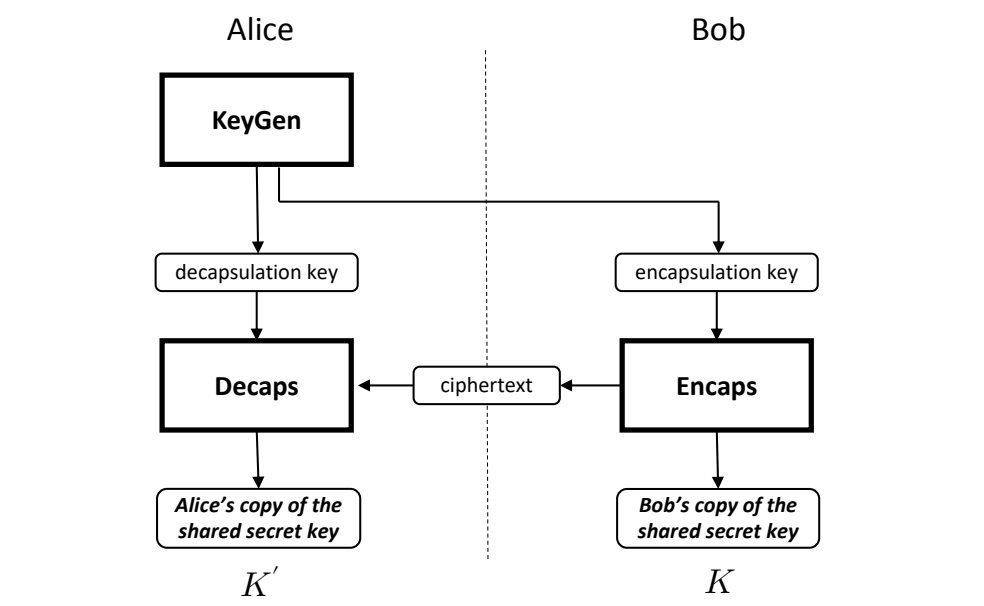

NIST FIPS 203 日本語訳
英語タイトル : Module-Lattice-Based Key-Encapsulation Mechanism Standard日本語タイトル : モジュール格子ベースの鍵カプセル化メカニズム標準
公開日 : 2024-08-13
原文URL : https://csrc.nist.gov/pubs/fips/203/final
翻訳編集 : 自動生成, 原文取得日 : 2026-10-25, 訳文 : 649 / 670 ブロック
[要約] FIPS 203 は、モジュール格子ベースの鍵カプセル化メカニズム（ML-KEM）を規定する連邦情報処理標準です。鍵カプセル化メカニズム（KEM）は、公開チャネル上で通信する二者が共有シークレット鍵を確立するために使うアルゴリズムの集合で、本標準は ML-KEM の概要、補助アルゴリズム、K-PKE 構成要素スキーム、内部アルゴリズム、パラメータセットを扱います。安全に確立された共有シークレット鍵は共通鍵暗号アルゴリズムとともに使えるもので、耐量子や格子ベース暗号をキーワードとする鍵確立方式の一種です。
有志による非公式の日本語訳です。
FIPS 203
FIPS 203
Federal Information Processing Standards Publication
連邦情報処理標準出版物
Module-Lattice-Based Key-Encapsulation Mechanism Standard
モジュール格子ベースの鍵カプセル化メカニズム標準
Category: Computer Security
分類：コンピュータセキュリティ
Subcategory: Cryptography
下位分類：暗号
Information Technology Laboratory National Institute of Standards and Technology Gaithersburg, MD 20899-8900
Information Technology Laboratory 米国国立標準技術研究所 Gaithersburg, MD 20899-8900
This publication is available free of charge from: https://doi.org/10.6028/NIST.FIPS.203
本出版物は次のURLから無料で入手できる：https://doi.org/10.6028/NIST.FIPS.203
Published August 13, 2024
2024年8月13日発行
U.S. Department of Commerce Gina M. Raimondo, Secretary
米国商務省 長官 Gina M. Raimondo
National Institute of Standards and Technology Laurie E. Locascio, NIST Director and Under Secretary of Commerce for Standards and Technology
米国国立標準技術研究所 NIST所長兼商務省標準技術担当次官 Laurie E. Locascio
Foreword
まえがき
The Federal Information Processing Standards (FIPS) Publication Series of the National Institute of Standards and Technology is the official series of publications relating to standards and guidelines developed under 15 U.S.C. 278g-3, and issued by the Secretary of Commerce under 40 U.S.C. 11331.
米国国立標準技術研究所の連邦情報処理標準（FIPS）出版物シリーズは、15 U.S.C. 278g-3に基づいて策定され、40 U.S.C. 11331に基づいて商務長官が発行する標準およびガイドラインに関する公式の出版物シリーズである。
Comments concerning this Federal Information Processing Standard publication are welcomed and should be submitted using the contact information in the “Inquiries and Comments” clause of the announcement section.
本連邦情報処理標準出版物に関するコメントを歓迎する。コメントは、告示部分の「問い合わせおよびコメント」の項に記載の連絡先に提出することが望ましい。
Kevin M. Stine, Director Information Technology Laboratory
Kevin M. Stine, Director Information Technology Laboratory
Abstract
概要
A key-encapsulation mechanism (KEM) is a set of algorithms that, under certain conditions, can be used by two parties to establish a shared secret key over a public channel. A shared secret key that is securely established using a KEM can then be used with symmetric-key cryptographic algorithms to perform basic tasks in secure communications, such as encryption and authentication. This standard specifies a key-encapsulation mechanism called ML-KEM. The security of ML-KEM is related to the computational difficulty of the Module Learning with Errors problem. At present, ML-KEM is believed to be secure, even against adversaries who possess a quantum computer. This standard specifies three parameter sets for ML-KEM. In order of increasing security strength and decreasing performance, these are ML-KEM-512, ML-KEM-768, and ML-KEM-1024.
鍵カプセル化メカニズム（KEM）とは、一定の条件の下で、二者が公開チャネル上で共有シークレット鍵を確立するために使用できるアルゴリズムの集合である。KEMを用いて安全に確立された共有シークレット鍵は、共通鍵暗号アルゴリズムとともに使用して、暗号化や認証など、安全な通信における基本的なタスクを実行できる。本標準は、ML-KEMと呼ぶ鍵カプセル化メカニズムを規定する。ML-KEMの安全性は、Module Learning with Errors問題の計算困難性に関係している。現時点では、ML-KEMは量子コンピュータを保有する敵対者に対しても安全であると考えられている。本標準は、ML-KEMについて3つのパラメータセットを規定する。セキュリティ強度が高く性能が低くなる順に、ML-KEM-512、ML-KEM-768、ML-KEM-1024である。
Keywords: computer security; cryptography; encryption; Federal Information Processing Standards; key-encapsulation mechanism; lattice-based cryptography; post-quantum; public-key cryptography.
キーワード：コンピュータセキュリティ、暗号、暗号化、連邦情報処理標準、鍵カプセル化メカニズム、格子ベース暗号、耐量子、公開鍵暗号。
Federal Information Processing Standards Publication 203
連邦情報処理標準出版物 203
Published: August 13, 2024 Effective: August 13, 2024
発行：2024年8月13日 発効：2024年8月13日
Announcing the Module-Lattice-Based Key-Encapsulation Mechanism Standard
モジュール格子ベースの鍵カプセル化メカニズム標準の告示
Federal Information Processing Standards (FIPS) publications are developed by the National Institute of Standards and Technology (NIST) under 15 U.S.C. 278g-3 and issued by the Secretary of Commerce under 40 U.S.C. 11331.
連邦情報処理標準（FIPS）出版物は、15 U.S.C. 278g-3に基づいて米国国立標準技術研究所（NIST）が策定し、40 U.S.C. 11331に基づいて商務長官が発行する。
1.Name of Standard. Module-Lattice-Based Key-Encapsulation Mechanism Standard (FIPS 203).
1.標準の名称。Module-Lattice-Based Key-Encapsulation Mechanism Standard（FIPS 203）。
2.Category of Standard. Computer Security. Subcategory. Cryptography.
2.標準の分類。コンピュータセキュリティ。下位分類。暗号。
3.Explanation. A cryptographic key (or simply “key”) is represented in a computer as a string of bits. A shared secret key is a cryptographic key that is computed jointly by two parties (e.g., Alice and Bob) using a set of algorithms. Under certain conditions, these algorithms ensure that both parties will produce the same key and that this key is secret from adversaries. Such a shared secret key can then be used with symmetric-key cryptographic algorithms (specified in other NIST standards) to perform tasks such as encryption and authentication of digital information.
3.説明。暗号鍵（または単に「鍵」）は、コンピュータ内ではビット列として表現される。共有シークレット鍵とは、二者（たとえばAliceとBob）がアルゴリズムの集合を用いて共同で計算する暗号鍵である。一定の条件の下で、これらのアルゴリズムは、両者が同一の鍵を生成し、その鍵が敵対者に対して秘密であることを保証する。このような共有シークレット鍵は、（他のNIST標準で規定される）共通鍵暗号アルゴリズムとともに使用して、デジタル情報の暗号化や認証などのタスクを実行できる。
This standard specifies a set of algorithms for establishing a shared secret key. While there are many methods for establishing a shared secret key, the particular method described in this standard is a key-encapsulation mechanism (KEM).
本標準は、共有シークレット鍵を確立するためのアルゴリズムの集合を規定する。共有シークレット鍵を確立する方法は数多くあるが、本標準で記述する特定の方法は鍵カプセル化メカニズム（KEM）である。
In a KEM, the computation of the shared secret key begins with Alice generating a decapsulation key and an encapsulation key. Alice keeps the decapsulation key private and makes the encapsulation key available to Bob. Bob then uses Alice’s encapsulation key to generate one copy of a shared secret key along with an associated ciphertext. Bob then sends the ciphertext to Alice. Finally, Alice uses the ciphertext from Bob along with Alice’s private decapsulation key to compute another copy of the shared secret key.
KEMにおける共有シークレット鍵の計算は、Aliceが脱カプセル化鍵とカプセル化鍵を生成することから始まる。Aliceは脱カプセル化鍵を秘密に保持し、カプセル化鍵をBobが利用できるようにする。次にBobは、Aliceのカプセル化鍵を用いて、共有シークレット鍵の一方のコピーと、それに対応する暗号文を生成する。そしてBobは、その暗号文をAliceに送信する。最後にAliceは、Bobから受け取った暗号文と自身の秘密の脱カプセル化鍵を用いて、共有シークレット鍵のもう一方のコピーを計算する。
The security of the particular KEM specified in this standard is related to the computational difficulty of solving certain systems of noisy linear equations, specifically the Module Learning With Errors (MLWE) problem. At present, it is believed that this particular method of establishing a shared secret key is secure, even against adversaries who possess a quantum computer. In the future, additional KEMs may be specified and approved in FIPS publications or in NIST Special Publications.
本標準で規定する特定のKEMの安全性は、ノイズを含むある種の連立一次方程式、具体的にはModule Learning With Errors（MLWE）問題を解くことの計算困難性に関係している。現時点では、共有シークレット鍵を確立するこの特定の方法は、量子コンピュータを保有する敵対者に対しても安全であると考えられている。将来、追加のKEMがFIPS出版物またはNIST Special Publicationsにおいて規定され、承認される可能性がある。
4.Approving Authority. Secretary of Commerce.
4.承認機関。商務長官。
5.Maintenance Agency. Department of Commerce, National Institute of Standards and Technology, Information Technology Laboratory (ITL).
5.保守機関。商務省、米国国立標準技術研究所、Information Technology Laboratory（ITL）。
6.Applicability. Federal Information Processing Standards apply to information systems used or operated by federal agencies or by a contractor of an agency or other organization on behalf of an agency. They do not apply to national security systems as defined in 44 U.S.C. 3552.
6.適用範囲。連邦情報処理標準は、連邦政府機関が使用もしくは運用する情報システム、または連邦政府機関の契約業者もしくはその他の組織が連邦政府機関に代わって使用もしくは運用する情報システムに適用される。44 U.S.C. 3552に定義される国家安全保障システムには適用されない。
This standard, or other FIPS or NIST Special Publications that specify alternative mechanisms, shall be used wherever the establishment of a shared secret key (or shared secret from which keying material can be generated) is required for federal applications, including the use of such a key with symmetric-key cryptographic algorithms, in accordance with applicable Office of Management and Budget and agency policies.
連邦政府の用途において共有シークレット鍵（または鍵材料を生成できる共有シークレット）の確立が必要とされる場合には、当該鍵を共通鍵暗号アルゴリズムとともに使用する場合を含め、適用される行政管理予算局および各機関のポリシーに従って、本標準、または代替メカニズムを規定する他のFIPSもしくはNIST Special Publicationsを使用しなければならない。
The adoption and use of this standard are available to private and commercial organizations.
本標準は、民間および営利組織も採用し使用できる。
7.Implementations. A key-encapsulation mechanism may be implemented in software, firmware, hardware, or any combination thereof. For every computational procedure that is specified in this standard, a conforming implementation may replace the given set of steps with any mathematically equivalent set of steps. In other words, different procedures that produce the correct output for every input are permitted.
7.実装。鍵カプセル化メカニズムは、ソフトウェア、ファームウェア、ハードウェア、またはそれらの任意の組み合わせで実装してよい。本標準で規定するすべての計算手順について、適合する実装は、示された一連のステップを数学的に等価な任意の一連のステップで置き換えてよい。言い換えれば、すべての入力に対して正しい出力を生成する限り、異なる手順も許容される。
NIST will develop a validation program to test implementations for conformance to the algorithms in this standard. Information about validation programs is available at https: //csrc.nist.gov/projects/cmvp. Example values will be available at https://csrc.nist.gov/proj ects/cryptographic-standards-and-guidelines/example-values.
NISTは、本標準のアルゴリズムへの適合性について実装を試験するための検証プログラムを策定する。検証プログラムに関する情報は https: //csrc.nist.gov/projects/cmvp で入手できる。例示値は https://csrc.nist.gov/proj ects/cryptographic-standards-and-guidelines/example-values で入手可能となる予定である。
8.Other Approved Security Functions. Implementations that comply with this standard shall employ cryptographic algorithms that have been approved for protecting Federal Government-sensitive information. Approved cryptographic algorithms and techniques include those that are either:
8.その他の承認されたセキュリティ機能。本標準に準拠する実装は、連邦政府の機微な情報を保護するために承認された暗号アルゴリズムを使用しなければならない。承認された暗号アルゴリズムおよび技法には、次のいずれかに該当するものが含まれる。
(a) Specified in a Federal Information Processing Standards (FIPS) publication,
(a) 連邦情報処理標準（FIPS）出版物で規定されているもの、
(b) Adopted in a FIPS or NIST recommendation, or
(b) FIPSまたはNISTの勧告で採用されているもの、または
(c) Specified in the list of approved security functions in SP 800-140C.
(c) SP 800-140Cの承認されたセキュリティ機能のリストで規定されているもの。
9.Export Control. Certain cryptographic devices and technical data regarding them are subject to federal export controls. Exports of cryptographic modules that implement this standard and technical data regarding them must comply with all federal laws and regulations and be licensed by the Bureau of Industry and Security of the U.S. Department of Commerce. Information about export regulations is available at https://www.bis.doc.gov.
9.輸出管理。特定の暗号装置およびそれに関する技術データは、連邦の輸出管理の対象となる。本標準を実装する暗号モジュールおよびそれに関する技術データの輸出は、すべての連邦法および規則に準拠し、米国商務省産業安全保障局の許可を受けなければならない。輸出規制に関する情報は https://www.bis.doc.gov で入手できる。
10.Patents. NIST has entered into two patent license agreements to facilitate the adoption of NIST’s announced selection of the PQC key-encapsulation mechanism CRYSTALS-KYBER. NIST and the licensing parties share a desire, in the public interest, the licensed patents be freely available to be practiced by any implementer of the ML-KEM algorithm as published by NIST. ML-KEM is the name given to the algorithm in this standard derived from CRYSTALS-KYBER. For a summary and extracts from the license, please see https://csrc.nist.gov/csrc/media/P rojects/post-quantum-cryptography/documents/selected-algos-2022/nist-pqc-license-sum mary-and-excerpts.pdf. Implementation of the algorithm specified in the standard may be covered by U.S. and foreign patents of which NIST is not aware.
10.特許。NISTは、PQC鍵カプセル化メカニズムCRYSTALS-KYBERの選定に関するNISTの発表を受けて、その採用を促進するために2件の特許ライセンス契約を締結した。NISTとライセンス当事者は、公益の観点から、NISTが公開するML-KEMアルゴリズムのいかなる実装者もライセンス対象特許を自由に実施できるようにすることを共に望んでいる。ML-KEMは、CRYSTALS-KYBERから派生した本標準のアルゴリズムに付けられた名称である。ライセンスの要約と抜粋については、https://csrc.nist.gov/csrc/media/P rojects/post-quantum-cryptography/documents/selected-algos-2022/nist-pqc-license-sum mary-and-excerpts.pdf を参照のこと。本標準で規定するアルゴリズムの実装は、NISTが把握していない米国および外国の特許の対象となる可能性がある。
11.Implementation Schedule. This standard becomes effective immediately upon final publication.
11.実施スケジュール。本標準は、最終版の発行と同時に発効する。
12.Specifications. Federal Information Processing Standards (FIPS) 203, Module-Lattice-Based Key-Encapsulation Mechanism Standard (affixed).
12.仕様。連邦情報処理標準（FIPS）203、Module-Lattice-Based Key-Encapsulation Mechanism Standard（添付）。
13.Qualifications. In applications, the security guarantees of a KEM only hold under certain conditions (see SP 800-227 [1]). One such condition is the secrecy of several values, including the randomness used by the two parties, the decapsulation key, and the shared secret key itself. Users shall, therefore, guard against the disclosure of these values.
13.留意事項。実際の用途において、KEMの安全性保証は一定の条件の下でのみ成り立つ（SP 800-227 [1]を参照）。そのような条件の一つが、二者が使用する乱数（randomness）、脱カプセル化鍵、および共有シークレット鍵そのものを含む、いくつかの値の秘匿性である。したがって、利用者はこれらの値の漏えいを防がなければならない。
While it is the intent of this standard to specify general requirements for implementing ML-KEM algorithms, conformance to this standard does not ensure that a particular implementation is secure. It is the responsibility of the implementer to ensure that any module that implements a key establishment capability is designed and built in a secure manner.
本標準はML-KEMアルゴリズムを実装するための一般的な要件を規定することを意図しているが、本標準への適合は、特定の実装が安全であることを保証するものではない。鍵確立機能を実装するモジュールが安全な方法で設計・構築されていることを確保するのは、実装者の責任である。
Similarly, the use of a product containing an implementation that conforms to this standard does not guarantee the security of the overall system in which the product is used. The responsible authority in each agency or department shall ensure that an overall implementation provides an acceptable level of security.
同様に、本標準に適合する実装を含む製品を使用しても、その製品が使用されるシステム全体の安全性が保証されるわけではない。各機関または省庁の責任者は、全体としての実装が許容可能なレベルのセキュリティを提供することを確保しなければならない。
NIST will continue to follow developments in the analysis of the ML-KEM algorithm. As with its other cryptographic algorithm standards, NIST will formally reevaluate this standard every five years.
NISTは、ML-KEMアルゴリズムの分析の進展を引き続き注視する。他の暗号アルゴリズム標準と同様に、NISTは本標準を5年ごとに正式に再評価する。
Both this standard and possible threats that reduce the security provided through the use of this standard will undergo review by NIST as appropriate, taking into account newly available analysis and technology. In addition, the awareness of any breakthrough in technology or any mathematical weakness of the algorithm will cause NIST to reevaluate this standard and provide necessary revisions.
本標準、および本標準の使用によって提供されるセキュリティを低下させうる脅威の両方について、NISTは新たに利用可能となった分析や技術を考慮しつつ、適宜レビューを行う。加えて、技術上の飛躍的進歩やアルゴリズムの数学的弱点が認識された場合には、NISTは本標準を再評価し、必要な改訂を行う。
14.Waiver Procedure. The Federal Information Security Management Act (FISMA) does not allow for waivers to Federal Information Processing Standards (FIPS) that are made mandatory by the Secretary of Commerce.
14.免除手続き。連邦情報セキュリティマネジメント法（FISMA）は、商務長官が義務化した連邦情報処理標準（FIPS）の免除を認めていない。
15.Where to Obtain Copies of the Standard. This publication is available by accessing https: //csrc.nist.gov/publications. Other computer security publications are available at the same website.
15.本標準の入手先。本出版物は https: //csrc.nist.gov/publications にアクセスして入手できる。その他のコンピュータセキュリティ関連出版物も同じウェブサイトで入手できる。
16.How to Cite This Publication. NIST has assigned NIST FIPS 203 as the publication identifier for this FIPS, per the NIST Technical Series Publication Identifier Syntax. NIST recommends that it be cited as follows:
16.本出版物の引用方法。NISTは、NIST Technical Series Publication Identifier Syntaxに従い、本FIPSの出版物識別子としてNIST FIPS 203を割り当てた。NISTは次のように引用することを推奨する。
National Institute of Standards and Technology (2024) Module-Lattice-Based Key-Encapsulation Mechanism Standard. (Department of Commerce, Washington, D.C.), Federal Information Processing Standards Publication (FIPS) NIST FIPS 203. https://doi.org/10.6028/NIST.FIPS.203
National Institute of Standards and Technology (2024) Module-Lattice-Based Key-Encapsulation Mechanism Standard. (Department of Commerce, Washington, D.C.), Federal Information Processing Standards Publication (FIPS) NIST FIPS 203. https://doi.org/10.6028/NIST.FIPS.203
17.Inquiries and Comments. Inquiries and comments about this FIPS may be submitted to fips-203-comments@nist.gov.
17.問い合わせおよびコメント。本FIPSに関する問い合わせおよびコメントは fips-203-comments@nist.gov に提出できる。
Federal Information Processing Standards Publication 203
連邦情報処理標準出版物 203
Specification for the Module-Lattice-Based Key-Encapsulation Mechanism Standard
モジュール格子ベースの鍵カプセル化メカニズム標準の仕様
Table of Contents
目次
1 Introduction 1
1 はじめに 1
1.1 Purpose and Scope 1
1.1 目的と適用範囲 1
1.2 Context 1
1.2 背景 1
2 Terms, Acronyms, and Notation 2
2 用語、略語、表記 2
2.1 Terms and Definitions 2
2.1 用語と定義 2
2.2 Acronyms 4
2.2 略語 4
2.3 Mathematical Symbols 5
2.3 数学記号 5
2.4 Interpreting the Pseudocode 6
2.4 擬似コードの解釈 6
2.4.1 Data Types 7
2.4.1 データ型 7
2.4.2 Loop Syntax 7
2.4.2 ループの構文 7
2.4.3 Arithmetic With Arrays of Integers 7
2.4.3 整数配列の演算 7
2.4.4 Representations of Algebraic Objects 8
2.4.4 代数的対象の表現 8
2.4.5 Arithmetic With Polynomials and NTT Representations 9
2.4.5 多項式とNTT表現の演算 9
2.4.6 Matrices and Vectors 9
2.4.6 行列とベクトル 9
2.4.7 Arithmetic With Matrices and Vectors 10
2.4.7 行列とベクトルの演算 10
2.4.8 Applying Algorithms to Arrays, Examples 11
2.4.8 配列へのアルゴリズムの適用、例 11
3 Overview of the ML-KEM Scheme 12
3 ML-KEM方式の概要 12
3.1 Key-Encapsulation Mechanisms 12
3.1 鍵カプセル化メカニズム 12
3.2 The ML-KEM Scheme 13
3.2 ML-KEM方式 13
3.3 Requirements for ML-KEM Implementations 15
3.3 ML-KEM実装の要件 15
4 Auxiliary Algorithms 18
4 補助アルゴリズム 18
4.1 Cryptographic Functions 18
4.1 暗号関数 18
4.2 General Algorithms 20
4.2 汎用アルゴリズム 20
4.2.1 Conversion and Compression Algorithms 20
4.2.1 変換および圧縮アルゴリズム 20
4.2.2 Sampling Algorithms 22
4.2.2 サンプリングアルゴリズム 22
4.3 The Number-Theoretic Transform 24
4.3 数論変換 24
4.3.1 Multiplication in the NTT Domain 27
4.3.1 NTT領域における乗算 27
5 The K-PKE Component Scheme 28
5 K-PKE構成要素方式 28
5.1 K-PKE Key Generation 28
5.1 K-PKE鍵生成 28
5.2 K-PKE Encryption 29
5.2 K-PKE暗号化 29
5.3 K-PKE Decryption 31
5.3 K-PKE復号 31
6 Main Internal Algorithms 32
6 主要な内部アルゴリズム 32
6.1 Internal Key Generation 32
6.1 内部鍵生成 32
6.2 Internal Encapsulation 32
6.2 内部カプセル化 32
6.3 Internal Decapsulation 33
6.3 内部脱カプセル化 33
7 The ML-KEM Key-Encapsulation Mechanism 35
7 ML-KEM鍵カプセル化メカニズム 35
7.1 ML-KEM Key Generation 35
7.1 ML-KEM鍵生成 35
7.2 ML-KEM Encapsulation 36
7.2 ML-KEMカプセル化 36
7.3 ML-KEM Decapsulation 37
7.3 ML-KEM脱カプセル化 37
8 Parameter Sets 39
8 パラメータセット 39
References 41
参考文献 41
Appendix A — Precomputed Values for the NTT 44
付録A — NTTの事前計算値 44
Appendix B — SampleNTT Loop Bounds 46
付録B — SampleNTTのループ上限 46
Appendix C — Differences From the CRYSTALS-KYBER Submission 47
付録C — CRYSTALS-KYBER提案からの相違点 47
C.1 Differences Between CRYSTALS-KYBER and FIPS 203 Initial Public Draft 47
C.1 CRYSTALS-KYBERとFIPS 203初期公開草案との相違点 47
C.2 Changes From FIPS 203 Initial Public Draft 47
C.2 FIPS 203初期公開草案からの変更点 47
List of Tables
表一覧
Table 1 Decapsulation failure rates for ML-KEM 15
表1 ML-KEMの脱カプセル化失敗率 15
Table 2 Approved parameter sets for ML-KEM 39
表2 ML-KEMの承認されたパラメータセット 39
Table 3 Sizes (in bytes) of keys and ciphertexts of ML-KEM 39
表3 ML-KEMの鍵および暗号文のサイズ（バイト単位） 39
Table 4 While-loop limits and probabilities of occurrence for SampleNTT 46
表4 SampleNTTのwhileループの上限と発生確率 46
List of Figures
図一覧
Figure 1 A simple view of key establishment using a KEM 12
図1 KEMを用いた鍵確立の簡略図 12
List of Algorithms
アルゴリズム一覧
Algorithm 1 \(\mathsf{ForExample}()\) 8
アルゴリズム 1 \(\mathsf{ForExample}()\) 8
Algorithm 2 \(\mathsf{SHAKE128example}(\mathsf{str}_1, \ldots, \mathsf{str}_m, b_1, \ldots, b_\ell)\) 19
アルゴリズム 2 \(\mathsf{SHAKE128example}(\mathsf{str}_1, \ldots, \mathsf{str}_m, b_1, \ldots, b_\ell)\) 19
Algorithm 3 \(\mathsf{BitsToBytes}(b)\) 20
アルゴリズム 3 \(\mathsf{BitsToBytes}(b)\) 20
Algorithm 4 \(\mathsf{BytesToBits}(B)\) 20
アルゴリズム 4 \(\mathsf{BytesToBits}(B)\) 20
Algorithm 5 \(\mathsf{ByteEncode}_d(F)\) 22
アルゴリズム 5 \(\mathsf{ByteEncode}_d(F)\) 22
Algorithm 6 \(\mathsf{ByteDecode}_d(B)\) 22
アルゴリズム 6 \(\mathsf{ByteDecode}_d(B)\) 22
Algorithm 7 \(\mathsf{SampleNTT}(B)\) 23
アルゴリズム 7 \(\mathsf{SampleNTT}(B)\) 23
Algorithm 8 \(\mathsf{SamplePolyCBD}_\eta(B)\) 23
アルゴリズム 8 \(\mathsf{SamplePolyCBD}_\eta(B)\) 23
Algorithm 9 \(\mathsf{NTT}(f)\) 26
アルゴリズム 9 \(\mathsf{NTT}(f)\) 26
Algorithm 10 \(\mathsf{NTT}^{-1}(\hat{f})\) 26
アルゴリズム 10 \(\mathsf{NTT}^{-1}(\hat{f})\) 26
Algorithm 11 \(\mathsf{MultiplyNTTs}(\hat{f}, \hat{g})\) 27
アルゴリズム 11 \(\mathsf{MultiplyNTTs}(\hat{f}, \hat{g})\) 27
Algorithm 12 \(\mathsf{BaseCaseMultiply}(a_0, a_1, b_0, b_1, \gamma)\) 27
アルゴリズム 12 \(\mathsf{BaseCaseMultiply}(a_0, a_1, b_0, b_1, \gamma)\) 27
Algorithm 13 \(\mathsf{K\text{-}PKE.KeyGen}(d)\) 29
アルゴリズム 13 \(\mathsf{K\text{-}PKE.KeyGen}(d)\) 29
Algorithm 14 \(\mathsf{K\text{-}PKE.Encrypt}(\mathsf{ek}_{\mathsf{PKE}}, m, r)\) 30
アルゴリズム 14 \(\mathsf{K\text{-}PKE.Encrypt}(\mathsf{ek}_{\mathsf{PKE}}, m, r)\) 30
Algorithm 15 \(\mathsf{K\text{-}PKE.Decrypt}(\mathsf{dk}_{\mathsf{PKE}}, c)\) 31
アルゴリズム 15 \(\mathsf{K\text{-}PKE.Decrypt}(\mathsf{dk}_{\mathsf{PKE}}, c)\) 31
Algorithm 16 \(\mathsf{ML\text{-}KEM.KeyGen\_internal}(d, z)\) 32
アルゴリズム 16 \(\mathsf{ML\text{-}KEM.KeyGen\_internal}(d, z)\) 32
Algorithm 17 \(\mathsf{ML\text{-}KEM.Encaps\_internal}(\mathsf{ek}, m)\) 33
アルゴリズム 17 \(\mathsf{ML\text{-}KEM.Encaps\_internal}(\mathsf{ek}, m)\) 33
Algorithm 18 \(\mathsf{ML\text{-}KEM.Decaps\_internal}(\mathsf{dk}, c)\) 34
アルゴリズム 18 \(\mathsf{ML\text{-}KEM.Decaps\_internal}(\mathsf{dk}, c)\) 34
Algorithm 19 \(\mathsf{ML\text{-}KEM.KeyGen}()\) 35
アルゴリズム 19 \(\mathsf{ML\text{-}KEM.KeyGen}()\) 35
Algorithm 20 \(\mathsf{ML\text{-}KEM.Encaps}(\mathsf{ek})\) 37
アルゴリズム 20 \(\mathsf{ML\text{-}KEM.Encaps}(\mathsf{ek})\) 37
Algorithm 21 \(\mathsf{ML\text{-}KEM.Decaps}(\mathsf{dk}, c)\) 38
アルゴリズム 21 \(\mathsf{ML\text{-}KEM.Decaps}(\mathsf{dk}, c)\) 38
1. Introduction
1. はじめに
1.1 Purpose and Scope
1.1 目的と適用範囲
This standard specifies the Module-Lattice-Based Key-Encapsulation Mechanism (ML-KEM). A key-encapsulation mechanism (KEM) is a set of algorithms that can be used to establish a shared secret key between two parties communicating over a public channel. A KEM is a particular type of key establishment scheme. Other NIST-approved key establishment schemes are specified in NIST Special Publication (SP) 800-56A, Recommendation for Pair-Wise Key-Establishment Schemes Using Discrete Logarithm-Based Cryptography [2], and SP 800-56B, Recommendation for Pair-Wise Key Establishment Schemes Using Integer Factorization Cryptography [3].
本標準は、モジュール格子ベースの鍵カプセル化メカニズム（ML-KEM）を規定する。鍵カプセル化メカニズム（KEM）とは、公開チャネル上で通信する二者の間で共有シークレット鍵を確立するために使用できるアルゴリズムの集合である。KEMは鍵確立方式の一種である。NISTが承認したその他の鍵確立方式は、NIST Special Publication（SP）800-56A, Recommendation for Pair-Wise Key-Establishment Schemes Using Discrete Logarithm-Based Cryptography [2]、およびSP 800-56B, Recommendation for Pair-Wise Key Establishment Schemes Using Integer Factorization Cryptography [3]で規定されている。
The key establishment schemes specified in SP 800-56A and SP 800-56B are vulnerable to attacks that use sufficiently-capable quantum computers. ML-KEM is an approved alternative that is presently believed to be secure, even against adversaries in possession of a large-scale fault-tolerant quantum computer. ML-KEM is derived from the round-three version of the CRYSTALS-KYBER KEM [4], a submission in the NIST Post-Quantum Cryptography Standardization project. For the differences between ML-KEM and CRYSTALS-KYBER, see Appendix C.
SP 800-56AおよびSP 800-56Bで規定される鍵確立方式は、十分な能力を持つ量子コンピュータを用いた攻撃に対して脆弱である。ML-KEMは承認された代替方式であり、大規模な誤り耐性量子コンピュータを保有する敵対者に対しても、現時点では安全であると考えられている。ML-KEMは、NIST Post-Quantum Cryptography Standardizationプロジェクトへの提案であるCRYSTALS-KYBER KEM [4]の第3ラウンド版から派生したものである。ML-KEMとCRYSTALS-KYBERの相違点については、付録Cを参照のこと。
This standard specifies the algorithms and parameter sets of the ML-KEM scheme. It aims to provide sufficient information to implement ML-KEM in a manner that can pass validation (see https://csrc.nist.gov/projects/cryptographic-module-validation-program). For general definitions and properties of KEMs, including requirements for the secure use of KEMs in applications, see SP 800-227 [1].
本標準は、ML-KEM方式のアルゴリズムとパラメータセットを規定する。本標準は、検証に合格できる形でML-KEMを実装するのに十分な情報を提供することを目的としている（https://csrc.nist.gov/projects/cryptographic-module-validation-program を参照）。KEMの一般的な定義と特性については、アプリケーションにおけるKEMの安全な使用に関する要件を含め、SP 800-227 [1]を参照のこと。
This standard specifies three parameter sets for ML-KEM that offer different trade-offs in security strength versus performance. All three parameter sets of ML-KEM are approved to protect sensitive, non-classified communication systems of the U.S. Federal Government.
本標準は、セキュリティ強度と性能との間で異なるトレードオフを提供する、ML-KEMの3つのパラメータセットを規定する。ML-KEMの3つのパラメータセットはいずれも、米国連邦政府の機微な非機密通信システムを保護するために承認されている。
1.2 Context
1.2 背景
Over the past several years, there has been steady progress toward building quantum computers. If large-scale quantum computers are realized, the security of many commonly used public-key cryptosystems will be at risk. This would include key-establishment schemes and digital signature schemes whose security depends on the difficulty of solving the integer factorization and discrete logarithm problems (both over finite fields and elliptic curves). As a result, in 2016, NIST initiated a public Post-Quantum Cryptography (PQC) Standardization process to select quantum-resistant public-key cryptographic algorithms. A total of 82 candidate algorithms were submitted to NIST for consideration.
過去数年にわたり、量子コンピュータの構築に向けて着実な進展が見られる。大規模な量子コンピュータが実現すれば、広く使用されている多くの公開鍵暗号システムの安全性が危険にさらされる。これには、（有限体上および楕円曲線上の双方における）整数因数分解問題および離散対数問題を解くことの困難性に安全性が依拠する鍵確立方式やデジタル署名方式が含まれる。そのため、NISTは2016年に、量子耐性のある公開鍵暗号アルゴリズムを選定するための公開の耐量子暗号（PQC）標準化プロセスを開始した。合計82の候補アルゴリズムが検討のためにNISTに提出された。
After three rounds of evaluation and analysis, NIST selected the first four algorithms for standardization. These algorithms are intended to protect sensitive U.S. Government information well into the foreseeable future, including after the advent of cryptographically-relevant quantum computers. This standard specifies a variant of the selected algorithm CRYSTALS-KYBER, a lattice-based key-encapsulation mechanism (KEM) designed by Peter Schwabe, Roberto Avanzi, Joppe Bos, Léo Ducas, Eike Kiltz, Tancrède Lepoint, Vadim Lyubashevsky, John Schanck, Gregor Seiler, Damien Stehlé, and Jintai Ding [4]. Throughout this standard, the KEM specified here will be referred to as ML-KEM, as it is based on the Module Learning With Errors assumption.
3ラウンドにわたる評価と分析を経て、NISTは標準化に向けた最初の4つのアルゴリズムを選定した。これらのアルゴリズムは、暗号解読上意味のある量子コンピュータの出現後も含め、予見可能な将来にわたって米国政府の機微な情報を保護することを意図している。本標準は、選定されたアルゴリズムCRYSTALS-KYBERの一変種を規定する。CRYSTALS-KYBERは、Peter Schwabe、Roberto Avanzi、Joppe Bos、Léo Ducas、Eike Kiltz、Tancrède Lepoint、Vadim Lyubashevsky、John Schanck、Gregor Seiler、Damien Stehlé、Jintai Dingが設計した格子ベースの鍵カプセル化メカニズム（KEM）である[4]。Module Learning With Errors仮定に基づくことから、本標準全体を通じて、ここで規定するKEMをML-KEMと呼ぶ。
2. Terms, Acronyms, and Notation
2. 用語、略語、表記
2.1 Terms and Definitions
2.1 用語と定義
approved — FIPS-approved and/or NIST-recommended. An algorithm or technique that is either 1) specified in a FIPS or NIST recommendation, 2) adopted in a FIPS or NIST recommendation, or 3) specified in a list of NIST-approved security functions.
approved — FIPS で承認された、および／または NIST が推奨する。1) FIPS または NIST の推奨文書で規定されている、2) FIPS または NIST の推奨文書で採用されている、3) NIST が承認したセキュリティ機能のリストで規定されている、のいずれかに該当するアルゴリズムまたは技法。
(KEM) ciphertext — A bit string that is produced by encapsulation and used as an input to decapsulation.
(KEM) ciphertext — カプセル化によって生成され、脱カプセル化の入力として使用されるビット列。
cryptographic module — The set of hardware, software, and/or firmware that implements approved cryptographic functions (including key generation) that are contained within the cryptographic boundary of the module.
cryptographic module — 承認された暗号機能（鍵生成を含む）を実装し、モジュールの暗号境界内に含まれるハードウェア、ソフトウェア、および／またはファームウェアの集合。
decapsulation — The process of applying the Decaps algorithm of a KEM. This algorithm accepts a KEM ciphertext and the decapsulation key as input and produces a shared secret key as output.
decapsulation — KEM の Decaps アルゴリズムを適用する処理。このアルゴリズムは KEM 暗号文と脱カプセル化鍵を入力として受け取り、共有シークレット鍵を出力する。
decapsulation key — A cryptographic key produced by a KEM during key generation and used during the decapsulation process. The decapsulation key must be kept private and must be destroyed after it is no longer needed. (See Section 3.3.)
decapsulation key — 鍵生成の際に KEM が生成し、脱カプセル化の処理で使用される暗号鍵。脱カプセル化鍵は秘密に保たなければならず、不要になった後は破棄しなければならない（3.3 節を参照）。
decryption key — A cryptographic key that is used with a PKE in order to decrypt ciphertexts into plaintexts. The decryption key must be kept private and must be destroyed after it is no longer needed.
decryption key — PKE とともに使用し、暗号文を復号して平文にするための暗号鍵。復号鍵は秘密に保たなければならず、不要になった後は破棄しなければならない。
destroy — An action applied to a key or other piece of secret data. After a piece of secret data is destroyed, no information about its value can be recovered.
destroy — 鍵またはその他の秘密データに対して適用される操作。秘密データを破棄した後は、その値に関する情報を一切復元できない。
encapsulation — The process of applying the Encaps algorithm of a KEM. This algorithm accepts the encapsulation key as input, requires private randomness, and produces a shared secret key and an associated ciphertext as output.
encapsulation — KEM の Encaps アルゴリズムを適用する処理。このアルゴリズムはカプセル化鍵を入力として受け取り、秘密の乱数を必要とし、共有シークレット鍵とそれに対応する暗号文を出力する。
encapsulation key — A cryptographic key produced by a KEM during key generation and used during the encapsulation process. The encapsulation key can be made public. (See Section 3.3.)
encapsulation key — 鍵生成の際に KEM が生成し、カプセル化の処理で使用される暗号鍵。カプセル化鍵は公開してよい（3.3 節を参照）。
encryption key — A cryptographic key that is used with a PKE in order to encrypt plaintexts into ciphertexts. The encryption key can be made public.
encryption key — PKE とともに使用し、平文を暗号化して暗号文にするための暗号鍵。暗号化鍵は公開してよい。
equivalent process — Two processes are equivalent if the same output is produced when the same values are input to each process (either as input parameters, as values made available during the process, or both).
equivalent process — 二つの処理は、各処理に同じ値を入力したとき（入力パラメータとして、処理中に利用可能となる値として、またはその両方として）同じ出力が得られる場合に、等価である。
fresh random value — An output that was produced by a random bit generator and has not been previously used.
fresh random value — 乱数ビット生成器によって生成され、以前に使用されたことのない出力。
Approved hash functions (such as those specified in FIPS 180 [5] and FIPS 202 [6]) are designed to satisfy the following properties:
承認されたハッシュ関数（FIPS 180 [5]やFIPS 202 [6]で規定されるものなど）は、次の特性を満たすように設計されている。
1.(One-way) It is computationally infeasible to find any input that maps to any new pre-specified output.
1.（一方向性）事前に指定された任意の新しい出力に写像される入力を見つけることは、計算上実行不可能である。
hash function — A function on bit strings in which the length of the output is fixed.
hash function — 出力の長さが固定されている、ビット列上の関数。
2.(Collision-resistant) It is computationally infeasible to find any two distinct inputs that map to the same output.
2.（衝突耐性）同じ出力に写像される相異なる二つの入力を見つけることが、計算量的に困難である。
input checking — Examination of a potential input to an algorithm for the purpose of determining whether it conforms to certain requirements.
input checking — アルゴリズムへの入力候補が特定の要件に適合しているかどうかを判定するために、その入力候補を検査すること。
key — A bit string that is used in conjunction with a cryptographic algorithm, such as the encapsulation and decapsulation keys (of a KEM), the shared secret key (produced by a KEM), and the encryption and decryption keys (of a PKE). (See Section 3.3.)
key — 暗号アルゴリズムとともに使用されるビット列。（KEM の）カプセル化鍵と脱カプセル化鍵、（KEM が生成する）共有シークレット鍵、（PKE の）暗号化鍵と復号鍵などがある（3.3 節を参照）。
key-encapsulation mechanism (KEM) — A set of three cryptographic algorithms (KeyGen, Encaps, and Decaps) that can be used by two parties to establish a shared secret key over a public channel.
key-encapsulation mechanism (KEM) — 二者が公開チャネル上で共有シークレット鍵を確立するために使用できる、三つの暗号アルゴリズム（KeyGen、Encaps、Decaps）の組。
key establishment — A procedure that results in secret keying material that is shared among different parties.
key establishment — 異なる当事者間で共有される秘密の鍵材料を結果として生み出す手順。
key pair — A set of two keys with the property that one key can be made public while the other key must be kept private. In this standard, this could refer to either the (encapsulation key, decapsulation key) key pair of a KEM or the (encryption key, decryption key) key pair of a PKE.
key pair — 一方の鍵は公開してよいが、もう一方の鍵は秘密に保たなければならないという性質をもつ、二つの鍵の組。この標準では、KEM の（カプセル化鍵、脱カプセル化鍵）の鍵ペア、または PKE の（暗号化鍵、復号鍵）の鍵ペアのいずれかを指す。
little-endian — The property of a byte string having its bytes positioned in order of increasing significance. In particular, the leftmost (first) byte is the least significant, and the rightmost (last) byte is the most significant. The term “little-endian” may also be applied in the same manner to bit strings (e.g., the 8-bit string \(11010001\) corresponds to the byte \(2^0 + 2^1 + 2^3 + 2^7 = 139\)).
little-endian — バイト列において、各バイトが有意性の低い順に並んでいるという性質。具体的には、最も左（最初）のバイトが最下位であり、最も右（最後）のバイトが最上位である。「リトルエンディアン」という用語は、ビット列にも同様に適用されることがある（例えば、8 ビットの列 \(11010001\) はバイト \(2^0 + 2^1 + 2^3 + 2^7 = 139\) に対応する）。
party — An individual person, organization, device, or process. In this specification, there are two parties (e.g., Party A and Party B, or Alice and Bob) who jointly perform the key establishment process using a KEM.
party — 個人、組織、デバイス、またはプロセス。この仕様では、KEM を使用して鍵確立の処理を共同で行う二つの当事者（例えば当事者 A と当事者 B、または Alice と Bob）が存在する。
pseudorandom — A process (or data produced by a process) is said to be pseudorandom when the outcome is deterministic yet also appears random as long as the internal action of the process is hidden from observation. For cryptographic purposes, “effectively random” means “computationally indistinguishable from random within the limits of the intended security strength.”
pseudorandom — 処理（またはその処理が生成するデータ）は、結果が決定的でありながら、処理の内部動作が観測から隠されている限りランダムに見える場合に、擬似ランダムであるという。暗号の目的においては、「実質的にランダム」とは「意図したセキュリティ強度の範囲内で、ランダムと計算量的に識別不可能」であることを意味する。
public channel — A communication channel between two parties. Such a channel can be observed and possibly also corrupted by third parties.
public channel — 二者間の通信チャネル。このようなチャネルは第三者によって観測される可能性があり、改ざんされる可能性もある。
public-key encryption scheme (PKE) — A set of three cryptographic algorithms (\(\mathsf{KeyGen}\), \(\mathsf{Encrypt}\), and \(\mathsf{Decrypt}\)) that can be used by two parties to send secret data over a public channel. Also known as an asymmetric encryption scheme.
public-key encryption scheme (PKE) — 二者が公開チャネル上で秘密データを送信するために使用できる、三つの暗号アルゴリズム（\(\mathsf{KeyGen}\)、\(\mathsf{Encrypt}\)、\(\mathsf{Decrypt}\)）の組。非対称暗号方式とも呼ばれる。
shared secret — A secret value that has been computed during a key-establishment scheme, is known by both participants, and is used as input to a key-derivation method to produce keying material.
shared secret — 鍵確立方式の中で計算され、両方の参加者が知っており、鍵材料を生成するための鍵導出手法の入力として使用される秘密の値。
shared secret key — A shared secret that can be used directly as a cryptographic key in symmetric-key cryptography. It does not require additional key derivation. The shared secret key must be kept private and must be destroyed when no longer needed.
shared secret key — 共通鍵暗号において暗号鍵として直接使用できる共有シークレット。追加の鍵導出を必要としない。共有シークレット鍵は秘密に保たなければならず、不要になったときには破棄しなければならない。
security category — A number associated with the security strength of a post-quantum cryptographic algorithm, as specified by NIST (see [7]).
security category — NIST が規定する、耐量子暗号アルゴリズムのセキュリティ強度に関連付けられた数（[7] を参照）。
security strength — A number associated with the amount of work (i.e., the number of operations) that is required to break a cryptographic algorithm or system.
security strength — 暗号アルゴリズムまたは暗号システムを破るのに必要な作業量（すなわち演算回数）に関連付けられた数。
shall — Used to indicate a requirement of this standard.
shall — この標準の要件を示すために使用する。
should — Used to indicate a strong recommendation but not a requirement of this standard. Ignoring the recommendation could lead to undesirable results.
should — この標準の要件ではないが、強い推奨を示すために使用する。推奨を無視すると、望ましくない結果を招くおそれがある。
2.2 Acronyms
2.2 略語
AES — Advanced Encryption Standard
AES — Advanced Encryption Standard
CBD — Centered Binomial Distribution
CBD — Centered Binomial Distribution
FIPS — Federal Information Processing Standard
FIPS — Federal Information Processing Standard
KEM — Key-Encapsulation Mechanism
KEM — Key-Encapsulation Mechanism
LWE — Learning with Errors
LWE — Learning with Errors
MLWE — Module Learning with Errors
MLWE — Module Learning with Errors
NIST — National Institute of Standards and Technology
NIST — National Institute of Standards and Technology
NISTIR — NIST Interagency or Internal Report
NISTIR — NIST Interagency or Internal Report
NTT — Number-Theoretic Transform
NTT — Number-Theoretic Transform
PKE — Public-Key Encryption
PKE — Public-Key Encryption
PQC — Post-Quantum Cryptography
PQC — Post-Quantum Cryptography
PRF — Pseudorandom Function
PRF — Pseudorandom Function
RBG — Random Bit Generator
RBG — Random Bit Generator
SHA — Secure Hash Algorithm
SHA — Secure Hash Algorithm
SHAKE — Secure Hash Algorithm \(\mathrm{KECCAK}\)
SHAKE — Secure Hash Algorithm \(\mathrm{KECCAK}\)
SP — Special Publication
SP — Special Publication
XOF — Extendable-Output Function
XOF — Extendable-Output Function
2.3 Mathematical Symbols
2.3 数学記号
\(n\) — Denotes the integer \(256\) throughout this document.
\(n\) — 本文書全体を通じて整数\(256\)を表す。
\(q\) — Denotes the prime integer \(3329 = 2^8 \cdot 13 + 1\) throughout this document.
\(q\) — 本文書全体を通じて素数\(3329 = 2^8 \cdot 13 + 1\)を表す。
\(\zeta\) — Denotes the integer \(17\), which is a primitive \(n\)-th root of unity modulo \(q\).
\(\zeta\) — 整数 \(17\) を表す。これは \(q\) を法とする 1 の原始 \(n\) 乗根である。
\(\mathbb{B}\) — The set \(\{0,1,\ldots,255\}\) of unsigned 8-bit integers (bytes).
\(\mathbb{B}\) — 符号なし 8 ビット整数（バイト）の集合 \(\{0,1,\ldots,255\}\)。
\(\mathbb{Q}\) — The set of rational numbers.
\(\mathbb{Q}\) — 有理数の集合。
\(\mathbb{Z}\) — The set of integers.
\(\mathbb{Z}\) — 整数の集合。
\(\mathbb{Z}_m\) — The ring of integers modulo \(m\) (i.e., the set \(\{0,1,\ldots,m-1\}\) equipped with the operations of addition and multiplication modulo \(m\).)
\(\mathbb{Z}_m\) — \(m\) を法とする整数環（すなわち、\(m\) を法とする加算と乗算の演算を備えた集合 \(\{0,1,\ldots,m-1\}\)）。
\(\mathbb{Z}_m^n\) — The set of \(n\)-tuples over \(\mathbb{Z}_m\) equipped with \(\mathbb{Z}_m\)-module structure. As a data type, this is the set of length-\(n\) arrays whose entries are in \(\mathbb{Z}_m\).
\(\mathbb{Z}_m^n\) — \(\mathbb{Z}_m\) 上の \(n\) 組の集合で、\(\mathbb{Z}_m\) 加群の構造を備えたもの。データ型としては、要素が \(\mathbb{Z}_m\) に属する長さ \(n\) の配列の集合である。
\(R_q\) — The ring \(\mathbb{Z}_q[X]/(X^n+1)\) consisting of polynomials of the form \(f = f_0 + f_1 X + \cdots + f_{255} X^{255}\), where \(f_j \in \mathbb{Z}_q\) for all \(j\). The ring operations are addition and multiplication modulo \(X^n+1\).
\(R_q\) — すべての \(j\) について \(f_j \in \mathbb{Z}_q\) である \(f = f_0 + f_1 X + \cdots + f_{255} X^{255}\) の形の多項式からなる環 \(\mathbb{Z}_q[X]/(X^n+1)\)。環の演算は \(X^n+1\) を法とする加算と乗算である。
\(T_q\) — The image of \(R_q\) under the number-theoretic transform. Its elements are called “NTT representations” of polynomials in \(R_q\). (See Section 4.3.)
\(T_q\) — 数論変換による \(R_q\) の像。その元を \(R_q\) の多項式の「NTT 表現」と呼ぶ。（Section 4.3 を参照。）
\(\mathcal{D}_\eta(R_q)\) — A certain distribution of polynomials in \(R_q\) with small coefficients, from which noise is sampled. The distribution is parameterized by \(\eta \in \{2,3\}\). (See Section 4.2.2.)
\(\mathcal{D}_\eta(R_q)\) — 係数の小さい \(R_q\) の多項式に関するある分布で、ノイズはこの分布からサンプリングされる。分布は \(\eta \in \{2,3\}\) によってパラメータ化される。（Section 4.2.2 を参照。）
\(S^*\) — If \(S\) is a set, this denotes the set of finite-length tuples (or arrays) of elements from the set \(S\), including the empty tuple (or empty array).
\(S^*\) — \(S\) が集合のとき、集合 \(S\) の元からなる有限長の組（または配列）の集合を表す。空の組（または空の配列）を含む。
\(S^k\) — If \(S\) is a set, this denotes the set of \(k\)-tuples (or length-\(k\) arrays) of elements from the set \(S\).
\(S^k\) — \(S\) が集合のとき、集合 \(S\) の元からなる \(k\) 組（または長さ \(k\) の配列）の集合を表す。
\(f_j\) — The coefficient of \(X^j\) of a polynomial \(f = f_0 + f_1 X + \cdots + f_{255} X^{255} \in R_q\).
\(f_j\) — 多項式 \(f = f_0 + f_1 X + \cdots + f_{255} X^{255} \in R_q\) における \(X^j\) の係数。
\(\hat{f}\) — The element of \(T_q\) that is equal to the NTT representation of a polynomial \(f \in R_q\). (See Sections 2.4.4 and 4.3.)
\(\hat{f}\) — 多項式 \(f \in R_q\) の NTT 表現に等しい \(T_q\) の元。（Sections 2.4.4 および 4.3 を参照。）
\(\mathbf{v}^T\), \(\mathbf{A}^T\) — The transpose of a row or column vector \(\mathbf{v}\). In general, the transpose of a matrix \(\mathbf{A}\).
\(\mathbf{v}^T\), \(\mathbf{A}^T\) — 行ベクトルまたは列ベクトル \(\mathbf{v}\) の転置。一般には、行列 \(\mathbf{A}\) の転置。
\(\circ\) — Denotes linear-algebraic composition with coefficients in \(R_q\) or \(T_q\) (e.g., \(\mathbf{A} \circ \mathbf{v}\) denotes the vector resulting from applying matrix \(\mathbf{A}\) to vector \(\mathbf{v}\)). (See Section 2.4.7.)
\(\circ\) — \(R_q\) または \(T_q\) に係数をもつ線形代数的な合成を表す（たとえば、\(\mathbf{A} \circ \mathbf{v}\) は行列 \(\mathbf{A}\) をベクトル \(\mathbf{v}\) に適用した結果のベクトルを表す）。（Section 2.4.7 を参照。）
\(\times_{T_q}\) — Denotes the operation on coefficient arrays that implements product in the ring \(T_q\). (See Sections 2.4.5 and 4.3.1.)
\(\times_{T_q}\) — 環 \(T_q\) における積を実装する、係数配列に対する演算を表す。（Sections 2.4.5 および 4.3.1 を参照。）
\(A \| B\) — The concatenation of two arrays or bit strings \(A\) and \(B\).
\(A \| B\) — 2 つの配列またはビット列 \(A\) と \(B\) の連結。
\(B[i]\) — The entry at index \(i\) in the array \(B\). All arrays have indices that begin at zero.
\(B[i]\) — 配列 \(B\) のインデックス \(i\) の要素。すべての配列のインデックスは 0 から始まる。
\(B[k:m]\) — The subarray \((B[k], B[k+1], \ldots, B[m-1])\) of the array \(B\).
\(B[k:m]\) — 配列 \(B\) の部分配列 \((B[k], B[k+1], \ldots, B[m-1])\)。
\(|B|\) — If \(B\) is a number, this denotes the absolute value of \(B\). If \(B\) is an array, this denotes its length.
\(|B|\) — \(B\) が数のときは \(B\) の絶対値を表す。\(B\) が配列のときはその長さを表す。
\(\lceil x \rceil\) — The ceiling of \(x\) (i.e., the smallest integer greater than or equal to \(x\)).
\(\lceil x \rceil\) — \(x\) の天井（すなわち、\(x\) 以上の最小の整数）。
\(\lfloor x \rfloor\) — The floor of \(x\) (i.e., the largest integer less than or equal to \(x\)).
\(\lfloor x \rfloor\) — \(x\) の床（すなわち、\(x\) 以下の最大の整数）。
\(\lceil x \rfloor\) — The rounding of \(x\) to the nearest integer. If \(x = y + 1/2\) for some \(y \in \mathbb{Z}\), then \(\lceil x \rfloor = y + 1\).
\(\lceil x \rfloor\) — \(x\) を最も近い整数に丸めた値。ある \(y \in \mathbb{Z}\) について \(x = y + 1/2\) であるとき、\(\lceil x \rfloor = y + 1\) とする。
\(:=\) — Denotes that the left-hand side is defined to be the expression on the right-hand side.
\(:=\) — 左辺が右辺の式によって定義されることを表す。
\(r \bmod m\) — The unique integer \(r'\) in \(\{0, 1, \ldots, m-1\}\) such that \(m\) divides \(r - r'\).
\(r \bmod m\) — \(\{0, 1, \ldots, m-1\}\) に属する整数 \(r'\) のうち、\(m\) が \(r - r'\) を割り切るような唯一のもの。
\(\mathsf{BitRev}_7(r)\) — Bit reversal of a seven-bit integer \(r\). Specifically, if \(r = r_0 + 2r_1 + 4r_2 + \cdots + 64r_6\) with \(r_i \in \{0,1\}\), then \(\mathsf{BitRev}_7(r) = r_6 + 2r_5 + 4r_4 + \cdots + 64r_0\).
\(\mathsf{BitRev}_7(r)\) — 7 ビット整数 \(r\) のビット反転。具体的には、\(r_i \in \{0,1\}\) として \(r = r_0 + 2r_1 + 4r_2 + \cdots + 64r_6\) であるとき、\(\mathsf{BitRev}_7(r) = r_6 + 2r_5 + 4r_4 + \cdots + 64r_0\) である。
\(s \leftarrow x\) — In pseudocode, this notation means that the variable \(s\) is assigned the value of the expression \(x\).
\(s \leftarrow x\) — 擬似コードにおいて、変数 \(s\) に式 \(x\) の値を代入することを意味する。
\(s \xleftarrow{\$} \mathbb{B}^{\ell}\) — In pseudocode, this notation means that the variable \(s\) is assigned the value of an array of \(\ell\) random bytes. The bytes must be freshly generated using randomness from an approved RBG. (See Section 3.3.)
\(s \xleftarrow{\$} \mathbb{B}^{\ell}\) — 擬似コードにおいて、変数 \(s\) に \(\ell\) 個のランダムなバイトからなる配列の値を代入することを意味する。これらのバイトは、承認された RBG からの乱数（randomness）を用いて新たに生成しなければならない。（Section 3.3 を参照。）
\(\bot\) — A symbol indicating failure or the lack of output from an algorithm.
\(\bot\) — 失敗、またはアルゴリズムからの出力がないことを示す記号。
2.4 Interpreting the Pseudocode
2.4 擬似コードの解釈
This section outlines the conventions of the pseudocode used to describe the algorithms in this standard. All algorithms are understood to have access to two global integer constants: \(n = 256\) and \(q = 3329\). There are also five global integer variables: \(k\), \(\eta_1\), \(\eta_2\), \(d_u\), and \(d_v\). All other variables are local. The five global variables are set to particular values when a parameter set is selected (see Section 8).
この節では、本標準のアルゴリズムの記述に用いる擬似コードの規約を概説する。すべてのアルゴリズムは、2 つのグローバル整数定数 \(n = 256\) と \(q = 3329\) にアクセスできるものとする。また、5 つのグローバル整数変数 \(k\)、\(\eta_1\)、\(\eta_2\)、\(d_u\)、\(d_v\) がある。それ以外の変数はすべてローカル変数である。5 つのグローバル変数は、パラメータセットを選択したときに特定の値に設定される（Section 8 を参照）。
When algorithms in this specification invoke other algorithms as subroutines, all arguments (i.e., inputs) are passed by value. In other words, a copy of the inputs is created, and the subroutine is invoked with the copy. There is no “passing by reference.”
本仕様のアルゴリズムが他のアルゴリズムをサブルーチンとして呼び出すとき、すべての引数（すなわち入力）は値渡しされる。言い換えれば、入力のコピーが作成され、そのコピーを用いてサブルーチンが呼び出される。「参照渡し」は存在しない。
Pseudocode assignments are performed using the symbol “\(\leftarrow\).” For example, the statement \(z \leftarrow y\) means that the variable \(z\) is assigned the value of variable \(y\). Pseudocode comparisons are performed via the symbol “==.” For example, the expression 𝑥 == 𝑤 is a boolean value that is TRUE if and only if the variables 𝑥 and 𝑤 have the same value.
擬似コードにおける代入は記号「\(\leftarrow\)」を用いて行う。たとえば、文 \(z \leftarrow y\) は変数 \(z\) に変数 \(y\) の値を代入することを意味する。擬似コードにおける比較は記号「==」によって行う。たとえば、式 𝑥 == 𝑤 はブール値であり、変数 𝑥 と 𝑤 が同じ値をもつとき、かつそのときに限り TRUE となる。
In regular text (i.e., outside of the pseudocode), a different convention is applied. There, the “\(=\)” symbol is used both for assigning values and for comparisons, in keeping with standard mathematical notation. When emphasis is needed, assignments will be made with “\(:=\)” instead.
通常の本文中（すなわち擬似コードの外）では、別の規約を適用する。そこでは、標準的な数学の表記に合わせて、記号「\(=\)」を代入と比較の両方に用いる。強調が必要な場合は、代入に「\(:=\)」を用いる。
Variables will always have a valid value that is appropriate to their data type, with two exceptions:
変数は、次の 2 つの例外を除き、常にそのデータ型に適した有効な値をもつ。
1.The outputs of a random bit generator (RBG) have the byte array data type but are also allowed to have the special value NULL. This value indicates that randomness generation failed. This can only occur in ML-KEM.KeyGen and ML-KEM.Encaps.
1.乱数ビット生成器（RBG）の出力はバイト配列のデータ型をもつが、特別な値 NULL をとることも許される。この値は乱数（randomness）の生成に失敗したことを示す。これが起こりうるのは ML-KEM.KeyGen と ML-KEM.Encaps においてのみである。
2.The outputs of ML-KEM.KeyGen and ML-KEM.Encaps have the byte array data type but are also allowed to have the special value \(\bot\). When ML-KEM.KeyGen or ML-KEM.Encaps return the value \(\bot\), this indicates that the algorithm failed due to a failure of randomness generation.
2.ML-KEM.KeyGen と ML-KEM.Encaps の出力はバイト配列のデータ型をもつが、特別な値 \(\bot\) をとることも許される。ML-KEM.KeyGen または ML-KEM.Encaps が値 \(\bot\) を返す場合、それは乱数（randomness）の生成の失敗によってアルゴリズムが失敗したことを示す。
2.4.1 Data Types
2.4.1 データ型
For variables that represent the input or output of an algorithm, the data type (e.g., bit, byte, array of bits) will be explicitly described at the start of the algorithm. For most local variables in the pseudocode, the data type is easily deduced from context. For all other variables, the data type will be declared in a comment. In a single algorithm, the data type of a variable is determined the first time that the variable is used and will not be changed. Variable names can and will be reused across different algorithms, including with different data types.
アルゴリズムの入力または出力を表す変数については、そのデータ型（たとえば、ビット、バイト、ビットの配列）をアルゴリズムの冒頭で明示的に記述する。擬似コード中のほとんどのローカル変数については、データ型は文脈から容易に推測できる。それ以外のすべての変数については、データ型をコメントで宣言する。1 つのアルゴリズム内では、変数のデータ型はその変数が最初に使われた時点で決まり、変更されない。変数名は、異なるアルゴリズムの間で、異なるデータ型であっても再利用されうるし、実際に再利用される。
In addition to standard atomic data types (e.g., bits, bytes) and data structures (e.g., arrays), integers modulo \(m\) (i.e., elements of \(\mathbb{Z}_m\)) will also be used as an abstract data type. It is implicit that reduction modulo \(m\) takes place whenever an assignment is made to a variable in \(\mathbb{Z}_m\). For example, for \(z \in \mathbb{Z}_m\) and integers \(x\) and \(y\), the statement
標準的なアトミックなデータ型（たとえば、ビット、バイト）やデータ構造（たとえば、配列）に加えて、\(m\) を法とする整数（すなわち \(\mathbb{Z}_m\) の元）も抽象データ型として用いる。\(\mathbb{Z}_m\) の変数に代入が行われるときには、常に \(m\) を法とする剰余演算が暗黙に行われる。たとえば、\(z \in \mathbb{Z}_m\) および整数 \(x\) と \(y\) について、文
means that \(z\) is assigned the value \(x + y \bmod m\). The pseudocode is agnostic regarding how an integer modulo \(m\) is represented in actual implementations or how modular reduction is computed.
は、\(z\) に値 \(x + y \bmod m\) を代入することを意味する。擬似コードは、実際の実装において \(m\) を法とする整数をどのように表現するか、あるいはモジュラ剰余をどのように計算するかには依存しない。
2.4.2 Loop Syntax
2.4.2 ループの構文
The pseudocode will make use of both “while” and “for” loops. The “while” syntax is self-explanatory. In the case of “for” loops, the syntax will be in the style of the programming language C. Two simple examples are given in Algorithm 1. The standard mathematical expression (e.g., \(\sum_{i \leftarrow 1}^{n} (i + 3)\)) will be used for simple summations instead of a “for” loop.
擬似コードでは「while」ループと「for」ループの両方を用いる。「while」の構文は説明を要しない。「for」ループの場合、構文はプログラミング言語 C の形式に従う。2 つの簡単な例を Algorithm 1 に示す。単純な総和には、「for」ループの代わりに標準的な数式（たとえば \(\sum_{i \leftarrow 1}^{n} (i + 3)\)）を用いる。
2.4.3 Arithmetic With Arrays of Integers
2.4.3 整数の配列を用いた算術
This standard makes extensive use of arrays of integers modulo \(m\) (i.e., elements of \(\mathbb{Z}_m^{\ell}\)). In a typical case, the relevant values are \(m = q = 3329\) and \(\ell = n = 256\). Arithmetic with arrays in
本標準では、\(m\) を法とする整数の配列（すなわち \(\mathbb{Z}_m^{\ell}\) の元）を多用する。典型的な場合、該当する値は \(m = q = 3329\) および \(\ell = n = 256\) である。配列を用いた算術は、
Algorithm 1 ForExample()
Algorithm 1 ForExample()
Performs two simple “for” loops.
2 つの単純な「for」ループを実行する。
\(\mathbb{Z}_m^{\ell}\) will be done as follows. Let \(a \in \mathbb{Z}_m\) and \(X,Y \in \mathbb{Z}_m^{\ell}\). The statements
\(\mathbb{Z}_m^{\ell}\) においては次のように行う。\(a \in \mathbb{Z}_m\) および \(X,Y \in \mathbb{Z}_m^{\ell}\) とする。文
will result in two arrays \(Z,W \in \mathbb{Z}_m^{\ell}\), with the property that \(Z[i] = a \cdot X[i]\) and \(W[i] = X[i] + Y[i]\) for all \(i\). Multiplication of arrays in \(\mathbb{Z}_m^{\ell}\) will only be meaningful when \(m = q\) and \(\ell = n = 256\), in which case it corresponds to multiplication in a particular ring. This operation will be described in (2.8).
は、すべての \(i\) について \(Z[i] = a \cdot X[i]\) かつ \(W[i] = X[i] + Y[i]\) という性質をもつ 2 つの配列 \(Z,W \in \mathbb{Z}_m^{\ell}\) を生成する。\(\mathbb{Z}_m^{\ell}\) の配列の乗算が意味をもつのは \(m = q\) かつ \(\ell = n = 256\) の場合のみであり、その場合、乗算はある特定の環における乗算に対応する。この演算については (2.8) で説明する。
2.4.4 Representations of Algebraic Objects
2.4.4 代数的対象の表現
An essential operation in ML-KEM is the number-theoretic transform (NTT), which maps a polynomial \(f\) in a certain ring \(R_q\) to its “NTT representation” \(\hat{f}\) in an isomorphic ring \(T_q\). The rings \(R_q\) and \(T_q\) and the NTT are discussed in detail in Section 4.3. This standard will represent elements of \(R_q\) and \(T_q\) in pseudocode using arrays of integers modulo \(q\) as follows.
ML-KEM における本質的な演算は数論変換（NTT）である。NTT は、ある環 \(R_q\) の多項式 \(f\) を、同型な環 \(T_q\) におけるその「NTT 表現」\(\hat{f}\) に写像する。環 \(R_q\) と \(T_q\) および NTT については Section 4.3 で詳しく論じる。本標準では、擬似コードにおいて \(R_q\) と \(T_q\) の元を、\(q\) を法とする整数の配列を用いて次のように表現する。
An element \(f\) of \(R_q\) is a polynomial of the form
\(R_q\) の元 \(f\) は、次の形の多項式である。
and will be represented in pseudocode by the array
これは擬似コードにおいて次の配列で表現される。
whose entries contain the coefficients of \(f\). Overloading notation, the array in (2.5) will also be denoted by \(f\). The \(i\)-th entry of the array \(f\) will thus contain the \(i\)-th coefficient of the polynomial \(f\) (i.e., \(f[i] = f_i\)).
この配列の要素は \(f\) の係数を格納する。表記を多重定義して、(2.5) の配列も \(f\) で表す。したがって、配列 \(f\) の \(i\) 番目の要素には多項式 \(f\) の \(i\) 番目の係数が格納される（すなわち \(f[i] = f_i\)）。
An element (sometimes called “NTT representation”) \(\hat{g}\) of \(T_q\) is a tuple of \(128\) polynomials, each of degree at most one. Specifically,
\(T_q\) の元 \(\hat{g}\)（「NTT 表現」と呼ばれることもある）は、それぞれ次数が高々 1 である \(128\) 個の多項式の組である。具体的には、次のとおりである。
Such an algebraic object will be represented in pseudocode by the array
このような代数的対象は、擬似コードにおいて次の配列で表現される。
Overloading notation, the array in (2.7) will also be denoted by \(\hat{g}\). In this case, the mapping between array entries and coefficients is \(\hat{g}[2i] = \hat{g}_{i,0}\) and \(\hat{g}[2i+1] = \hat{g}_{i,1}\) for \(i \in \{0,1,\ldots,127\}\).
表記を多重定義して、(2.7) の配列も \(\hat{g}\) で表す。この場合、配列の要素と係数の対応は、\(i \in \{0,1,\ldots,127\}\) について \(\hat{g}[2i] = \hat{g}_{i,0}\) および \(\hat{g}[2i+1] = \hat{g}_{i,1}\) である。
Converting between a polynomial \(f \in R_q\) and its NTT representation \(\hat{f} \in T_q\) will be done via the algorithms \(\mathsf{NTT}\) (Algorithm 9) and \(\mathsf{NTT}^{-1}\) (Algorithm 10). These algorithms act on arrays of coefficients, as described above, and satisfy \(\hat{f} = \mathsf{NTT}(f)\) and \(f = \mathsf{NTT}^{-1}(\hat{f})\).
多項式 \(f \in R_q\) とその NTT 表現 \(\hat{f} \in T_q\) との間の変換は、アルゴリズム \(\mathsf{NTT}\)（Algorithm 9）と \(\mathsf{NTT}^{-1}\)（Algorithm 10）によって行う。これらのアルゴリズムは上述のとおり係数の配列に作用し、\(\hat{f} = \mathsf{NTT}(f)\) および \(f = \mathsf{NTT}^{-1}(\hat{f})\) を満たす。
2.4.5 Arithmetic With Polynomials and NTT Representations
2.4.5 多項式と NTT 表現を用いた算術
The algebraic operations of addition and scalar multiplication in \(R_q\) and \(T_q\) are done coordinate-wise. For example, if \(a \in \mathbb{Z}_q\) and \(f \in R_q\), the \(i\)-th coefficient of the polynomial \(a \cdot f \in R_q\) is equal to \(a \cdot f_i \bmod q\). In pseudocode, elements of both \(R_q\) and \(T_q\) are represented by coefficient arrays (i.e., elements of \(\mathbb{Z}_q^{256}\)). The algebraic operations of addition and scalar multiplication are thus performed by addition and scalar multiplication of the corresponding coefficient arrays, as in (2.3) and (2.2). For example, the addition of two NTT representations in pseudocode is performed by a statement of the form \(\hat{h} \leftarrow \hat{f} + \hat{g}\), where \(\hat{h}, \hat{f}, \hat{g} \in \mathbb{Z}_q^{256}\) are coefficient arrays.
\(R_q\) と \(T_q\) における加算とスカラー倍の代数演算は、座標ごとに行う。たとえば、\(a \in \mathbb{Z}_q\) かつ \(f \in R_q\) であるとき、多項式 \(a \cdot f \in R_q\) の \(i\) 番目の係数は \(a \cdot f_i \bmod q\) に等しい。擬似コードでは、\(R_q\) と \(T_q\) のいずれの元も係数配列（すなわち \(\mathbb{Z}_q^{256}\) の元）で表現される。したがって、加算とスカラー倍の代数演算は、(2.3) および (2.2) のように、対応する係数配列の加算とスカラー倍によって実行される。たとえば、擬似コードにおける 2 つの NTT 表現の加算は、\(\hat{h} \leftarrow \hat{f} + \hat{g}\) の形の文によって実行される。ここで \(\hat{h}, \hat{f}, \hat{g} \in \mathbb{Z}_q^{256}\) は係数配列である。
The algebraic operations of multiplication in \(R_q\) and \(T_q\) are treated as follows. For efficiency reasons, multiplication in \(R_q\) will not be used. The algebraic meaning of multiplication in \(T_q\) is discussed in Section 4.3.1. In pseudocode, it will be performed by the algorithm \(\mathsf{MultiplyNTTs}\) (Algorithm 11). Specifically, if \(\hat{f}, \hat{g} \in \mathbb{Z}_q^{256}\) are a pair of arrays (each representing the NTT of some polynomial), then
\(R_q\) と \(T_q\) における乗算の代数演算は、次のように扱う。効率上の理由から、\(R_q\) における乗算は用いない。\(T_q\) における乗算の代数的な意味は Section 4.3.1 で論じる。擬似コードでは、この乗算はアルゴリズム \(\mathsf{MultiplyNTTs}\)（Algorithm 11）によって実行される。具体的には、\(\hat{f}, \hat{g} \in \mathbb{Z}_q^{256}\) が配列の組（それぞれある多項式の NTT を表す）であるとき、
The result is an array \(\hat{h} \in \mathbb{Z}_q^{256}\).
その結果は配列 \(\hat{h} \in \mathbb{Z}_q^{256}\) である。
2.4.6 Matrices and Vectors
2.4.6 行列とベクトル
In addition to arrays of integers modulo \(q\), the pseudocode will also make use of arrays whose entries are themselves elements of \(\mathbb{Z}_q^{256}\). For example, an element \(\mathbf{v} \in (\mathbb{Z}_q^{256})^3\) will be a length-three array whose entries \(\mathbf{v}[0]\), \(\mathbf{v}[1]\), and \(\mathbf{v}[2]\) are themselves elements of \(\mathbb{Z}_q^{256}\) (i.e., arrays). One can think of each of these entries as representing a polynomial in \(R_q\) so that \(\mathbf{v}\) itself represents an element of the module \(R_q^3\).
擬似コードでは、\(q\) を法とする整数の配列に加えて、要素そのものが \(\mathbb{Z}_q^{256}\) の元である配列も用いる。たとえば、元 \(\mathbf{v} \in (\mathbb{Z}_q^{256})^3\) は長さ 3 の配列であり、その要素 \(\mathbf{v}[0]\)、\(\mathbf{v}[1]\)、\(\mathbf{v}[2]\) はそれ自体 \(\mathbb{Z}_q^{256}\) の元（すなわち配列）である。これらの各要素は \(R_q\) の多項式を表すと考えることができ、したがって \(\mathbf{v}\) 自体は加群 \(R_q^3\) の元を表す。
When arrays are used to represent matrices and vectors whose entries are elements of \(R_q\), they will be denoted with bold letters (e.g., \(\mathbf{v}\) for vectors and \(\mathbf{A}\) for matrices). When arrays are used to represent matrices and vectors whose entries are elements of \(T_q\), they will be denoted with a “hat” (e.g., \(\hat{\mathbf{v}}\) and \(\hat{\mathbf{A}}\)). Unless an explicit transpose operation is performed, it is understood that vectors are column vectors. One can then view vectors as the special case of matrices with only one column.
要素が \(R_q\) の元である行列やベクトルを配列で表現する場合、太字で表す（たとえば、ベクトルには \(\mathbf{v}\)、行列には \(\mathbf{A}\)）。要素が \(T_q\) の元である行列やベクトルを配列で表現する場合、「ハット」を付けて表す（たとえば \(\hat{\mathbf{v}}\) および \(\hat{\mathbf{A}}\)）。明示的に転置演算を行わない限り、ベクトルは列ベクトルであるものとする。したがって、ベクトルは列が 1 つだけの行列の特殊な場合とみなすことができる。
Converting between matrices over \(R_q\) and matrices over \(T_q\) will be done coordinate-wise. For example, if \(\mathbf{v} \in (\mathbb{Z}_q^{256})^k\), then the statement
\(R_q\) 上の行列と \(T_q\) 上の行列との間の変換は、座標ごとに行う。たとえば、\(\mathbf{v} \in (\mathbb{Z}_q^{256})^k\) であるとき、文
will result in \(\hat{\mathbf{v}} \in (\mathbb{Z}_q^{256})^k\) such that \(\hat{\mathbf{v}}[i] = \mathsf{NTT}(\mathbf{v}[i])\) for all \(i\). This involves running \(\mathsf{NTT}\) a total of \(k\) times.
は、すべての \(i\) について \(\hat{\mathbf{v}}[i] = \mathsf{NTT}(\mathbf{v}[i])\) となる \(\hat{\mathbf{v}} \in (\mathbb{Z}_q^{256})^k\) を生成する。これには \(\mathsf{NTT}\) を合計 \(k\) 回実行する必要がある。
2.4.7 Arithmetic With Matrices and Vectors
2.4.7 行列とベクトルを用いた算術
The following describes how to perform arithmetic with matrices over \(R_q\) and \(T_q\) with vectors as a special case.
以下では、\(R_q\) 上および \(T_q\) 上の行列を用いた算術の実行方法を、ベクトルを特殊な場合として含めて説明する。
Addition and scalar multiplication are performed coordinate-wise, so the addition of matrices over \(R_q\) and \(T_q\) is straightforward. In the case of \(T_q\), scalar multiplication is done via (2.8). For example, if \(\hat{f} \in \mathbb{Z}_q^{256}\) and \(\hat{\mathbf{u}}, \hat{\mathbf{v}} \in (\mathbb{Z}_q^{256})^k\), then
加算とスカラー倍は座標ごとに行うため、\(R_q\) 上および \(T_q\) 上の行列の加算は単純である。\(T_q\) の場合、スカラー倍は (2.8) によって行う。たとえば、\(\hat{f} \in \mathbb{Z}_q^{256}\) かつ \(\hat{\mathbf{u}}, \hat{\mathbf{v}} \in (\mathbb{Z}_q^{256})^k\) であるとき、
will result in \(\hat{\mathbf{w}}, \hat{\mathbf{z}} \in (\mathbb{Z}_q^{256})^k\) satisfying \(\hat{\mathbf{w}}[i] = \hat{f} \times_{T_q} \hat{\mathbf{u}}[i]\) and \(\hat{\mathbf{z}}[i] = \hat{\mathbf{u}}[i] + \hat{\mathbf{v}}[i]\) for all \(i\). Here, the multiplication and addition of individual entries are performed using the appropriate arithmetic for coefficient arrays of elements of \(T_q\) (i.e., as in (2.3)).
は、すべての \(i\) について \(\hat{\mathbf{w}}[i] = \hat{f} \times_{T_q} \hat{\mathbf{u}}[i]\) および \(\hat{\mathbf{z}}[i] = \hat{\mathbf{u}}[i] + \hat{\mathbf{v}}[i]\) を満たす \(\hat{\mathbf{w}}, \hat{\mathbf{z}} \in (\mathbb{Z}_q^{256})^k\) を生成する。ここで、個々の要素の乗算と加算は、\(T_q\) の元の係数配列に対する適切な算術を用いて（すなわち (2.3) のように）実行される。
It will also be necessary to multiply matrices with entries in \(T_q\), which is done by using standard matrix multiplication with the base-case multiplication (i.e., multiplication of individual entries) being multiplication in \(T_q\). If \(\hat{\mathbf{A}}\) and \(\hat{\mathbf{B}}\) are two matrices with entries in \(T_q\), their matrix product will be denoted \(\hat{\mathbf{A}} \circ \hat{\mathbf{B}}\). Some example pseudocode statements involving matrix multiplication are given in (2.12), (2.13), and (2.14). In these examples, \(\hat{\mathbf{A}}\) is a \(k \times k\) matrix, while \(\hat{\mathbf{u}}\) and \(\hat{\mathbf{v}}\) are vectors of length \(k\). All three of these objects are represented in pseudocode by arrays: a \(k \times k\) array for \(\hat{\mathbf{A}}\) and length-\(k\) arrays for \(\hat{\mathbf{u}}\) and \(\hat{\mathbf{v}}\). The entries of \(\hat{\mathbf{A}}\), \(\hat{\mathbf{u}}\), and \(\hat{\mathbf{v}}\) are elements of \(\mathbb{Z}_q^{256}\). In (2.12) and (2.13), the pseudocode statement on the left produces a new length-\(k\) vector whose entries are specified on the right. In (2.14), the pseudocode statement on the left computes a dot product. The result is in the base ring (i.e., \(T_q\)) and is represented by an element \(\hat{z}\) of \(\mathbb{Z}_q^{256}\).
\(T_q\) に要素をもつ行列の乗算も必要となる。これは、基本となる乗算（すなわち個々の要素の乗算）を \(T_q\) における乗算とした標準的な行列乗算を用いて行う。\(\hat{\mathbf{A}}\) と \(\hat{\mathbf{B}}\) が \(T_q\) に要素をもつ 2 つの行列であるとき、それらの行列積を \(\hat{\mathbf{A}} \circ \hat{\mathbf{B}}\) で表す。行列乗算を含む擬似コードの文の例を (2.12)、(2.13)、(2.14) に示す。これらの例では、\(\hat{\mathbf{A}}\) は \(k \times k\) 行列であり、\(\hat{\mathbf{u}}\) と \(\hat{\mathbf{v}}\) は長さ \(k\) のベクトルである。これら 3 つの対象はいずれも擬似コードでは配列で表現される。すなわち、\(\hat{\mathbf{A}}\) は \(k \times k\) 配列、\(\hat{\mathbf{u}}\) と \(\hat{\mathbf{v}}\) は長さ \(k\) の配列である。\(\hat{\mathbf{A}}\)、\(\hat{\mathbf{u}}\)、\(\hat{\mathbf{v}}\) の要素は \(\mathbb{Z}_q^{256}\) の元である。(2.12) と (2.13) では、左側の擬似コードの文は長さ \(k\) の新しいベクトルを生成し、その要素は右側で指定される。(2.14) では、左側の擬似コードの文は内積を計算する。その結果は基礎環（すなわち \(T_q\)）に属し、\(\mathbb{Z}_q^{256}\) の元 \(\hat{z}\) で表現される。
The multiplication \(\times_{T_q}\) of individual entries above is performed using \(\mathsf{MultiplyNTTs}\), as described in (2.8).
上記の個々の要素の乗算 \(\times_{T_q}\) は、(2.8) で説明したとおり \(\mathsf{MultiplyNTTs}\) を用いて実行する。
2.4.8 Applying Algorithms to Arrays, Examples
2.4.8 配列へのアルゴリズムの適用、例
In the previous examples, arithmetic over \(\mathbb{Z}_m\) was extended to arithmetic with arrays over \(\mathbb{Z}_m\) and then further extended to arithmetic with matrices whose entries are themselves arrays over \(\mathbb{Z}_m\). Similarly, algorithms defined with a given data type as input will be applied to arrays and matrices over that data type. When the pseudocode invokes such an algorithm on an array or matrix input, it is implied that the algorithm is invoked repeatedly and applied to each entry of the input.
前述の例では、\(\mathbb{Z}_m\) 上の算術を \(\mathbb{Z}_m\) 上の配列による算術へ拡張し、さらに、成分自体が \(\mathbb{Z}_m\) 上の配列である行列による算術へと拡張した。同様に、ある型のデータを入力として定義されたアルゴリズムは、その型の配列や行列にも適用される。擬似コードがこのようなアルゴリズムを配列や行列の入力に対して呼び出す場合、そのアルゴリズムは繰り返し呼び出され、入力の各成分に適用されることを意味する。
For example, consider the function \(\mathsf{Compress}_d : \mathbb{Z}_q \to \mathbb{Z}_{2^d}\) defined in Section 4. It can be invoked on an array input \(F \in \mathbb{Z}_q^{256}\) with the statement
例として、第4節で定義される関数 \(\mathsf{Compress}_d : \mathbb{Z}_q \to \mathbb{Z}_{2^d}\) を考える。この関数は、配列の入力 \(F \in \mathbb{Z}_q^{256}\) に対して次の文で呼び出すことができる。
The result will be an array \(K \in \mathbb{Z}_{2^d}^{256}\) such that \(K[i] = \mathsf{Compress}_d(F[i])\) for every \(i \in \{0,1,\ldots,255\}\). The computation (2.15) involves running the \(\mathsf{Compress}\) algorithm \(256\) times.
結果は、すべての \(i \in \{0,1,\ldots,255\}\) について \(K[i] = \mathsf{Compress}_d(F[i])\) となる配列 \(K \in \mathbb{Z}_{2^d}^{256}\) である。計算 (2.15) では \(\mathsf{Compress}\) アルゴリズムを \(256\) 回実行する。
For a second example, consider the algorithm \(\mathsf{NTT}\) defined in Section 4.3. It takes an array \(f \in \mathbb{Z}_q^{256}\) (representing an element of \(R_q\)) as input and outputs another array \(\hat{f} \in \mathbb{Z}_q^{256}\) (representing an element of \(T_q\)). If the \(\mathsf{NTT}\) algorithm is invoked on a vector \(\mathbf{s} \in (\mathbb{Z}_q^{256})^k\) (representing an element of \(R_q^k\)) with the pseudocode statement
2つ目の例として、4.3節で定義されるアルゴリズム \(\mathsf{NTT}\) を考える。このアルゴリズムは、配列 \(f \in \mathbb{Z}_q^{256}\)（\(R_q\) の元を表す）を入力として受け取り、別の配列 \(\hat{f} \in \mathbb{Z}_q^{256}\)（\(T_q\) の元を表す）を出力する。\(\mathsf{NTT}\) アルゴリズムをベクトル \(\mathbf{s} \in (\mathbb{Z}_q^{256})^k\)（\(R_q^k\) の元を表す）に対して次の擬似コードの文で呼び出すと、
the result is a vector \(\hat{\mathbf{s}} \in (\mathbb{Z}_q^{256})^k\) such that \(\hat{\mathbf{s}}[i] = \mathsf{NTT}(\mathbf{s}[i])\) for all \(i \in \{0,1,\ldots,k-1\}\). The vector \(\hat{\mathbf{s}}\) represents an element of \(T_q^k\). The computation (2.16) involves running the \(\mathsf{NTT}\) algorithm \(k\) times.
結果は、すべての \(i \in \{0,1,\ldots,k-1\}\) について \(\hat{\mathbf{s}}[i] = \mathsf{NTT}(\mathbf{s}[i])\) となるベクトル \(\hat{\mathbf{s}} \in (\mathbb{Z}_q^{256})^k\) である。ベクトル \(\hat{\mathbf{s}}\) は \(T_q^k\) の元を表す。計算 (2.16) では \(\mathsf{NTT}\) アルゴリズムを \(k\) 回実行する。
For a third example, consider line 2 of K-PKE.Encrypt in Section 5.2:
3つ目の例として、5.2節の K-PKE.Encrypt の2行目を考える。
\(\mathsf{ByteDecode}_{12}\) is defined to receive a byte array of length \(32 \cdot 12 = 384\) as input and produce an integer array in \(\mathbb{Z}_q^{256}\) as output. The computation (2.17) is run on the first \(384k\) bytes of byte array \(\mathsf{ek}_{\mathsf{PKE}}\) and results in \(\hat{\mathbf{t}} \in (\mathbb{Z}_q^{256})^k\). \(\mathsf{ByteDecode}_{12}\) will thus be applied \(k\) times, once for each subarray \(\mathsf{ek}_{\mathsf{PKE}}[384 \cdot j, 384 \cdot (j+1)]\), and will result in an integer array \(\hat{\mathbf{t}}[j] \in \mathbb{Z}_q^{256}\) such that \(\hat{\mathbf{t}}[j] = \mathsf{ByteDecode}_{12}(\mathsf{ek}_{\mathsf{PKE}}[384 \cdot j, 384 \cdot (j+1)])\) for each \(j\) from \(0\) to \(k-1\).
\(\mathsf{ByteDecode}_{12}\) は、長さ \(32 \cdot 12 = 384\) のバイト配列を入力として受け取り、\(\mathbb{Z}_q^{256}\) の整数配列を出力するよう定義されている。計算 (2.17) はバイト配列 \(\mathsf{ek}_{\mathsf{PKE}}\) の先頭 \(384k\) バイトに対して実行され、\(\hat{\mathbf{t}} \in (\mathbb{Z}_q^{256})^k\) を得る。したがって、\(\mathsf{ByteDecode}_{12}\) は各部分配列 \(\mathsf{ek}_{\mathsf{PKE}}[384 \cdot j, 384 \cdot (j+1)]\) に1回ずつ、計 \(k\) 回適用され、\(0\) から \(k-1\) までの各 \(j\) について \(\hat{\mathbf{t}}[j] = \mathsf{ByteDecode}_{12}(\mathsf{ek}_{\mathsf{PKE}}[384 \cdot j, 384 \cdot (j+1)])\) となる整数配列 \(\hat{\mathbf{t}}[j] \in \mathbb{Z}_q^{256}\) を得る。
3. Overview of the ML-KEM Scheme
3. ML-KEM方式の概要
This section gives a high-level overview of the ML-KEM scheme.
本節では、ML-KEM方式の概要を示す。
3.1 Key-Encapsulation Mechanisms
3.1 鍵カプセル化メカニズム
The following is a high-level overview of key-encapsulation mechanisms (KEMs). For details, see SP 800-227 [1].
以下は、鍵カプセル化メカニズム（KEM）の概要である。詳細は SP 800-227 [1] を参照のこと。
A KEM is a cryptographic scheme that, under certain conditions, can be used to establish a shared secret key between two communicating parties. This shared secret key can then be used for symmetric-key cryptography.
KEMは、一定の条件の下で、通信する2者間で共有シークレット鍵を確立するために使用できる暗号方式である。確立した共有シークレット鍵は、共通鍵暗号に使用できる。
A KEM consists of three algorithms and a collection of parameter sets. The three algorithms are:
KEMは、3つのアルゴリズムとパラメータセットの集合から成る。3つのアルゴリズムは次のとおりである。
1.A probabilistic key generation algorithm denoted by KeyGen
1.KeyGenで表される確率的な鍵生成アルゴリズム
2.A probabilistic ”encapsulation” algorithm denoted by Encaps
2.Encapsで表される確率的な「カプセル化」アルゴリズム
3.A deterministic ”decapsulation” algorithm denoted by Decaps
3.Decapsで表される決定的な「脱カプセル化」アルゴリズム
The collection of parameter sets is used to select a trade-off between security and efficiency. Each parameter set in the collection is a list of specific (typically numerical) values, one for each parameter required by the three algorithms.
パラメータセットの集合は、安全性と効率のトレードオフを選択するために使用する。集合内の各パラメータセットは、3つのアルゴリズムが必要とする各パラメータに1つずつ対応する、特定の（通常は数値の）値のリストである。

図1. KEMを用いた鍵確立の簡略図。縦の点線が左の「Alice」と右の「Bob」を分ける。Alice側の「KeyGen」は「decapsulation key」（脱カプセル化鍵）を出力してAlice側の「Decaps」へ渡し、「encapsulation key」（カプセル化鍵）を出力してBob側の「Encaps」へ渡す。「Encaps」は「ciphertext」（暗号文）を「Decaps」へ送り、「Bob’s copy of the shared secret key」（Bobが持つ共有シークレット鍵）を出力する（Kと記す）。「Decaps」は「Alice’s copy of the shared secret key」（Aliceが持つ共有シークレット鍵）を出力する（K′と記す）。
Figure 1. A simple view of key establishment using a KEM
図1. KEMを用いた鍵確立の簡略図
In the typical application, a KEM is used to establish a shared secret key between two parties (here referred to as Alice and Bob) as described in Figure 1. Alice begins by running KeyGen in order to generate a (public) encapsulation key and a (private) decapsulation key. Upon obtaining Alice’s encapsulation key, Bob runs the Encaps algorithm, which produces Bob’s copy \(K\) of the shared secret key along with an associated ciphertext. Bob sends the ciphertext to Alice, and Alice completes the process by running the Decaps algorithm using her decapsulation key and the ciphertext. This final step produces Alice’s copy \(K'\) of the shared secret key.
典型的な用途では、図1に示すように、KEMは2者（ここではAliceとBobと呼ぶ）の間で共有シークレット鍵を確立するために使用される。Aliceはまず KeyGen を実行し、（公開の）カプセル化鍵と（秘密の）脱カプセル化鍵を生成する。Aliceのカプセル化鍵を入手したBobは Encaps アルゴリズムを実行し、Bobが保持する共有シークレット鍵 \(K\) と、それに対応する暗号文を得る。Bobは暗号文をAliceに送信し、Aliceは自身の脱カプセル化鍵と暗号文を用いて Decaps アルゴリズムを実行することで処理を完了する。この最後のステップにより、Aliceが保持する共有シークレット鍵 \(K'\) が得られる。
After completing this process, Alice and Bob would like to conclude that their outputs satisfy \(K' = K\) and that this value is a secure, random, shared secret key. However, these properties only hold if certain important conditions are satisfied, as discussed in SP 800-227 [1].
この処理を完了した後、AliceとBobは、それぞれの出力が \(K' = K\) を満たし、その値が安全でランダムな共有シークレット鍵であると結論したい。しかし、SP 800-227 [1] で論じるように、これらの性質は一定の重要な条件が満たされる場合にのみ成り立つ。
3.2 The ML-KEM Scheme
3.2 ML-KEM方式
ML-KEM is a key-encapsulation mechanism based on CRYSTALS-KYBER [4], a scheme that was initially described in [8]. The following is a brief and informal description of the computational assumption underlying ML-KEM and how the ML-KEM scheme is constructed.
ML-KEMは、CRYSTALS-KYBER [4] に基づく鍵カプセル化メカニズムである。CRYSTALS-KYBER は当初 [8] で記述された方式である。以下では、ML-KEMの根拠となる計算量的仮定と、ML-KEM方式の構成方法を簡潔かつ非形式的に説明する。
The computational assumption. The security of ML-KEM is based on the presumed hardness of the so-called Module Learning with Errors (MLWE) problem [9], which is a generalization of the Learning With Errors (LWE) problem introduced by Regev in 2005 [10]. The hardness of the MLWE problem is itself based on the presumed hardness of certain computational problems in module lattices [9]. This motivates the name of the scheme ML-KEM.
計算量的仮定。ML-KEMの安全性は、いわゆるModule Learning with Errors（MLWE）問題 [9] が困難であるという推定に基づく。MLWE問題は、2005年にRegevが導入したLearning With Errors（LWE）問題 [10] を一般化したものである。MLWE問題の困難性自体は、モジュール格子における特定の計算問題が困難であるという推定に基づく [9]。これが方式名 ML-KEM の由来である。
In the LWE problem, the input is a set of random “noisy” linear equations in some secret variables \(x \in \mathbb{Z}_q^n\), and the task is to recover \(x\). The noise in the equations is such that standard algorithms (e.g., Gaussian elimination) are intractable. The LWE problem naturally lends itself to cryptographic applications. For example, if \(x\) is interpreted as a secret key, then one can encrypt a one-bit plaintext value by sampling either an approximately correct linear equation (if the plaintext is zero) or a far-from-correct linear equation (if the plaintext is one). Plausibly, only a party in possession of \(x\) can distinguish these two cases. Encryption can then be delegated to another party by publishing a large collection of noisy linear equations, which can be combined appropriately by the encrypting party. The result is an asymmetric encryption scheme.
LWE問題では、入力はある秘密変数 \(x \in \mathbb{Z}_q^n\) に関するランダムな「ノイズ付き」線形方程式の集合であり、課題は \(x\) を復元することである。方程式のノイズは、標準的なアルゴリズム（例：ガウスの消去法）では解けない程度に加えられている。LWE問題は、自然に暗号への応用に適している。例えば、\(x\) を秘密鍵とみなせば、1ビットの平文の値は、近似的に正しい線形方程式（平文が0の場合）または正しさから大きく外れた線形方程式（平文が1の場合）のいずれかをサンプリングすることで暗号化できる。この2つの場合を区別できるのは、\(x\) を保有する者だけであると考えられる。さらに、ノイズ付き線形方程式の大きな集合を公開すれば、暗号化を他者に委ねることができる。暗号化する者はそれらを適切に組み合わせればよい。その結果、非対称暗号方式が得られる。
The MLWE problem is similar to the LWE problem. An important difference is that, in MLWE, \(\mathbb{Z}_q^n\) is replaced by a certain module \(R_q^k\), which is constructed by taking the \(k\)-fold Cartesian product of a certain polynomial ring \(R_q\). In particular, the secret in the MLWE problem is an element \(\mathbf{x}\) of the module \(R_q^k\). The ring \(R_q\) is discussed in detail in Section 4.3.
MLWE問題はLWE問題に似ている。重要な違いは、MLWEでは \(\mathbb{Z}_q^n\) が、ある多項式環 \(R_q\) の \(k\) 重直積をとって構成される特定のモジュール \(R_q^k\) に置き換えられることである。特に、MLWE問題における秘密は、モジュール \(R_q^k\) の元 \(\mathbf{x}\) である。環 \(R_q\) については4.3節で詳しく論じる。
The ML-KEM construction.
ML-KEMの構成。
At a high level, the construction of the scheme ML-KEM proceeds in two steps. First, the ideas discussed previously are used to construct a public-key encryption (PKE) scheme from the MLWE problem. Second, this PKE scheme is converted into a key-encapsulation mechanism using the so-called Fujisaki-Okamoto (FO) transform [11, 12]. Due to certain properties of the FO transform, the resulting KEM provides security in a significantly more general attack model than the PKE scheme. As a result, ML-KEM is believed to satisfy so-called IND-CCA2 security [1, 4, 13, 14].
大まかに言えば、ML-KEM方式は2つのステップで構成される。まず、前述の考え方を用いて、MLWE問題から公開鍵暗号（PKE）方式を構成する。次に、いわゆる藤崎・岡本（FO）変換 [11, 12] を用いて、このPKE方式を鍵カプセル化メカニズムに変換する。FO変換の性質により、得られるKEMは、PKE方式よりも格段に一般的な攻撃モデルにおいて安全性を提供する。その結果、ML-KEMはいわゆるIND-CCA2安全性を満たすと考えられている [1, 4, 13, 14]。
The specification of the ML-KEM algorithms in this standard will follow the same pattern. Specifically, this standard will first describe a public-key encryption scheme called K-PKE (in Section 5) and then use the algorithms of K-PKE as subroutines when describing the algorithms of ML-KEM (in Sections 6 and 7). The cryptographic transformation from K-PKE to ML-KEM is crucial for achieving IND-CCA2 security. The scheme K-PKE is not IND-CCA2-secure and shall not be used as a stand-alone scheme (see Section 3.3).
本標準におけるML-KEMアルゴリズムの仕様も、同じ流れに従う。具体的には、本標準ではまず K-PKE と呼ぶ公開鍵暗号方式を記述し（第5節）、次にML-KEMのアルゴリズムを記述する際に K-PKE のアルゴリズムをサブルーチンとして用いる（第6節および第7節）。K-PKE からML-KEMへの暗号学的変換は、IND-CCA2安全性を達成するうえで不可欠である。K-PKE 方式はIND-CCA2安全ではなく、単独の方式として使用してはならない（3.3節を参照）。
A notable feature of ML-KEM is the use of the number-theoretic transform (NTT). The NTT converts a polynomial \(f \in R_q\) to an alternative representation as a vector \(\hat{f}\) of linear polynomials. Working with NTT representations enables significantly faster multiplication of polynomials. Other operations (e.g., addition, rounding, and sampling) can be done in either representation.
ML-KEMの注目すべき特徴は、数論変換（NTT）を使用することである。NTTは、多項式 \(f \in R_q\) を、1次多項式のベクトル \(\hat{f}\) という別の表現に変換する。NTT表現を用いると、多項式の乗算を格段に高速化できる。その他の演算（例：加算、丸め、サンプリング）は、どちらの表現でも行える。
ML-KEM satisfies the essential KEM property of correctness. This means that in the absence of corruption or interference, the process in Figure 1 will result in \(K' = K\) with overwhelming probability. ML-KEM also comes with a proof of asymptotic theoretical security in a certain heuristic model [4]. Each of the parameter sets of ML-KEM comes with an associated security strength that was estimated based on current cryptanalysis (see Section 8 for details).
ML-KEMは、KEMの本質的な性質である正当性を満たす。これは、改ざんや干渉がなければ、図1の処理が圧倒的な確率で \(K' = K\) となることを意味する。また、ML-KEMには、ある発見的モデルにおける漸近的な理論的安全性の証明がある [4]。ML-KEMの各パラメータセットには、現在の暗号解析に基づいて推定されたセキュリティ強度が対応付けられている（詳細は第8節を参照）。
Parameter sets and algorithms.
パラメータセットとアルゴリズム。
Recall that a KEM consists of algorithms KeyGen, Encaps, and Decaps, along with a collection of parameter sets. In the case of ML-KEM, the three aforementioned algorithms are:
前述のとおり、KEMはアルゴリズム KeyGen、Encaps、Decaps と、パラメータセットの集合から成る。ML-KEMの場合、これら3つのアルゴリズムは次のとおりである。
1.ML-KEM.KeyGen (Algorithm 19)
1.ML-KEM.KeyGen（アルゴリズム19）
2.ML-KEM.Encaps (Algorithm 20)
2.ML-KEM.Encaps（アルゴリズム20）
3.ML-KEM.Decaps (Algorithm 21)
3.ML-KEM.Decaps（アルゴリズム21）
These algorithms are described and discussed in detail in Section 7.
これらのアルゴリズムについては、第7節で詳しく記述し論じる。
ML-KEM comes equipped with three parameter sets:
ML-KEMには3つのパラメータセットがある。
•ML-KEM-512 (security category 1)
•ML-KEM-512（セキュリティカテゴリ1）
•ML-KEM-768 (security category 3)
•ML-KEM-768（セキュリティカテゴリ3）
•ML-KEM-1024 (security category 5)
•ML-KEM-1024（セキュリティカテゴリ5）
These parameter sets are described and discussed in detail in Section 8. The security categories 1-5 are defined in SP 800-57, Part 1 [7]. Each parameter set assigns a particular numerical value to five integer variables: \(k\), \(\eta_1\), \(\eta_2\), \(d_u\), and \(d_v\). The values of these variables in each parameter set are given in Table 2 of Section 8. In addition to these five variable parameters, there are also two constants: \(n = 256\) and \(q = 3329\).
これらのパラメータセットについては、第8節で詳しく記述し論じる。セキュリティカテゴリ1〜5は SP 800-57, Part 1 [7] で定義されている。各パラメータセットは、5つの整数変数 \(k\)、\(\eta_1\)、\(\eta_2\)、\(d_u\)、\(d_v\) に特定の数値を割り当てる。各パラメータセットにおけるこれらの変数の値は、第8節の表2に示す。これら5つの可変パラメータに加えて、2つの定数 \(n = 256\) と \(q = 3329\) がある。
Decapsulation failures.
脱カプセル化の失敗。
Provided that all inputs are well-formed and randomness generation is successful, the key establishment procedure of ML-KEM will never explicitly fail, meaning that both ML-KEM.Encaps and ML-KEM.Decaps will each output a 256-bit value. Moreover, if no corruption or interference is present, the two 256-bit values produced by ML-KEM.Encaps and ML-KEM.Decaps will be equal with overwhelming probability (i.e., \(K'\) will equal \(K\) in the process described in Figure 1). The event that \(K' \neq K\) under these conditions is called a decapsulation failure. Formally, the decapsulation failure probability is defined to be the probability (conditioned on no RGB failures) that the process
すべての入力が正しい形式であり、乱数（randomness）の生成が成功する限り、ML-KEMの鍵確立手順が明示的に失敗することはない。すなわち、ML-KEM.Encaps と ML-KEM.Decaps はそれぞれ256ビットの値を出力する。さらに、改ざんや干渉がなければ、ML-KEM.Encaps と ML-KEM.Decaps が出力する2つの256ビット値は圧倒的な確率で等しくなる（すなわち、図1に示す処理において \(K'\) は \(K\) に等しくなる）。これらの条件の下で \(K' \neq K\) となる事象を、脱カプセル化の失敗と呼ぶ。形式的には、脱カプセル化の失敗確率は、（RBGの失敗がないことを条件とする）次の処理
results in \(K' \neq K\). The probability is taken over uniformly random seeds \(d, z\) (sampled in ML-KEM.KeyGen) and \(m\) (sampled in ML-KEM.Encaps) and under the heuristic assumption that hash functions and XOFs behave like uniformly random functions. The decapsulation failure rates for ML-KEM are listed in Table 1. For details, see Theorem 1 in [8] and the scripts in [15].
が \(K' \neq K\) となる確率として定義される。この確率は、一様ランダムなシード \(d, z\)（ML-KEM.KeyGen でサンプリングされる）と \(m\)（ML-KEM.Encaps でサンプリングされる）についてとり、ハッシュ関数とXOFが一様ランダムな関数のように振る舞うという発見的仮定の下で評価する。ML-KEMの脱カプセル化の失敗率を表1に示す。詳細は [8] の定理1と [15] のスクリプトを参照のこと。
Table 1. Decapsulation failure rates for ML-KEM
表1. ML-KEMの脱カプセル化の失敗率
| Parameter set | Decapsulation failure rate |
|---|---|
| ML-KEM-512 | \(2^{-138.8}\) |
| ML-KEM-768 | \(2^{-164.8}\) |
| ML-KEM-1024 | \(2^{-174.8}\) |
| パラメータセット | 脱カプセル化の失敗率 |
|---|---|
| ML-KEM-512 | \(2^{-138.8}\) |
| ML-KEM-768 | \(2^{-164.8}\) |
| ML-KEM-1024 | \(2^{-174.8}\) |
Terminology for keys.
鍵に関する用語。
A KEM involves three different types of keys: encapsulation keys, decapsulation keys, and shared secret keys. ML-KEM is built on top of the component public-key encryption scheme K-PKE, which has two additional key types: encryption keys and decryption keys. In the literature, encapsulation keys and encryption keys are sometimes referred to as “public keys,” while decapsulation keys and decryption keys are sometimes referred to as “private keys.” In order to reduce confusion, this standard will not use the terms “public key” or “private key.” Instead, keys will be referred to only using the more specific terms, i.e., one of “encapsulation key”, “decapsulation key”, “encryption key”, “decryption key”, and “shared secret key”.
KEMには、カプセル化鍵、脱カプセル化鍵、共有シークレット鍵の3種類の鍵がある。ML-KEMは構成要素である公開鍵暗号方式 K-PKE の上に構築されており、K-PKE にはさらに暗号化鍵と復号鍵の2種類の鍵がある。文献では、カプセル化鍵と暗号化鍵を「公開鍵」、脱カプセル化鍵と復号鍵を「秘密鍵」と呼ぶことがある。混乱を避けるため、本標準では「公開鍵」と「秘密鍵」という用語を使用しない。代わりに、より具体的な用語、すなわち「カプセル化鍵」、「脱カプセル化鍵」、「暗号化鍵」、「復号鍵」、「共有シークレット鍵」のいずれかのみを用いて鍵を呼ぶ。
3.3 Requirements for ML-KEM Implementations
3.3 ML-KEM実装に対する要件
This section describes several requirements for cryptographic modules that implement ML-KEM. Implementation requirements specific to particular algorithms will be described in later sections. Additional requirements, including requirements for using ML-KEM in specific applications, are given in SP 800-227 [1]. While conforming implementations must adhere to all of these requirements, adherence does not guarantee that the result will be secure (see Point 13 in the announcement).
本節では、ML-KEMを実装する暗号モジュールに対するいくつかの要件を記述する。特定のアルゴリズムに固有の実装要件は、後の節で記述する。特定の用途でML-KEMを使用するための要件を含む追加の要件は、SP 800-227 [1] に示されている。適合する実装はこれらの要件すべてに従わなければならないが、要件に従っても、結果が安全であることは保証されない（公示の第13項を参照）。
K-PKE is only a component.
K-PKE は構成要素にすぎない。
The public-key encryption scheme K-PKE described in Section 5 shall not be used as a stand-alone cryptographic scheme. Instead, the algorithms that comprise K-PKE may only be used as subroutines in the algorithms of ML-KEM. In particular, the algorithms K-PKE.KeyGen (Algorithm 13), K-PKE.Encrypt (Algorithm 14), and K-PKE.Decrypt (Algorithm 15) are not approved for use as a public-key encryption scheme.
第5節で記述する公開鍵暗号方式 K-PKE は、単独の暗号方式として使用してはならない。K-PKE を構成するアルゴリズムは、ML-KEMのアルゴリズム内のサブルーチンとしてのみ使用してよい。特に、アルゴリズム K-PKE.KeyGen（アルゴリズム13）、K-PKE.Encrypt（アルゴリズム14）、K-PKE.Decrypt（アルゴリズム15）は、公開鍵暗号方式としての使用を承認されていない。
Controlled access to internal functions. The key-encapsulation mechanism ML-KEM makes use of internal, “derandomized” functions ML-KEM.KeyGen_internal, ML-KEM.Encaps_internal, and ML-KEM.Decaps_internal, specified in Section 6. The interfaces for these functions should not be made available to applications other than for testing purposes. In particular, the sampling of random values required for key generation (as specified in ML-KEM.KeyGen) and encapsulation (as specified in ML-KEM.Encaps) shall be performed by the cryptographic module.
内部関数へのアクセスの制御。鍵カプセル化メカニズムML-KEMは、第6節で規定する内部の「非ランダム化」関数 ML-KEM.KeyGen_internal、ML-KEM.Encaps_internal、ML-KEM.Decaps_internal を使用する。これらの関数のインタフェースは、テスト目的以外でアプリケーションに提供しないことが望ましい。特に、鍵生成（ML-KEM.KeyGen で規定）とカプセル化（ML-KEM.Encaps で規定）に必要なランダム値のサンプリングは、暗号モジュールが行わなければならない。
Equivalent implementations. For every algorithm that is specified in this standard, a conforming implementation may replace the given set of steps with any mathematically equivalent set of steps. In other words, the specified algorithm may be replaced with a different procedure that produces the correct output for every input (where “input” includes the specified input as well as all parameter values and all randomness).
等価な実装。本標準で規定するすべてのアルゴリズムについて、適合する実装は、所定のステップの集合を、数学的に等価な任意のステップの集合に置き換えてよい。言い換えれば、規定されたアルゴリズムを、すべての入力に対して正しい出力を生成する別の手順に置き換えてよい（ここで「入力」には、規定された入力に加えて、すべてのパラメータ値とすべての乱数（randomness）が含まれる）。
Approved usage of the shared secret key.
共有シークレット鍵の承認された使用法。
If randomness generation is successful, the values \(K\) and \(K'\) returned by ML-KEM.Encaps and ML-KEM.Decaps, respectively, are always 256-bit values. Under appropriate conditions (see Sections 3.1 and 3.2, and SP 800-227 [1]), these values match (i.e., \(K' = K\)) and can be used directly as a shared secret key for symmetric cryptography. If further key derivation is needed, the final symmetric keys shall be derived from this 256-bit shared secret key in an approved manner, as specified in SP 800-108 and SP 800-56C [16, 17].
乱数（randomness）の生成が成功すれば、ML-KEM.Encaps と ML-KEM.Decaps がそれぞれ返す値 \(K\) と \(K'\) は、常に256ビットの値である。適切な条件の下では（3.1節、3.2節、および SP 800-227 [1] を参照）、これらの値は一致し（すなわち \(K' = K\)）、共通鍵暗号の共有シークレット鍵として直接使用できる。さらに鍵導出が必要な場合、最終的な共通鍵は、SP 800-108 および SP 800-56C [16, 17] で規定される承認された方法で、この256ビットの共有シークレット鍵から導出しなければならない。
As discussed in Section 3.2, ML-KEM is an IND-CCA2-secure KEM. However, a combined KEM that includes ML-KEM as a component might not meet IND-CCA2 security. Implementers should assess the security of any procedure in which the key derivation methods of SP 800-56C are applied to ML-KEM in combination with another key establishment procedure. More guidance regarding combined KEMs is given in SP 800-227 [1].
3.2節で論じたように、ML-KEMはIND-CCA2安全なKEMである。しかし、ML-KEMを構成要素として含む複合KEMは、IND-CCA2安全性を満たさない可能性がある。実装者は、SP 800-56C の鍵導出方法をML-KEMと他の鍵確立手順との組み合わせに適用する手順について、その安全性を評価することが望ましい。複合KEMに関するその他の指針は SP 800-227 [1] に示されている。
Randomness generation.
乱数の生成。
Two algorithms in this standard require the generation of randomness as an internal step: ML-KEM.KeyGen and ML-KEM.Encaps. In pseudocode, this randomness generation is denoted by a statement of the form \(m \xleftarrow{\$} \mathbb{B}^{32}\). A fresh string of random bytes must be generated for every such invocation. These random bytes shall be generated using an approved RBG, as prescribed in SP 800-90A, SP 800-90B, and SP 800-90C [18, 19, 20]. Moreover, this RBG shall have a security strength of at least 128 bits for ML-KEM-512, at least 192 bits for ML-KEM-768, and at least 256 bits for ML-KEM-1024.
本標準の2つのアルゴリズム、ML-KEM.KeyGen と ML-KEM.Encaps は、内部ステップとして乱数（randomness）の生成を必要とする。擬似コードでは、この乱数生成を \(m \xleftarrow{\$} \mathbb{B}^{32}\) の形の文で表す。このような呼び出しごとに、新たなランダムバイト列を生成しなければならない。これらのランダムバイトは、SP 800-90A、SP 800-90B、SP 800-90C [18, 19, 20] の規定に従い、承認されたRBGを用いて生成しなければならない。さらに、このRBGは、ML-KEM-512では128ビット以上、ML-KEM-768では192ビット以上、ML-KEM-1024では256ビット以上のセキュリティ強度をもたなければならない。
Input checking. The algorithms ML-KEM.Encaps and ML-KEM.Decaps require input checking. Implementers shall ensure that ML-KEM.Encaps and ML-KEM.Decaps are only executed on inputs that have been checked, as described in Section 7.
入力の検査。アルゴリズム ML-KEM.Encaps と ML-KEM.Decaps には入力の検査が必要である。実装者は、第7節に記述するとおり、ML-KEM.Encaps と ML-KEM.Decaps が検査済みの入力に対してのみ実行されることを保証しなければならない。
Destruction of intermediate values. Data used in intermediate computation steps of KEM algorithms could be used by an adversary to compromise security. Therefore, implementers shall ensure that intermediate data is destroyed as soon as it is no longer needed. In particular, for ML-KEM.KeyGen, ML-KEM.Encaps, and ML-KEM.Decaps, only the designated output can be retained in memory after the algorithm terminates. All other data shall be destroyed prior to the algorithm terminating.
中間値の破棄。KEMアルゴリズムの中間計算ステップで使用されるデータは、攻撃者が安全性を損なうために利用し得る。したがって、実装者は、中間データが不要になり次第破棄されることを保証しなければならない。特に、ML-KEM.KeyGen、ML-KEM.Encaps、ML-KEM.Decaps については、アルゴリズムの終了後にメモリ内に保持してよいのは指定された出力だけである。それ以外のすべてのデータは、アルゴリズムの終了前に破棄しなければならない。
There are two exceptions to this rule:
この規則には2つの例外がある。
1.The seed (𝑑,𝑧) generated in steps 1 and 2 of ML-KEM.KeyGen can be stored for later expansion using ML-KEM.KeyGen_internal. As this seed can be used to compute the decapsulation key, it is sensitive data and shall be treated with the same safeguards as a decapsulation key (see SP 800-227 [1]).
1.ML-KEM.KeyGen のステップ1と2で生成されるシード (𝑑,𝑧) は、後で ML-KEM.KeyGen_internal を用いて展開するために保存してよい。このシードは脱カプセル化鍵の計算に使用できるため機微なデータであり、脱カプセル化鍵と同じ保護策を講じて扱わなければならない（SP 800-227 [1] を参照）。
2.The matrix \(\hat{\mathbf{A}}\) generated in steps 3-7 of K-PKE.KeyGen (as a subroutine of ML-KEM.KeyGen) can be stored so that it need not be recomputed in later operations (e.g., ML-KEM.Decaps). The same matrix \(\hat{\mathbf{A}}\) is also generated in steps 4-8 of K-PKE.Encrypt (as a subroutine of ML-KEM.Encaps or ML-KEM.Decaps); it can also then be stored. In either case, the matrix \(\hat{\mathbf{A}}\) is data that is easily computed from the public encapsulation key and thus does not require any special protections.
2.K-PKE.KeyGen のステップ3〜7で（ML-KEM.KeyGen のサブルーチンとして）生成される行列 \(\hat{\mathbf{A}}\) は、後の演算（例：ML-KEM.Decaps）で再計算せずに済むよう保存してよい。同じ行列 \(\hat{\mathbf{A}}\) は、K-PKE.Encrypt のステップ4〜8でも（ML-KEM.Encaps または ML-KEM.Decaps のサブルーチンとして）生成され、これも保存してよい。いずれの場合も、行列 \(\hat{\mathbf{A}}\) は公開されたカプセル化鍵から容易に計算できるデータであり、特別な保護を必要としない。
No floating-point arithmetic.
浮動小数点演算の禁止。
Implementations of ML-KEM shall not use floating-point arithmetic, as rounding errors in floating-point operations may lead to incorrect results in some cases. In all pseudocode in this standard in which division is performed (e.g., \(x/y\)) and \(y\) may not divide \(x\), either \(\lfloor x/y \rfloor\), \(\lceil x/y \rceil\), or \(\lceil x/y \rfloor\) is used. All of these can be computed without floating-point arithmetic, as ordinary integer division \(x/y\) computes \(\lfloor x/y \rfloor\), and \(\lceil x/y \rceil = \lfloor (x+y-1)/y \rfloor\) for non-negative integers \(x\) and positive integers \(y\).
浮動小数点演算の丸め誤差は場合によって誤った結果につながり得るため、ML-KEMの実装は浮動小数点演算を使用してはならない。本標準の擬似コードのうち、除算（例：\(x/y\)）を行い、かつ \(y\) が \(x\) を割り切らない可能性があるものでは、すべて \(\lfloor x/y \rfloor\)、\(\lceil x/y \rceil\)、\(\lceil x/y \rfloor\) のいずれかを用いている。通常の整数除算 \(x/y\) は \(\lfloor x/y \rfloor\) を計算し、また非負整数 \(x\) と正の整数 \(y\) について \(\lceil x/y \rceil = \lfloor (x+y-1)/y \rfloor\) であるため、これらはすべて浮動小数点演算を使わずに計算できる。
4. Auxiliary Algorithms
4. 補助アルゴリズム
4.1 Cryptographic Functions
4.1 暗号関数
The algorithms specified in this publication require the use of several cryptographic functions. Each function shall be instantiated by means of an approved hash function or an approved eXtendable-Output Function (XOF), as prescribed below. The relevant hash functions and XOFs are described in detail in FIPS 202 [6]. They will be used as follows.
本書で規定するアルゴリズムは、いくつかの暗号関数の使用を必要とする。各関数は、以下に定めるとおり、承認されたハッシュ関数または承認された拡張可能出力関数（XOF）によってインスタンス化しなければならない。関係するハッシュ関数およびXOFの詳細は、FIPS 202 [6]に記述されている。これらは次のように使用する。
SHA3-256 and SHA3-512 are hash functions with one variable-length input and one fixed-length output. In this standard, invocations of these functions on an input \(M\) will be denoted by \(\mathsf{SHA3\text{-}256}(M)\) and \(\mathsf{SHA3\text{-}512}(M)\), respectively. The inputs and outputs for both SHA3-256 and SHA3-512 are always byte arrays.
SHA3-256およびSHA3-512は、可変長の入力を1つ取り、固定長の出力を1つ生成するハッシュ関数である。本標準では、入力\(M\)に対するこれらの関数の呼び出しを、それぞれ\(\mathsf{SHA3\text{-}256}(M)\)および\(\mathsf{SHA3\text{-}512}(M)\)と表記する。SHA3-256とSHA3-512の入力および出力は、いずれも常にバイト配列である。
SHAKE128 and SHAKE256 are XOFs with one variable-length input and one variable-length output. This standard will adhere to the following conventions [6]:
SHAKE128およびSHAKE256は、可変長の入力を1つ取り、可変長の出力を1つ生成するXOFである。本標準は、次の規約に従う[6]。
•The inputs and outputs for both SHAKE128 and SHAKE256 are always byte arrays.
•SHAKE128とSHAKE256の入力および出力は、いずれも常にバイト配列である。
•When invoking SHAKE128 or SHAKE256, desired output length is always specified in bits.
•SHAKE128またはSHAKE256を呼び出す際、所望の出力長は常にビット単位で指定する。
For example, the expression
例えば、次の式
implies that \(M\) is an array of bytes and that \(r\) is an array of \(64\) bytes.
は、\(M\)がバイト配列であり、\(r\)が\(64\)バイトの配列であることを意味する。
The aforementioned functions play several different roles in the algorithms specified in this standard and will only be invoked using the wrapper functions defined below. Importantly, these wrappers will avoid any potential “byte array” versus “bit-length” confusion by only working with bytes and byte array lengths.
前述の関数は、本標準で規定するアルゴリズムにおいていくつかの異なる役割を果たし、以下で定義するラッパー関数を介してのみ呼び出される。重要な点として、これらのラッパーはバイトとバイト配列の長さのみを扱うことで、「バイト配列」と「ビット長」の混同が生じる可能性を排除する。
Pseudorandom function (PRF). The function \(\mathsf{PRF}\) takes a parameter \(\eta \in \{2,3\}\), one 32-byte input, and one 1-byte input. It produces one \((64 \cdot \eta)\)-byte output. It will be denoted by
擬似乱数関数（PRF）。関数\(\mathsf{PRF}\)は、パラメータ\(\eta \in \{2,3\}\)、32バイトの入力1つ、および1バイトの入力1つを取る。この関数は\((64 \cdot \eta)\)バイトの出力を1つ生成する。これを次のように表記する。
and it shall be instantiated as
また、これは次のようにインスタンス化しなければならない。
where \(\eta \in \{2,3\}\), \(s \in \mathbb{B}^{32}\), and \(b \in \mathbb{B}\). Note that \(\eta\) is only used to specify the desired output length and not to perform domain separation.
ここで、\(\eta \in \{2,3\}\)、\(s \in \mathbb{B}^{32}\)、\(b \in \mathbb{B}\)である。\(\eta\)は所望の出力長を指定するためだけに使用され、ドメイン分離には使用されないことに注意されたい。
Hash functions. The specification will also make use of three hash functions H, J and G, which are defined as follows.
ハッシュ関数。本仕様では、次のように定義される3つのハッシュ関数H、J、Gも使用する。
The functions \(\mathsf{H}\) and \(\mathsf{J}\) each take one variable-length input and produce one 32-byte output. They will be denoted by \(\mathsf{H} : \mathbb{B}^* \rightarrow \mathbb{B}^{32}\) and \(\mathsf{J} : \mathbb{B}^* \rightarrow \mathbb{B}^{32}\), respectively, and shall be instantiated as
関数\(\mathsf{H}\)および\(\mathsf{J}\)は、それぞれ可変長の入力を1つ取り、32バイトの出力を1つ生成する。これらをそれぞれ\(\mathsf{H} : \mathbb{B}^* \rightarrow \mathbb{B}^{32}\)および\(\mathsf{J} : \mathbb{B}^* \rightarrow \mathbb{B}^{32}\)と表記し、次のようにインスタンス化しなければならない。
where 𝑠 ∈ 𝔹∗.
ここで、𝑠 ∈ 𝔹∗である。
The function \(\mathsf{G}\) takes one variable-length input and produces two 32-byte outputs. It will be denoted by \(\mathsf{G} : \mathbb{B}^* \rightarrow \mathbb{B}^{32} \times \mathbb{B}^{32}\). The two outputs of \(\mathsf{G}\) will be denoted by \((a, b) \leftarrow \mathsf{G}(c)\), where \(a, b \in \mathbb{B}^{32}\), \(c \in \mathbb{B}^*\), and \(\mathsf{G}(c) = a \| b\). The function \(\mathsf{G}\) shall be instantiated as
関数\(\mathsf{G}\)は、可変長の入力を1つ取り、32バイトの出力を2つ生成する。これを\(\mathsf{G} : \mathbb{B}^* \rightarrow \mathbb{B}^{32} \times \mathbb{B}^{32}\)と表記する。\(\mathsf{G}\)の2つの出力を\((a, b) \leftarrow \mathsf{G}(c)\)と表記する。ここで、\(a, b \in \mathbb{B}^{32}\)、\(c \in \mathbb{B}^*\)であり、\(\mathsf{G}(c) = a \| b\)である。関数\(\mathsf{G}\)は次のようにインスタンス化しなければならない。
eXtendable-Output Function (XOF). This standard uses a XOF wrapper defined in terms of the incremental API for SHAKE128 in SP 800-185 [21]. This SHAKE128 API consists of three functions:
拡張可能出力関数（XOF）。本標準は、SP 800-185 [21]におけるSHAKE128のインクリメンタルAPIを用いて定義されるXOFラッパーを使用する。このSHAKE128 APIは、次の3つの関数からなる。
•\(\mathsf{ctx} \leftarrow \mathsf{SHAKE128.Init}()\) Initializes a XOF “context” ctx.
•\(\mathsf{ctx} \leftarrow \mathsf{SHAKE128.Init}()\) XOFの「コンテキスト」ctxを初期化する。
•\(\mathsf{ctx} \leftarrow \mathsf{SHAKE128.Absorb}(\mathsf{ctx}, \mathsf{str})\) Injects data to be used in the “absorbing” phase of SHAKE128 and updates the context accordingly.
•\(\mathsf{ctx} \leftarrow \mathsf{SHAKE128.Absorb}(\mathsf{ctx}, \mathsf{str})\) SHAKE128の「吸収」フェーズで使用するデータを投入し、それに応じてコンテキストを更新する。
•\((\mathsf{ctx}, B) \leftarrow \mathsf{SHAKE128.Squeeze}(\mathsf{ctx}, 8 \cdot z)\) Extracts \(z\) output bytes produced during the “squeezing” phase of SHAKE128 and updates the context accordingly.
•\((\mathsf{ctx}, B) \leftarrow \mathsf{SHAKE128.Squeeze}(\mathsf{ctx}, 8 \cdot z)\) SHAKE128の「搾り出し」フェーズで生成される\(z\)バイトの出力を取り出し、それに応じてコンテキストを更新する。
While the above functions are constructed using the Keccak-\(f\) permutation rather than the XOF SHAKE128 directly, they are defined so that a single SHAKE128 call of the form
上記の関数はXOFであるSHAKE128を直接用いるのではなくKeccak-\(f\)置換を用いて構成されるが、次の形式のSHAKE128の単一の呼び出し
is equivalent to performing Algorithm 2. This equivalence holds whether or not \(|\mathsf{str}_i|\) and \(b_j\) are multiples of the SHAKE128 block length.
がアルゴリズム2の実行と等価になるように定義されている。この等価性は、\(|\mathsf{str}_i|\)および\(b_j\)がSHAKE128のブロック長の倍数であるか否かにかかわらず成り立つ。
Algorithm 2 \(\mathsf{SHAKE128example}(\mathsf{str}_1, \ldots, \mathsf{str}_m, b_1, \ldots, b_\ell)\)
アルゴリズム2 \(\mathsf{SHAKE128example}(\mathsf{str}_1, \ldots, \mathsf{str}_m, b_1, \ldots, b_\ell)\)
Performs a sequence of absorbing operations followed by a sequence of squeezing operations.
一連の吸収操作を行った後、一連の搾り出し操作を行う。
In this standard, the incremental API for SHAKE128 will only be invoked through a wrapper \(\mathsf{XOF}\), which is defined as follows.
この標準では、SHAKE128 のインクリメンタル API は、次のように定義するラッパー \(\mathsf{XOF}\) を通じてのみ呼び出される。
1.\(\mathsf{XOF}.\mathsf{Init}() = \mathsf{SHAKE128}.\mathsf{Init}()\).
1.\(\mathsf{XOF}.\mathsf{Init}() = \mathsf{SHAKE128}.\mathsf{Init}()\)。
2.\(\mathsf{XOF}.\mathsf{Absorb}(\mathsf{ctx}, \mathsf{str}) = \mathsf{SHAKE128}.\mathsf{Absorb}(\mathsf{ctx}, \mathsf{str})\).
2.\(\mathsf{XOF}.\mathsf{Absorb}(\mathsf{ctx}, \mathsf{str}) = \mathsf{SHAKE128}.\mathsf{Absorb}(\mathsf{ctx}, \mathsf{str})\)。
3.\(\mathsf{XOF}.\mathsf{Squeeze}(\mathsf{ctx}, \ell) = \mathsf{SHAKE128}.\mathsf{Squeeze}(\mathsf{ctx}, 8 \cdot \ell)\).
3.\(\mathsf{XOF}.\mathsf{Squeeze}(\mathsf{ctx}, \ell) = \mathsf{SHAKE128}.\mathsf{Squeeze}(\mathsf{ctx}, 8 \cdot \ell)\)。
Note that XOF.Squeeze requires the input length to be specified in bytes. This is consistent with the convention that all wrapper functions treat inputs and outputs as byte arrays and measure the lengths of all such arrays in terms of bytes.
XOF.Squeezeでは入力長をバイト単位で指定する必要があることに注意されたい。これは、すべてのラッパー関数が入力と出力をバイト配列として扱い、そのような配列の長さをすべてバイト単位で測るという規約と整合している。
4.2 General Algorithms
4.2 汎用アルゴリズム
This section specifies a number of algorithms that will be used as subroutines in ML-KEM.
本節では、ML-KEMでサブルーチンとして使用されるいくつかのアルゴリズムを規定する。
4.2.1 Conversion and Compression Algorithms
4.2.1 変換アルゴリズムと圧縮アルゴリズム
This section specifies several algorithms for converting between bit arrays, byte arrays, and arrays of integers modulo \(m\). It also specifies a certain operation for compressing integers modulo \(q\), and the corresponding decompression operation.
この節では、ビット配列、バイト配列、および \(m\) を法とする整数の配列の間で変換を行ういくつかのアルゴリズムを規定する。また、\(q\) を法とする整数を圧縮する演算と、それに対応する展開演算も規定する。
Algorithm 3 \(\mathsf{BitsToBytes}(b)\)
アルゴリズム 3 \(\mathsf{BitsToBytes}(b)\)
Converts a bit array (of a length that is a multiple of eight) into an array of bytes.
（長さが 8 の倍数である）ビット配列をバイト配列に変換する。
Algorithm 4 \(\mathsf{BytesToBits}(B)\)
アルゴリズム 4 \(\mathsf{BytesToBits}(B)\)
Performs the inverse of \(\mathsf{BitsToBytes}\), converting a byte array into a bit array.
\(\mathsf{BitsToBytes}\) の逆変換を行い、バイト配列をビット配列に変換する。
Converting between bits and bytes.
ビットとバイトの間の変換
The algorithms \(\mathsf{BitsToBytes}\) (Algorithm 3) and \(\mathsf{BytesToBits}\) (Algorithm 4) convert between bit arrays and byte arrays. The inputs to \(\mathsf{BitsToBytes}\) and the outputs of \(\mathsf{BytesToBits}\) are bit arrays, with each segment of eight bits representing a byte in little-endian order. As an example, the 8-bit string \(11010001\) corresponds to the byte \(2^0 + 2^1 + 2^3 + 2^7 = 139\).
アルゴリズム\(\mathsf{BitsToBytes}\)（アルゴリズム3）および\(\mathsf{BytesToBits}\)（アルゴリズム4）は、ビット配列とバイト配列の間の変換を行う。\(\mathsf{BitsToBytes}\)の入力と\(\mathsf{BytesToBits}\)の出力はビット配列であり、8ビットの各区間がリトルエンディアン順で1バイトを表す。例えば、8ビット列\(11010001\)はバイト\(2^0 + 2^1 + 2^3 + 2^7 = 139\)に対応する。
Compression and decompression.
圧縮と伸長
Recall that \(q = 3329\), and that the bit length of \(q\) is \(12\). For \(d < 12\), define
\(q = 3329\)であり、\(q\)のビット長が\(12\)であることを思い出されたい。\(d < 12\)について、次のように定義する。
The input and output types of these functions are integers modulo 𝑚 (see Section 2.4.1). Division and rounding in the computation of these functions are performed in the set of rational numbers. Floating-point computations shall not be used.
これらの関数の入力および出力の型は、𝑚を法とする整数である（2.4.1節を参照）。これらの関数の計算における除算と丸めは、有理数の集合において行う。浮動小数点演算を使用してはならない。
The \(\mathsf{Compress}\) and \(\mathsf{Decompress}\) algorithms satisfy two important properties. First, decompression followed by compression preserves the input. That is, \(\mathsf{Compress}_d(\mathsf{Decompress}_d(y)) = y\) for all \(y \in \mathbb{Z}_{2^d}\) and all \(d < 12\). Second, if \(d\) is large (i.e., close to \(12\)), compression followed by decompression does not significantly alter the value.
\(\mathsf{Compress}\)および\(\mathsf{Decompress}\)アルゴリズムは、2つの重要な性質を満たす。第一に、伸長に続けて圧縮を行うと入力が保たれる。すなわち、すべての\(y \in \mathbb{Z}_{2^d}\)およびすべての\(d < 12\)について\(\mathsf{Compress}_d(\mathsf{Decompress}_d(y)) = y\)である。第二に、\(d\)が大きい（すなわち\(12\)に近い）場合、圧縮に続けて伸長を行っても値は大きくは変化しない。
Encoding and decoding.
符号化と復号
The algorithms \(\mathsf{ByteEncode}\) (Algorithm 5) and \(\mathsf{ByteDecode}\) (Algorithm 6) will be used for conversion between integers modulo \(m\) and bytes. The algorithm \(\mathsf{ByteEncode}\) converts an array of \(n = 256\) integers modulo \(m\) into a corresponding array of bytes. \(\mathsf{ByteDecode}\) performs the inverse operation, converting an array of bytes into an array of integers modulo \(m\). Specifying the modulus \(m\) is done as described below.
アルゴリズム\(\mathsf{ByteEncode}\)（アルゴリズム5）および\(\mathsf{ByteDecode}\)（アルゴリズム6）は、\(m\)を法とする整数とバイトの間の変換に使用する。アルゴリズム\(\mathsf{ByteEncode}\)は、\(m\)を法とする\(n = 256\)個の整数の配列を、対応するバイト配列に変換する。\(\mathsf{ByteDecode}\)はその逆の操作を行い、バイト配列を\(m\)を法とする整数の配列に変換する。法\(m\)の指定は以下に述べるとおりに行う。
For the following description, it is convenient to view \(\mathsf{ByteDecode}\) and \(\mathsf{ByteEncode}\) as converting between integers and bits. The conversion between bits and bytes is straightforward and done using \(\mathsf{BitsToBytes}\) and \(\mathsf{BytesToBits}\). The valid range of values for the parameter \(d\) is \(1 \le d \le 12\). Bit arrays are divided into \(d\)-bit segments. The operations are performed in two different ways, depending on the value of \(d\):
以下の説明では、\(\mathsf{ByteDecode}\)および\(\mathsf{ByteEncode}\)を整数とビットの間の変換とみなすと都合がよい。ビットとバイトの間の変換は単純であり、\(\mathsf{BitsToBytes}\)および\(\mathsf{BytesToBits}\)を用いて行う。パラメータ\(d\)の有効な値の範囲は\(1 \le d \le 12\)である。ビット配列は\(d\)ビットの区間に分割される。これらの操作は、\(d\)の値に応じて次の2通りの方法で行う。
•For \(d\) satisfying \(1 \le d \le 11\), the conversion is one-to-one. \(\mathsf{ByteDecode}_d\) converts each \(d\)-bit segment of its input into one integer modulo \(2^d\), while \(\mathsf{ByteEncode}_d\) performs the inverse operation.
•\(1 \le d \le 11\)を満たす\(d\)については、変換は一対一である。\(\mathsf{ByteDecode}_d\)は入力の各\(d\)ビット区間を\(2^d\)を法とする1つの整数に変換し、\(\mathsf{ByteEncode}_d\)はその逆の操作を行う。
•For \(d = 12\), \(\mathsf{ByteDecode}_{12}\) produces integers modulo \(q\) as output, while \(\mathsf{ByteEncode}_{12}\) receives integers modulo \(q\) as input. Specifically, \(\mathsf{ByteDecode}_{12}\) converts each \(12\)-bit segment of its input into an integer modulo \(2^{12} = 4096\) and then reduces the result modulo \(q\). This is no longer a one-to-one operation. Indeed, some \(12\)-bit segments could correspond to an integer greater than \(q - 1 = 3328\) but less than \(4096\). However, this cannot occur for arrays produced by \(\mathsf{ByteEncode}_{12}\). These aspects of \(\mathsf{ByteDecode}_{12}\) and \(\mathsf{ByteEncode}_{12}\) will be important when considering checking of the ML-KEM encapsulation key in Section 7.
•\(d = 12\)については、\(\mathsf{ByteDecode}_{12}\)は\(q\)を法とする整数を出力として生成し、\(\mathsf{ByteEncode}_{12}\)は\(q\)を法とする整数を入力として受け取る。具体的には、\(\mathsf{ByteDecode}_{12}\)は入力の各\(12\)ビット区間を\(2^{12} = 4096\)を法とする整数に変換し、その結果を\(q\)を法として剰余をとる。これはもはや一対一の操作ではない。実際、\(12\)ビット区間の中には、\(q - 1 = 3328\)より大きく\(4096\)より小さい整数に対応しうるものがある。ただし、\(\mathsf{ByteEncode}_{12}\)が生成した配列ではこれは起こりえない。\(\mathsf{ByteDecode}_{12}\)および\(\mathsf{ByteEncode}_{12}\)のこうした側面は、第7節でML-KEMのカプセル化鍵の検査を検討する際に重要となる。
Algorithm 5 \(\mathsf{ByteEncode}_d(F)\)
アルゴリズム5 \(\mathsf{ByteEncode}_d(F)\)
Encodes an array of \(d\)-bit integers into a byte array for \(1 \le d \le 12\).
\(1 \le d \le 12\)について、\(d\)ビット整数の配列をバイト配列に符号化する。
Algorithm 6 \(\mathsf{ByteDecode}_d(B)\)
アルゴリズム6 \(\mathsf{ByteDecode}_d(B)\)
Decodes a byte array into an array of \(d\)-bit integers for \(1 \le d \le 12\).
\(1 \le d \le 12\)について、バイト配列を\(d\)ビット整数の配列に復号する。
4.2.2 Sampling Algorithms
4.2.2 サンプリングアルゴリズム
The algorithms of ML-KEM require two sampling subroutines that are specified in Algorithms 7 and 8. Both of these algorithms can be used to convert a stream of uniformly random bytes into a sample from some desired distribution. In this standard, these algorithms will be invoked with a stream of pseudorandom bytes as the input. It follows that the output will then be a sample from a distribution that is computationally indistinguishable from the desired distribution.
ML-KEMのアルゴリズムは、アルゴリズム7および8で規定する2つのサンプリング用サブルーチンを必要とする。これらのアルゴリズムはいずれも、一様ランダムなバイトのストリームを、何らかの所望の分布からのサンプルに変換するために使用できる。本標準では、これらのアルゴリズムは擬似ランダムなバイトのストリームを入力として呼び出される。したがって、その出力は、所望の分布と計算量的に識別不可能な分布からのサンプルとなる。
Uniform sampling of NTT representations.
NTT表現の一様サンプリング
The algorithm \(\mathsf{SampleNTT}\) (Algorithm 7) converts a seed together with two indexing bytes into a polynomial in the NTT domain. If the seed is uniformly random, the resulting polynomial will be drawn from a distribution that is computationally indistinguishable from the uniform distribution on \(T_q\). The output of \(\mathsf{SampleNTT}\) is an array in \(\mathbb{Z}_q^{256}\) that contains the coefficients of the sampled element of \(T_q\) (see Section 2.4.4). See Appendix B for a note on (optionally) safely bounding the algorithm’s while-loop iterations.
アルゴリズム\(\mathsf{SampleNTT}\)（アルゴリズム7）は、シードと2つのインデックス用バイトを、NTT領域の多項式に変換する。シードが一様ランダムであれば、得られる多項式は\(T_q\)上の一様分布と計算量的に識別不可能な分布から抽出される。\(\mathsf{SampleNTT}\)の出力は\(\mathbb{Z}_q^{256}\)の配列であり、サンプリングされた\(T_q\)の元の係数を格納する（2.4.4節を参照）。このアルゴリズムのwhileループの反復回数を（任意で）安全に制限することに関する注記については、付録Bを参照されたい。
Algorithm 7 \(\mathsf{SampleNTT}(B)\)
アルゴリズム7 \(\mathsf{SampleNTT}(B)\)
Takes a 32-byte seed and two indices as input and outputs a pseudorandom element of \(T_q\).
32バイトのシードと2つのインデックスを入力として取り、\(T_q\)の擬似ランダムな元を出力する。
Sampling from the centered binomial distribution.
中心化二項分布からのサンプリング
ML-KEM makes use of a special distribution \(\mathcal{D}_\eta(R_q)\) of polynomials in \(R_q\) with small coefficients. Such polynomials are sometimes referred to as “errors” or “noise.” The distribution is parameterized by an integer \(\eta \in \{2,3\}\). To sample a polynomial from \(\mathcal{D}_\eta(R_q)\), each of its coefficients is independently sampled from a certain centered binomial distribution (CBD) on \(\mathbb{Z}_q\). The algorithm \(\mathsf{SamplePolyCBD}\) (Algorithm 8) samples the coefficient array of a polynomial \(f \in R_q\) according to the distribution \(\mathcal{D}_\eta(R_q)\), provided that its input is a stream of uniformly random bytes.
ML-KEMは、係数の小さい\(R_q\)の多項式の特別な分布\(\mathcal{D}_\eta(R_q)\)を使用する。このような多項式は「誤差」または「ノイズ」と呼ばれることがある。この分布は整数\(\eta \in \{2,3\}\)によってパラメータ化される。\(\mathcal{D}_\eta(R_q)\)から多項式をサンプリングするには、その各係数を\(\mathbb{Z}_q\)上のある中心化二項分布（CBD）から独立にサンプリングする。アルゴリズム\(\mathsf{SamplePolyCBD}\)（アルゴリズム8）は、入力が一様ランダムなバイトのストリームであれば、多項式\(f \in R_q\)の係数配列を分布\(\mathcal{D}_\eta(R_q)\)に従ってサンプリングする。
Algorithm 8 \(\mathsf{SamplePolyCBD}_\eta(B)\)
アルゴリズム8 \(\mathsf{SamplePolyCBD}_\eta(B)\)
Takes a seed as input and outputs a pseudorandom sample from the distribution \(\mathcal{D}_\eta(R_q)\).
シードを入力として取り、分布\(\mathcal{D}_\eta(R_q)\)からの擬似ランダムなサンプルを出力する。
4.3 The Number-Theoretic Transform
4.3 数論変換
The Number-Theoretic Transform (NTT) can be viewed as a specialized, exact version of the discrete Fourier transform. In the case of ML-KEM, the NTT is used to improve the efficiency of multiplication in the ring \(R_q\). Recall that \(R_q\) is the ring \(\mathbb{Z}_q[X]/(X^n+1)\) of polynomials of the form \(f = f_0 + f_1X + \cdots + f_{255}X^{255}\) (where \(f_j \in \mathbb{Z}_q\) for all \(j\)), with the ring operations defined by arithmetic modulo \(X^n+1\).
数論変換（NTT）は、離散フーリエ変換を特殊化した厳密版とみなすことができる。ML-KEMの場合、NTTは環\(R_q\)における乗算の効率を向上させるために使用される。\(R_q\)は、\(f = f_0 + f_1X + \cdots + f_{255}X^{255}\)（ここで、すべての\(j\)について\(f_j \in \mathbb{Z}_q\)）の形の多項式からなる環\(\mathbb{Z}_q[X]/(X^n+1)\)であり、環演算は\(X^n+1\)を法とする算術によって定義されることを思い出されたい。
The ring \(R_q\) is isomorphic to another ring \(T_q\), which is a direct sum of \(128\) quadratic extensions of \(\mathbb{Z}_q\). The NTT is a computationally efficient isomorphism between these two rings. When a polynomial \(f \in R_q\) is input, the NTT outputs an element \(\hat{f} := \mathsf{NTT}(f)\) of the ring \(T_q\), where \(\hat{f}\) is called the “NTT representation” of \(f\). The isomorphism property implies that
環\(R_q\)は、\(\mathbb{Z}_q\)の\(128\)個の二次拡大の直和である別の環\(T_q\)と同型である。NTTは、これら2つの環の間の、計算効率のよい同型写像である。多項式\(f \in R_q\)が入力されると、NTTは環\(T_q\)の元\(\hat{f} := \mathsf{NTT}(f)\)を出力する。ここで、\(\hat{f}\)を\(f\)の「NTT表現」と呼ぶ。同型であるという性質から、次が成り立つ。
where \(\times_{R_q}\) and \(\times_{T_q}\) denote multiplication in \(R_q\) and \(T_q\), respectively. Moreover, since \(T_q\) is a product of \(128\) rings that each consist of polynomials of degree at most one, the operation \(\times_{T_q}\) is much more efficient than the operation \(\times_{R_q}\). For these reasons, the NTT is considered to be an integral part of ML-KEM and not merely an optimization.
ここで、\(\times_{R_q}\)および\(\times_{T_q}\)は、それぞれ\(R_q\)および\(T_q\)における乗算を表す。さらに、\(T_q\)はそれぞれが高々1次の多項式からなる\(128\)個の環の積であるため、演算\(\times_{T_q}\)は演算\(\times_{R_q}\)よりはるかに効率的である。これらの理由から、NTTは単なる最適化ではなく、ML-KEMの不可欠な構成要素とみなされる。
As the rings \(R_q\) and \(T_q\) have a vector space structure over \(\mathbb{Z}_q\), the most natural abstract data type to represent elements from either of these rings is \(\mathbb{Z}_q^n\). For this reason, the choice of data structure for the inputs and outputs of \(\mathsf{NTT}\) and \(\mathsf{NTT}^{-1}\) are length-\(n\) arrays of integers modulo \(q\). These arrays are understood to represent elements of \(T_q\) or \(R_q\), respectively (see Section 2.4.4). Algorithms 9 and 10 describe an efficient means of computing \(\mathsf{NTT}\) and \(\mathsf{NTT}^{-1}\) in place. However, to clarify the distinction between the algebraic objects before and after the conversion, the algorithms are written with explicit inputs and outputs. This is consistent with this standard’s convention that all inputs are passed by copy.
環\(R_q\)および\(T_q\)は\(\mathbb{Z}_q\)上のベクトル空間の構造をもつため、いずれの環の元を表す抽象データ型としても最も自然なのは\(\mathbb{Z}_q^n\)である。このため、\(\mathsf{NTT}\)および\(\mathsf{NTT}^{-1}\)の入力と出力のデータ構造には、\(q\)を法とする整数の長さ\(n\)の配列を選択する。これらの配列は、それぞれ\(T_q\)または\(R_q\)の元を表すものと解釈される（2.4.4節を参照）。アルゴリズム9および10は、\(\mathsf{NTT}\)および\(\mathsf{NTT}^{-1}\)をインプレースで計算する効率的な方法を記述している。ただし、変換の前後の代数的対象の違いを明確にするため、これらのアルゴリズムは入力と出力を明示して記述している。これは、すべての入力はコピーで渡されるという本標準の規約と整合している。
The mathematical structure of the NTT.
NTTの数学的構造
In ML-KEM, \(q\) is the prime \(3329 = 2^8 \cdot 13 + 1\), and \(n = 256\). There are \(128\) primitive \(256\)-th roots of unity and no primitive \(512\)-th roots of unity in \(\mathbb{Z}_q\). Note that \(\zeta = 17 \in \mathbb{Z}_q\) is a primitive \(256\)-th root of unity modulo \(q\). Thus, \(\zeta^{128} \equiv -1\).
ML-KEMでは、\(q\)は素数\(3329 = 2^8 \cdot 13 + 1\)であり、\(n = 256\)である。\(\mathbb{Z}_q\)には\(128\)個の1の原始\(256\)乗根が存在し、1の原始\(512\)乗根は存在しない。\(\zeta = 17 \in \mathbb{Z}_q\)は\(q\)を法とする1の原始\(256\)乗根であることに注意されたい。したがって、\(\zeta^{128} \equiv -1\)である。
Define \(\mathsf{BitRev}_7(i)\) to be the integer represented by bit-reversing the unsigned 7-bit value that corresponds to the input integer \(i \in \{0,\dots,127\}\).
\(\mathsf{BitRev}_7(i)\)を、入力整数\(i \in \{0,\dots,127\}\)に対応する符号なし7ビット値をビット反転して得られる整数と定義する。
The polynomial \(X^{256}+1\) factors into \(128\) polynomials of degree \(2\) modulo \(q\) as follows:
多項式\(X^{256}+1\)は、\(q\)を法として次のように\(128\)個の\(2\)次多項式に因数分解される。
Therefore, \(R_q := \mathbb{Z}_q[X]/(X^{256}+1)\) is isomorphic to a direct sum of \(128\) quadratic extension fields of \(\mathbb{Z}_q\), denoted \(T_q\). Specifically, this ring has the structure
したがって、\(R_q := \mathbb{Z}_q[X]/(X^{256}+1)\)は、\(\mathbb{Z}_q\)の\(128\)個の二次拡大体の直和と同型であり、これを\(T_q\)と表記する。具体的には、この環は次の構造をもつ。
Thus, the NTT representation \(\hat{f} \in T_q\) of a polynomial \(f \in R_q\) is the vector that consists of the corresponding residues of degree at most one:
したがって、多項式\(f \in R_q\)のNTT表現\(\hat{f} \in T_q\)は、対応する高々1次の剰余からなるベクトルである。
As discussed in Section 2.4.4, the algorithms in this standard represent \(\hat{f}\) as an array of 256 integers modulo \(q\). Specifically,
2.4.4節で述べたとおり、本標準のアルゴリズムは\(\hat{f}\)を\(q\)を法とする256個の整数の配列として表す。具体的には、
for \(i\) from \(0\) to \(127\).
である（\(i\)は\(0\)から\(127\)まで）。
The ML-KEM NTT algorithms.
ML-KEMのNTTアルゴリズム
An algorithm for the ML-KEM \(\mathsf{NTT}\) is described in Algorithm 9. An algorithm for the inverse operation (\(\mathsf{NTT}^{-1}\)) is described in Algorithm 10. These two algorithms will be used to transform elements of \(R_q\) to elements of \(T_q\) (using \(\mathsf{NTT}\)) and vice versa (using \(\mathsf{NTT}^{-1}\)). In addition, as discussed in Section 2.4.8, these algorithms represent the coordinate-wise transformation of structures over those rings. Specifically, they map matrices/vectors with entries in \(R_q\) to matrices/vectors with entries in \(T_q\) (using \(\mathsf{NTT}\)) and vice versa (using \(\mathsf{NTT}^{-1}\)).
ML-KEMの\(\mathsf{NTT}\)のアルゴリズムをアルゴリズム9に記述する。その逆演算（\(\mathsf{NTT}^{-1}\)）のアルゴリズムをアルゴリズム10に記述する。これら2つのアルゴリズムは、\(R_q\)の元を\(T_q\)の元に変換する（\(\mathsf{NTT}\)を使用）ため、およびその逆の変換を行う（\(\mathsf{NTT}^{-1}\)を使用）ために使用する。さらに、2.4.8節で述べたとおり、これらのアルゴリズムは、これらの環上の構造の座標ごとの変換も表す。具体的には、\(R_q\)の成分をもつ行列／ベクトルを\(T_q\)の成分をもつ行列／ベクトルに写像し（\(\mathsf{NTT}\)を使用）、またその逆の写像を行う（\(\mathsf{NTT}^{-1}\)を使用）。
The values \(\zeta^{\mathsf{BitRev}_7(i)} \bmod q\) for \(i = 1,\dots,127\) used in line 5 of Algorithm 9 and line 5 of Algorithm 10 may be precomputed into an array. This array is given in Appendix A.
アルゴリズム9の5行目およびアルゴリズム10の5行目で使用する、\(i = 1,\dots,127\)に対する値\(\zeta^{\mathsf{BitRev}_7(i)} \bmod q\)は、事前に計算して配列に格納してよい。この配列は付録Aに示す。
Algorithm 9 \(\mathsf{NTT}(f)\)
アルゴリズム9 \(\mathsf{NTT}(f)\)
Computes the NTT representation \(\hat{f}\) of the given polynomial \(f \in R_q\).
与えられた多項式\(f \in R_q\)のNTT表現\(\hat{f}\)を計算する。
Algorithm 10 \(\mathsf{NTT}^{-1}(\hat{f})\)
アルゴリズム10 \(\mathsf{NTT}^{-1}(\hat{f})\)
Computes the polynomial \(f \in R_q\) that corresponds to the given NTT representation \(\hat{f} \in T_q\).
与えられたNTT表現\(\hat{f} \in T_q\)に対応する多項式\(f \in R_q\)を計算する。
4.3.1 Multiplication in the NTT Domain
4.3.1 NTT領域における乗算
The addition and scalar multiplication of elements of \(T_q\) can be done using the corresponding coordinate-wise arithmetic operations on the coefficient arrays (see Section 2.4.5). This section describes how to do the remaining ring operation (i.e., multiplication in \(T_q\)).
\(T_q\)の元の加算とスカラー乗算は、係数配列に対する対応する座標ごとの算術演算を用いて行うことができる（2.4.5節を参照）。本節では、残る環演算（すなわち\(T_q\)における乗算）の方法を記述する。
Recall from (4.12) that \(\hat{f} \in T_q\) is a vector of \(128\) degree-one residues modulo quadratic polynomials. Algebraically, multiplication in the ring \(T_q\) consists of independent multiplication in each of the \(128\) coordinates with respect to the quadratic modulus of that coordinate. Specifically, the \(i\)-th coordinate in \(T_q\) of the product \(\hat{h} = \hat{f} \times_{T_q} \hat{g}\) is determined by the calculation
(4.12)から、\(\hat{f} \in T_q\)は二次多項式を法とする\(128\)個の1次の剰余からなるベクトルであることを思い出されたい。代数的には、環\(T_q\)における乗算は、\(128\)個の各座標において、その座標の二次の法に関して独立に乗算を行うことからなる。具体的には、積\(\hat{h} = \hat{f} \times_{T_q} \hat{g}\)の\(T_q\)における第\(i\)座標は、次の計算によって定まる。
Algorithm 11 \(\mathsf{MultiplyNTTs}(\hat{f}, \hat{g})\)
アルゴリズム11 \(\mathsf{MultiplyNTTs}(\hat{f}, \hat{g})\)
Computes the product (in the ring \(T_q\)) of two NTT representations.
2つのNTT表現の（環\(T_q\)における）積を計算する。
Thus, one can compute the product of two elements of \(T_q\) using the algorithm MultiplyNTTs (Algorithm 11), which uses BaseCaseMultiply (Algorithm 12) as a subroutine. The values \(\zeta^{2\mathsf{BitRev}_7(i)+1}\) used in Algorithm 11 may be precomputed and stored in an array (see Appendix A). MultiplyNTTs also enables linear-algebraic arithmetic with matrices and vectors whose entries are in \(T_q\) (see Section 2.4.7).
したがって、\(T_q\)の2つの元の積は、BaseCaseMultiply（アルゴリズム12）をサブルーチンとして使用するアルゴリズムMultiplyNTTs（アルゴリズム11）を用いて計算できる。アルゴリズム11で使用する値\(\zeta^{2\mathsf{BitRev}_7(i)+1}\)は、事前に計算して配列に格納してよい（付録Aを参照）。MultiplyNTTsにより、成分が\(T_q\)に属する行列およびベクトルを用いた線形代数的な演算も可能となる（2.4.7節を参照）。
Algorithm 12 \(\mathsf{BaseCaseMultiply}(a_0, a_1, b_0, b_1, \gamma)\)
アルゴリズム12 \(\mathsf{BaseCaseMultiply}(a_0, a_1, b_0, b_1, \gamma)\)
Computes the product of two degree-one polynomials with respect to a quadratic modulus.
二次の法に関して、2つの1次多項式の積を計算する。
5. The K-PKE Component Scheme
5. K-PKE構成要素スキーム
This section describes the component scheme K-PKE. As discussed in Section 3.3, K-PKE is not approved for use in a stand-alone fashion. It serves only as a collection of subroutines for use in the algorithms of the approved scheme ML-KEM, as described in Section 7.
本節では、構成要素スキーム K-PKE について説明する。3.3 節で述べたとおり、K-PKE を単独で使用することは承認されていない。K-PKE は、第 7 節で説明する承認されたスキーム ML-KEM のアルゴリズムで使用するサブルーチンの集合としてのみ機能する。
K-PKE consists of three algorithms:
K-PKE は次の三つのアルゴリズムからなる。
1.Key generation (K-PKE.KeyGen)
1.鍵生成（K-PKE.KeyGen）
2.Encryption (K-PKE.Encrypt)
2.暗号化（K-PKE.Encrypt）
3.Decryption (K-PKE.Decrypt)
3.復号（K-PKE.Decrypt）
When K-PKE is instantiated as part of ML-KEM, K-PKE inherits the parameter set selected for ML-KEM. Each parameter set specifies numerical values for each parameter. While \(n\) is always \(256\) and \(q\) is always \(3329\), the values of the remaining parameters \(k\), \(\eta_1\), \(\eta_2\), \(d_u\), and \(d_v\) vary among the three parameter sets. Parameters and parameter sets are described in Section 8.
K-PKE を ML-KEM の一部としてインスタンス化する場合、K-PKE は ML-KEM に対して選択されたパラメータセットを引き継ぐ。各パラメータセットは、各パラメータの数値を規定する。\(n\) は常に \(256\)、\(q\) は常に \(3329\) であるが、残りのパラメータ \(k\)、\(\eta_1\)、\(\eta_2\)、\(d_u\)、\(d_v\) の値は三つのパラメータセットの間で異なる。パラメータとパラメータセットについては第 8 節で説明する。
The algorithms in this section do not perform any input checking because they are only invoked as subroutines of the main ML-KEM algorithms. The algorithms of ML-KEM themselves do perform input checking as needed.
本節のアルゴリズムは、ML-KEM の主要アルゴリズムのサブルーチンとしてのみ呼び出されるため、入力検査を一切行わない。ML-KEM のアルゴリズム自体は、必要に応じて入力検査を行う。
Each of the algorithms of K-PKE is accompanied by a brief, informal description in text. For simplicity, this description is written in terms of vectors and matrices whose entries are elements of \(R_q\). In the actual algorithm, most of the computations occur in the NTT domain in order to improve the efficiency of multiplication. The relevant vectors and matrices will then have entries in \(T_q\). Linear-algebraic arithmetic with such vectors and matrices (e.g., line 18 of K-PKE.KeyGen) is performed as described in Sections 2.4.7 and 4.3.1. The encryption and decryption keys of K-PKE are also stored in the NTT form.
K-PKE の各アルゴリズムには、文章による簡潔で非形式的な説明を付す。簡単のため、この説明は成分が \(R_q\) の元であるベクトルと行列を用いて記述する。実際のアルゴリズムでは、乗算の効率を高めるため、計算の大部分を NTT 領域で行う。その場合、該当するベクトルと行列の成分は \(T_q\) の元となる。このようなベクトルと行列を用いる線形代数演算（例：K-PKE.KeyGen の 18 行目）は、2.4.7 節および 4.3.1 節で説明するとおりに行う。K-PKE の暗号化鍵と復号鍵も NTT 形式で保存する。
5.1 K-PKE Key Generation
5.1 K-PKE の鍵生成
The key generation algorithm K-PKE.KeyGen of K-PKE (Algorithm 13) receives a seed as input and outputs an encryption key \(\mathsf{ek}_{\mathsf{PKE}}\) and a decryption key \(\mathsf{dk}_{\mathsf{PKE}}\). As is typically the case for public-key encryption, the encryption key can be made public, while the decryption key and the randomness must remain private. Indeed, the encryption key of K-PKE will serve as the encapsulation key of ML-KEM (see ML-KEM.KeyGen below) and can thus be made public. Meanwhile, the decryption key and seed of K-PKE.KeyGen must remain private as they can be used to perform decapsulation in ML-KEM.
K-PKE の鍵生成アルゴリズム K-PKE.KeyGen（アルゴリズム 13）は、シードを入力として受け取り、暗号化鍵 \(\mathsf{ek}_{\mathsf{PKE}}\) と復号鍵 \(\mathsf{dk}_{\mathsf{PKE}}\) を出力する。公開鍵暗号では通常そうであるように、暗号化鍵は公開してよいが、復号鍵と乱数（randomness）は秘匿しなければならない。実際、K-PKE の暗号化鍵は ML-KEM のカプセル化鍵として用いられる（後述の ML-KEM.KeyGen を参照）ため、公開してよい。一方、K-PKE.KeyGen の復号鍵とシードは、ML-KEM の脱カプセル化に使用できるため、秘匿しなければならない。
The matrix \(\hat{\mathbf{A}}\) generated in steps 3-7 of K-PKE.KeyGen can be stored, as specified in Section 3.3. This allows later operations to use \(\hat{\mathbf{A}}\) directly rather than re-expanding it from the public seed \(\rho\).
K-PKE.KeyGen のステップ 3～7 で生成される行列 \(\hat{\mathbf{A}}\) は、3.3 節の規定に従って保存してよい。これにより、後続の処理では公開シード \(\rho\) から再展開する代わりに \(\hat{\mathbf{A}}\) を直接使用できる。
Informal description.
非形式的な説明
The decryption key of K-PKE.KeyGen is a length-\(k\) vector \(\mathbf{s}\) of elements of \(R_q\) (i.e., \(\mathbf{s} \in R_q^k\)). Roughly speaking, \(\mathbf{s}\) is a set of secret variables, while the encryption key is a collection of “noisy” linear equations \((\mathbf{A}, \mathbf{A}\mathbf{s} + \mathbf{e})\) in the secret variables \(\mathbf{s}\). The rows of the matrix \(\mathbf{A}\) form the equation coefficients. This matrix is generated pseudorandomly using XOF with only a seed stored in the encryption key. The secret \(\mathbf{s}\) and the “noise” \(\mathbf{e}\) are sampled from centered binomial distributions using randomness expanded from another seed \(\sigma\) via PRF. Once \(\mathbf{A}\), \(\mathbf{s}\), and \(\mathbf{e}\) are generated, the computation of the final part \(\mathbf{t} = \mathbf{A}\mathbf{s} + \mathbf{e}\) of the encryption key takes place. The results are appropriately encoded into byte arrays and output.
K-PKE.KeyGen の復号鍵は、\(R_q\) の元からなる長さ \(k\) のベクトル \(\mathbf{s}\)（すなわち \(\mathbf{s} \in R_q^k\)）である。大まかに言えば、\(\mathbf{s}\) は秘密変数の集合であり、暗号化鍵は秘密変数 \(\mathbf{s}\) に関する「ノイズ付き」線形方程式の集まり \((\mathbf{A}, \mathbf{A}\mathbf{s} + \mathbf{e})\) である。行列 \(\mathbf{A}\) の各行が方程式の係数となる。この行列は XOF を用いて擬似ランダムに生成され、暗号化鍵にはシードのみが格納される。秘密 \(\mathbf{s}\) と「ノイズ」\(\mathbf{e}\) は、別のシード \(\sigma\) から PRF によって展開した乱数（randomness）を用いて、中心化二項分布からサンプリングされる。\(\mathbf{A}\)、\(\mathbf{s}\)、\(\mathbf{e}\) を生成した後、暗号化鍵の最後の部分 \(\mathbf{t} = \mathbf{A}\mathbf{s} + \mathbf{e}\) を計算する。結果は適切にバイト配列へ符号化されて出力される。
Algorithm 13 K-PKE.KeyGen(\(d\))
アルゴリズム 13 K-PKE.KeyGen(\(d\))
Uses randomness to generate an encryption key and a corresponding decryption key.
乱数（randomness）を用いて、暗号化鍵とそれに対応する復号鍵を生成する。
In K-PKE.KeyGen, the choice of parameter set affects the length of the secret \(\mathbf{s}\) (via the parameter \(k\)) and, as a consequence, the sizes of the noise vector \(\mathbf{e}\) and the pseudorandom matrix \(\mathbf{A}\). The choice of parameter set also affects the noise distribution (via the parameter \(\eta_1\)) used to sample the entries of \(\mathbf{s}\) and \(\mathbf{e}\).
K-PKE.KeyGen では、パラメータセットの選択が（パラメータ \(k\) を通じて）秘密 \(\mathbf{s}\) の長さに影響し、その結果としてノイズベクトル \(\mathbf{e}\) と擬似ランダム行列 \(\mathbf{A}\) のサイズにも影響する。パラメータセットの選択は、\(\mathbf{s}\) と \(\mathbf{e}\) の成分のサンプリングに用いるノイズ分布にも（パラメータ \(\eta_1\) を通じて）影響する。
5.2 K-PKE Encryption
5.2 K-PKE の暗号化
The encryption algorithm K-PKE.Encrypt of K-PKE (Algorithm 14) takes an encryption key \(\mathsf{ek}_{\mathsf{PKE}}\), a 32-byte plaintext \(m\), and randomness \(r\) as input and produces a single output: a ciphertext \(c\).
K-PKE の暗号化アルゴリズム K-PKE.Encrypt（アルゴリズム 14）は、暗号化鍵 \(\mathsf{ek}_{\mathsf{PKE}}\)、32 バイトの平文 \(m\)、および乱数（randomness）\(r\) を入力として受け取り、暗号文 \(c\) という単一の出力を生成する。
The matrix \(\hat{\mathbf{A}}\) generated in steps 4-8 of K-PKE.Encrypt can be stored, as specified in Section 3.3. This allows later operations to use \(\hat{\mathbf{A}}\) directly rather than re-expanding it from the public seed \(\rho\).
K-PKE.Encrypt のステップ 4～8 で生成される行列 \(\hat{\mathbf{A}}\) は、3.3 節の規定に従って保存してよい。これにより、後続の処理では公開シード \(\rho\) から再展開する代わりに \(\hat{\mathbf{A}}\) を直接使用できる。
Algorithm 14 K-PKE.Encrypt\((\mathsf{ek}_{\mathsf{PKE}}, m, r)\)
アルゴリズム 14 K-PKE.Encrypt\((\mathsf{ek}_{\mathsf{PKE}}, m, r)\)
Uses the encryption key to encrypt a plaintext message using the randomness \(r\).
暗号化鍵を使用し、乱数 \(r\) を用いて平文メッセージを暗号化する。
Informal description.
非形式的な説明
The algorithm K-PKE.Encrypt begins by extracting the vector \(\mathbf{t}\) and the seed from the encryption key. The seed is then expanded to re-generate the matrix \(\mathbf{A}\) in the same manner as was done in K-PKE.KeyGen. If \(\mathbf{t}\) and \(\mathbf{A}\) are derived correctly from an encryption key produced by K-PKE.KeyGen, then they are equal to their corresponding values in K-PKE.KeyGen.
アルゴリズム K-PKE.Encrypt は、まず暗号化鍵からベクトル \(\mathbf{t}\) とシードを取り出す。次に、K-PKE.KeyGen と同じ方法でシードを展開し、行列 \(\mathbf{A}\) を再生成する。K-PKE.KeyGen が生成した暗号化鍵から \(\mathbf{t}\) と \(\mathbf{A}\) が正しく導出されていれば、それらは K-PKE.KeyGen における対応する値と等しい。
Recall from the description of key generation that the pair \((\mathbf{A}, \mathbf{t} = \mathbf{A}\mathbf{s} + \mathbf{e})\) can be thought of as a system of noisy linear equations in the secret variables \(\mathbf{s}\). One can generate an additional noisy linear equation in the same secret variables — without knowing \(\mathbf{s}\) — by picking a random linear combination of the noisy equations in the system (𝐀,𝐭). One can then encode information in the “constant term” (i.e., the entry that is a linear combination of entries of 𝐭) of such a combined equation. This information can then be deciphered by a party in possession of 𝐬. For example, one could encode a single bit by deciding whether or not to significantly alter the constant term, thus making either a nearly correct equation that corresponds to the decrypted bit value of 0 or a far-from-correct equation that corresponds to the decrypted bit value of 1. In the case of K-PKE, the constant term is a polynomial with 256 coefficients, so one can encode more information: one bit in each coefficient.
鍵生成の説明で述べたように、組 \((\mathbf{A}, \mathbf{t} = \mathbf{A}\mathbf{s} + \mathbf{e})\) は、秘密変数 \(\mathbf{s}\) に関するノイズを含む連立一次方程式とみなすことができる。系 (𝐀,𝐭) のノイズを含む方程式のランダムな線形結合をとることで、\(\mathbf{s}\) を知らなくても、同じ秘密変数に関するノイズを含む一次方程式をさらに一つ生成できる。そして、このように結合した方程式の「定数項」（すなわち、𝐭 の成分の線形結合である成分）に情報を符号化できる。この情報は、𝐬 を保持する当事者であれば解読できる。例えば、定数項を大きく変更するかどうかを決めることで 1 ビットを符号化できる。変更しなければ、復号されたビット値 0 に対応するほぼ正しい方程式となり、変更すれば、復号されたビット値 1 に対応する正しさから大きく外れた方程式となる。K-PKE の場合、定数項は 256 個の係数をもつ多項式であるため、より多くの情報、すなわち各係数に 1 ビットずつを符号化できる。
To this end, K-PKE.Encrypt proceeds by generating a vector \(\mathbf{y} \in R_q^k\) and noise terms \(\mathbf{e_1} \in R_q^k\) and \(e_2 \in R_q\), all of which are sampled from the centered binomial distribution using pseudorandomness expanded via PRF from the input randomness \(r\). One then computes the “new noisy equation,” which is (up to some details) \((\mathbf{A}^{\top}\mathbf{y} + \mathbf{e}_1, \mathbf{t}^{\top}\mathbf{y} + e_2)\). An appropriate encoding \(\mu\) of the input message \(m\) is then added to the latter term in the pair. Finally, the resulting pair \((\mathbf{u}, v)\) is compressed, serialized into a byte array, and output as the ciphertext.
この目的のために、K-PKE.Encrypt はまずベクトル \(\mathbf{y} \in R_q^k\) とノイズ項 \(\mathbf{e_1} \in R_q^k\) および \(e_2 \in R_q\) を生成する。これらはすべて、入力の乱数 \(r\) から PRF によって展開した擬似乱数を用いて、中心化二項分布からサンプリングされる。次に「新しいノイズ付き方程式」を計算する。これは（細部を除けば）\((\mathbf{A}^{\top}\mathbf{y} + \mathbf{e}_1, \mathbf{t}^{\top}\mathbf{y} + e_2)\) である。続いて、入力メッセージ \(m\) を適切に符号化した \(\mu\) を、この組の後者の項に加える。最後に、得られた組 \((\mathbf{u}, v)\) を圧縮し、バイト配列に直列化して暗号文として出力する。
5.3 K-PKE Decryption
5.3 K-PKE の復号
The decryption algorithm K-PKE.Decrypt of K-PKE (Algorithm 15) takes a decryption key \(\mathsf{dk}_{\mathsf{PKE}}\) and a ciphertext \(c\) as input, requires no randomness, and outputs a plaintext \(m\).
K-PKE の復号アルゴリズム K-PKE.Decrypt（Algorithm 15）は、復号鍵 \(\mathsf{dk}_{\mathsf{PKE}}\) と暗号文 \(c\) を入力として受け取り、乱数を必要とせず、平文 \(m\) を出力する。
Informal description.
非形式的な説明
The algorithm K-PKE.Decrypt begins by recovering a pair \((\mathbf{u}', v')\) from the ciphertext \(c\) (see the description of K-PKE.Encrypt). Here, one can think of \(\mathbf{u}'\) as the coefficients of the equation and \(v'\) as the constant term. The decryption key \(\mathsf{dk}_{\mathsf{PKE}}\) contains the vector of secret variables \(\mathbf{s}\). The decryption algorithm can thus use the decryption key to compute the true constant term \(v = \mathbf{s}^{\top}\mathbf{u}'\) and calculate \(v' - v\). The decryption algorithm ends by decoding the plaintext message \(m\) from \(v' - v\) and outputting \(m\).
アルゴリズム K-PKE.Decrypt は、まず暗号文 \(c\) から組 \((\mathbf{u}', v')\) を復元する（K-PKE.Encrypt の説明を参照）。ここで、\(\mathbf{u}'\) は方程式の係数、\(v'\) は定数項と考えることができる。復号鍵 \(\mathsf{dk}_{\mathsf{PKE}}\) は秘密変数のベクトル \(\mathbf{s}\) を含む。したがって、復号アルゴリズムは復号鍵を用いて真の定数項 \(v = \mathbf{s}^{\top}\mathbf{u}'\) を計算し、\(v' - v\) を求めることができる。復号アルゴリズムは最後に、\(v' - v\) から平文メッセージ \(m\) を復号し、\(m\) を出力する。
Algorithm 15 K-PKE.Decrypt\((\mathsf{dk}_{\mathsf{PKE}}, c)\)
Algorithm 15 K-PKE.Decrypt\((\mathsf{dk}_{\mathsf{PKE}}, c)\)
Uses the decryption key to decrypt a ciphertext.
復号鍵を用いて暗号文を復号する。
6. Main Internal Algorithms
6. 主要な内部アルゴリズム
This section specifies three algorithms: ML-KEM.KeyGen_internal, ML-KEM.Encaps_internal, and ML-KEM.Decaps_internal. These three algorithms are all deterministic, meaning that their output is completely determined by their input. No randomness is sampled inside of these algorithms. These three algorithms will be used to construct ML-KEM in Section 7. The algorithms in this section make use of the parameters \(n\), \(q\), \(k\), \(d_u\), and \(d_v\). The subroutines they invoke additionally make use of the parameters \(\eta_1\) and \(\eta_2\). While \(n\) is always \(256\) and \(q\) is always \(3329\), the remaining parameters vary among the possible parameter sets (see Section 8).
本節では、ML-KEM.KeyGen_internal、ML-KEM.Encaps_internal、ML-KEM.Decaps_internal の三つのアルゴリズムを規定する。これら三つのアルゴリズムはいずれも決定的であり、出力が入力によって完全に決まる。これらのアルゴリズムの内部では乱数（randomness）をサンプリングしない。これら三つのアルゴリズムは、第 7 節で ML-KEM を構成するために使用する。本節のアルゴリズムは、パラメータ \(n\)、\(q\)、\(k\)、\(d_u\)、\(d_v\) を使用する。これらが呼び出すサブルーチンは、さらにパラメータ \(\eta_1\) と \(\eta_2\) も使用する。\(n\) は常に \(256\)、\(q\) は常に \(3329\) であるが、残りのパラメータは取り得るパラメータセットの間で異なる（第 8 節を参照）。
The interfaces specified in this section will be used to test ML-KEM implementations through the Cryptographic Algorithm Validation Program (CAVP). The key generation function in this section may also be used to re-expand a key from a seed (see Section 3.3), including when obtaining assurance of private key possession via regeneration. As prescribed in Section 3.3, the interfaces specified in this section should not be made available to applications other than for testing purposes, and the random seeds (as specified in ML-KEM.KeyGen and ML-KEM.Encaps in Section 7) shall be generated by the cryptographic module.
本節で規定するインタフェースは、Cryptographic Algorithm Validation Program（CAVP）を通じて ML-KEM 実装を試験するために使用する。本節の鍵生成関数は、再生成によって秘密鍵の保有の保証を得る場合を含め、シードから鍵を再展開するためにも使用してよい（3.3 節を参照）。3.3 節で規定するとおり、本節で規定するインタフェースは、試験目的以外ではアプリケーションに提供しないことが望ましく、また（第 7 節の ML-KEM.KeyGen および ML-KEM.Encaps で規定する）ランダムシードは暗号モジュールが生成しなければならない。
6.1 Internal Key Generation
6.1 内部鍵生成
The algorithm ML-KEM.KeyGen_internal (Algorithm 16) accepts two random seeds as input, and produces an encapsulation key and a decapsulation key.
アルゴリズム ML-KEM.KeyGen_internal（アルゴリズム 16）は、二つのランダムシードを入力として受け取り、カプセル化鍵と脱カプセル化鍵を生成する。
Informal description. The core subroutine of ML-KEM.KeyGen_internal is the key generation algorithm of K-PKE (Algorithm 13). The encapsulation key is simply the encryption key of K-PKE. The decapsulation key consists of the decryption key of K-PKE, the encapsulation key, a hash of the encapsulation key, and a random 32-byte value. This random value will be used in the ”implicit rejection” mechanism of the internal decapsulation algorithm (Algorithm 18).
非形式的な説明。ML-KEM.KeyGen_internal の中核となるサブルーチンは、K-PKE の鍵生成アルゴリズム（アルゴリズム 13）である。カプセル化鍵は、単に K-PKE の暗号化鍵である。脱カプセル化鍵は、K-PKE の復号鍵、カプセル化鍵、カプセル化鍵のハッシュ値、および 32 バイトのランダム値からなる。このランダム値は、内部脱カプセル化アルゴリズム（アルゴリズム 18）の「暗黙的拒否」メカニズムで使用する。
Algorithm 16 ML-KEM.KeyGen_internal\((d, z)\)
アルゴリズム 16 ML-KEM.KeyGen_internal\((d, z)\)
Uses randomness to generate an encapsulation key and a corresponding decapsulation key.
乱数（randomness）を用いて、カプセル化鍵とそれに対応する脱カプセル化鍵を生成する。
6.2 Internal Encapsulation
6.2 内部カプセル化
The algorithm ML-KEM.Encaps_internal (Algorithm 17) accepts an encapsulation key and a random byte array as input and outputs a ciphertext and a shared key.
アルゴリズム ML-KEM.Encaps_internal（アルゴリズム 17）は、カプセル化鍵とランダムなバイト配列を入力として受け取り、暗号文と共有鍵を出力する。
Algorithm 17 ML-KEM.Encaps_internal\((\mathsf{ek}, m)\)
アルゴリズム 17 ML-KEM.Encaps_internal\((\mathsf{ek}, m)\)
Uses the encapsulation key and randomness to generate a key and an associated ciphertext.
カプセル化鍵と乱数（randomness）を用いて、鍵とそれに関連付けられた暗号文を生成する。
Informal description. The core subroutine of ML-KEM.Encaps_internal is the encryption algorithm of K-PKE, which is used to encrypt a random value \(m\) into a ciphertext \(c\). A copy of the shared secret key \(K\) and the randomness used during encryption are derived from \(m\) and the encapsulation key ek via hashing. Specifically, H is applied to ek, and the result is concatenated with \(m\) and then hashed using G. Finally, the algorithm outputs the shared secret key \(K\) and the ciphertext \(c\).
非形式的な説明。ML-KEM.Encaps_internal の中核となるサブルーチンは K-PKE の暗号化アルゴリズムであり、ランダム値 \(m\) を暗号文 \(c\) に暗号化するために使用する。共有シークレット鍵 \(K\) の複製と暗号化で使用する乱数（randomness）は、\(m\) とカプセル化鍵 ek からハッシュによって導出する。具体的には、ek に H を適用し、その結果を \(m\) と連結してから G でハッシュする。最後に、アルゴリズムは共有シークレット鍵 \(K\) と暗号文 \(c\) を出力する。
6.3 Internal Decapsulation
6.3 内部脱カプセル化
The algorithm ML-KEM.Decaps_internal (Algorithm 18) accepts a decapsulation key and a ciphertext as input, does not use any randomness, and outputs a shared secret key.
アルゴリズム ML-KEM.Decaps_internal（アルゴリズム 18）は、脱カプセル化鍵と暗号文を入力として受け取り、乱数（randomness）を一切使用せずに共有シークレット鍵を出力する。
Informal description. The algorithm ML-KEM.Decaps_internal begins by parsing out the components of the decapsulation key dk of ML-KEM. These components are an (encryption key, decryption key) pair for K-PKE, a hash value \(h\), and a random value \(z\). The decryption key of K-PKE is then used to decrypt the input ciphertext \(c\) to get a plaintext \(m'\). The decapsulation algorithm then re-encrypts \(m'\) and computes a candidate shared secret key \(K'\) in the same manner as should have been done in encapsulation. Specifically, \(K'\) and the encryption randomness \(r'\) are computed by hashing \(m'\) and the encryption key of K-PKE, and a ciphertext \(c'\) is generated by encrypting \(m'\) using randomness \(r'\). Finally, decapsulation checks whether the resulting ciphertext \(c'\) matches the provided ciphertext \(c\). If it does not, the algorithm performs an “implicit rejection”: the value of \(K'\) is changed to a hash of \(c\) together with the random value \(z\) stored in the ML-KEM secret key (see the discussion of decapsulation failures in Section 3.2). In either case, decapsulation outputs the resulting shared secret key \(K'\).
非形式的な説明。アルゴリズム ML-KEM.Decaps_internal は、まず ML-KEM の脱カプセル化鍵 dk から各構成要素を取り出す。これらの構成要素は、K-PKE の（暗号化鍵, 復号鍵）の組、ハッシュ値 \(h\)、およびランダム値 \(z\) である。次に、K-PKE の復号鍵を用いて入力暗号文 \(c\) を復号し、平文 \(m'\) を得る。続いて脱カプセル化アルゴリズムは \(m'\) を再暗号化し、カプセル化で行われたはずの方法と同じ方法で共有シークレット鍵の候補 \(K'\) を計算する。具体的には、\(m'\) と K-PKE の暗号化鍵をハッシュすることで \(K'\) と暗号化用の乱数（randomness）\(r'\) を計算し、乱数 \(r'\) を用いて \(m'\) を暗号化することで暗号文 \(c'\) を生成する。最後に、脱カプセル化では、得られた暗号文 \(c'\) が与えられた暗号文 \(c\) と一致するかを検査する。一致しない場合、アルゴリズムは「暗黙的拒否」を行う。すなわち、\(K'\) の値を、\(c\) と ML-KEM 秘密鍵に格納されたランダム値 \(z\) とを合わせたもののハッシュ値に置き換える（3.2 節の脱カプセル化失敗に関する議論を参照）。いずれの場合も、脱カプセル化は得られた共有シークレット鍵 \(K'\) を出力する。
The “implicit reject” flag computed in step 9 (by comparing \(c\) and \(c'\)) is a secret piece of intermediate data. As specified in the requirements in Section 3.3, this flag shall be destroyed prior to ML-KEM.Decaps_internal terminating. In particular, returning the value of the flag as an output in any form is not permitted.
ステップ 9 で（\(c\) と \(c'\) を比較して）計算する「暗黙的拒否」フラグは、秘密の中間データである。3.3 節の要件に規定するとおり、このフラグは ML-KEM.Decaps_internal の終了前に破棄しなければならない。特に、このフラグの値をいかなる形式であれ出力として返すことは許されない。
Algorithm 18 \(\mathsf{ML\text{-}KEM.Decaps\_internal}(\mathsf{dk}, c)\)
アルゴリズム 18 \(\mathsf{ML\text{-}KEM.Decaps\_internal}(\mathsf{dk}, c)\)
Uses the decapsulation key to produce a shared secret key from a ciphertext.
脱カプセル化鍵を用いて、暗号文から共有シークレット鍵を生成する。
7. The ML-KEM Key-Encapsulation Mechanism
7. ML-KEM 鍵カプセル化メカニズム
This section describes the three main algorithms of the ML-KEM scheme:
本節では、ML-KEM スキームの次の三つの主要アルゴリズムについて説明する。
1.Key generation (ML-KEM.KeyGen)
1.鍵生成（ML-KEM.KeyGen）
2.Encapsulation (ML-KEM.Encaps)
2.カプセル化（ML-KEM.Encaps）
3.Decapsulation (ML-KEM.Decaps)
3.脱カプセル化（ML-KEM.Decaps）
To instantiate ML-KEM, one must select a parameter set. Each parameter set is associated with a particular trade-off between security and performance. The three possible parameter sets are called ML-KEM-512, ML-KEM-768, and ML-KEM-1024 and are described in detail in Table 2 of Section 8. Each parameter set assigns specific numerical values to the individual parameters \(n\), \(q\), \(k\), \(\eta_1\), \(\eta_2\), \(d_u\), and \(d_v\). While \(n\) is always \(256\) and \(q\) is always \(3329\), the remaining parameters vary among the three parameter sets. Implementers shall ensure that the three algorithms of ML-KEM listed above are only invoked with a valid parameter set, and that this parameter set is selected appropriately for the desired application. Moreover, implementers shall ensure that the parameter set used in any particular invocation of ML-KEM.Encaps or ML-KEM.Decaps matches the parameter set associated to the provided inputs.
ML-KEM をインスタンス化するには、パラメータセットを選択する必要がある。各パラメータセットは、セキュリティと性能の間の特定のトレードオフに対応する。取り得る三つのパラメータセットは ML-KEM-512、ML-KEM-768、ML-KEM-1024 と呼ばれ、第 8 節の表 2 で詳しく説明する。各パラメータセットは、個々のパラメータ \(n\)、\(q\)、\(k\)、\(\eta_1\)、\(\eta_2\)、\(d_u\)、\(d_v\) に具体的な数値を割り当てる。\(n\) は常に \(256\)、\(q\) は常に \(3329\) であるが、残りのパラメータは三つのパラメータセットの間で異なる。実装者は、上に挙げた ML-KEM の三つのアルゴリズムが有効なパラメータセットでのみ呼び出され、かつそのパラメータセットが目的のアプリケーションに対して適切に選択されていることを確実にしなければならない。さらに実装者は、ML-KEM.Encaps または ML-KEM.Decaps の個々の呼び出しで使用するパラメータセットが、与えられた入力に関連付けられたパラメータセットと一致することを確実にしなければならない。
7.1 ML-KEM Key Generation
7.1 ML-KEM の鍵生成
The key generation algorithm ML-KEM.KeyGen for ML-KEM (Algorithm 19) accepts no input, generates randomness internally, and produces an encapsulation key and a decapsulation key. While the encapsulation key can be made public, the decapsulation key shall remain private.
ML-KEM の鍵生成アルゴリズム ML-KEM.KeyGen（アルゴリズム 19）は、入力を受け取らず、内部で乱数（randomness）を生成し、カプセル化鍵と脱カプセル化鍵を生成する。カプセル化鍵は公開してよいが、脱カプセル化鍵は秘匿しなければならない。
The seed \((d, z)\) generated in steps 1 and 2 of ML-KEM.KeyGen can be stored for later expansion using ML-KEM.KeyGen_internal (see Section 3.3). As the seed can be used to compute the decapsulation key, it is sensitive data and shall be treated with the same safeguards as a decapsulation key (see SP 800-227 [1]).
ML-KEM.KeyGen のステップ 1 と 2 で生成されるシード \((d, z)\) は、後で ML-KEM.KeyGen_internal を用いて展開するために保存してよい（3.3 節を参照）。シードは脱カプセル化鍵の計算に使用できるため機微なデータであり、脱カプセル化鍵と同じ保護手段で扱わなければならない（SP 800-227 [1] を参照）。
Algorithm 19 \(\mathsf{ML\text{-}KEM.KeyGen}()\)
アルゴリズム 19 \(\mathsf{ML\text{-}KEM.KeyGen}()\)
Generates an encapsulation key and a corresponding decapsulation key.
カプセル化鍵とそれに対応する脱カプセル化鍵を生成する。
Secure key establishment depends on the use of key pairs that have been properly generated via ML-KEM.KeyGen. If the owner of a KEM key pair did not generate the key pair but instead received it from a trusted third party or other source, the owner may optionally perform certain checks on the key pair. While these checks can detect certain corruptions, they do not guarantee that the key pair was properly generated.
安全な鍵確立は、ML-KEM.KeyGen によって適切に生成された鍵ペアを使用することに依存する。KEM 鍵ペアの所有者が自ら鍵ペアを生成せず、信頼できる第三者またはその他の提供元から受け取った場合、所有者は任意で鍵ペアに対して一定の検査を行ってよい。これらの検査によって特定の破損を検出できるが、鍵ペアが適切に生成されたことは保証されない。
Key pair check. To check a candidate key pair1 \((\overline{\mathsf{ek}},\overline{\mathsf{dk}})\), perform the following checks:
鍵ペアの検査。鍵ペアの候補1 \((\overline{\mathsf{ek}},\overline{\mathsf{dk}})\) を検査するには、次の検査を行う。
1.(Seed consistency) If a seed (𝑑,𝑧) is available, run ML-KEM.KeyGen_internal(𝑑,𝑧), and verify that the output is equal to (ek,dk).
1.（シードの整合性）シード (𝑑,𝑧) が利用可能な場合は、ML-KEM.KeyGen_internal(𝑑,𝑧) を実行し、その出力が (ek,dk) と等しいことを確認する。
2.(Encapsulation key check) Check ek as specified in Section 7.2.
2.（カプセル化鍵の検査）7.2 節の規定に従って ek を検査する。
3.(Decapsulation key check) Check dk as specified in Section 7.3.
3.（脱カプセル化鍵の検査）7.3 節の規定に従って dk を検査する。
4.(Pair-wise consistency) Perform the following steps:
4.（ペアワイズ整合性）次のステップを実行する。
i.Generate an array of 32 random bytes by performing \(m \xleftarrow{\$} \mathbb{B}^{32}\).
i.\(m \xleftarrow{\$} \mathbb{B}^{32}\) を実行して、32 バイトのランダムなバイト配列を生成する。
ii.Perform \((K, c) \leftarrow \mathsf{ML\text{-}KEM.Encaps\_internal}(\overline{\mathsf{ek}}, m)\).
ii.\((K, c) \leftarrow \mathsf{ML\text{-}KEM.Encaps\_internal}(\overline{\mathsf{ek}}, m)\) を実行する。
iii.Perform \(K' \leftarrow \mathsf{ML\text{-}KEM.Decaps\_internal}(\overline{\mathsf{dk}}, c)\).
iii.\(K' \leftarrow \mathsf{ML\text{-}KEM.Decaps\_internal}(\overline{\mathsf{dk}}, c)\) を実行する。
iv.Reject unless \(K == K'\).
iv.\(K == K'\) でない限り拒否する。
It is important to note that this checking process does not guarantee that the key pair is a properly produced output of ML-KEM.KeyGen.
この検査プロセスは、鍵ペアが ML-KEM.KeyGen によって適切に生成された出力であることを保証しない点に注意することが重要である。
7.2 ML-KEM Encapsulation
7.2 ML-KEM のカプセル化
The encapsulation algorithm ML-KEM.Encaps of ML-KEM (Algorithm 20) accepts an encapsulation key as input, generates randomness internally, and outputs a ciphertext and a shared key. This algorithm requires input checking, as specified below.
ML-KEM のカプセル化アルゴリズム ML-KEM.Encaps（アルゴリズム 20）は、カプセル化鍵を入力として受け取り、内部で乱数（randomness）を生成し、暗号文と共有鍵を出力する。このアルゴリズムでは、以下に規定する入力検査が必要である。
Encapsulation key check. To check a candidate encapsulation key ek, perform the following:
カプセル化鍵の検査。カプセル化鍵の候補 ek を検査するには、次を実行する。
1.(Type check) If \(\overline{\mathsf{ek}}\) is not an array of bytes of length \(384k + 32\) for the value of \(k\) specified by the relevant parameter set, then input checking failed.
1.（型の検査）\(\overline{\mathsf{ek}}\) が、該当するパラメータセットで規定される \(k\) の値に対して長さ \(384k + 32\) のバイト配列でない場合、入力検査は失敗である。
2.(Modulus check) Perform the computation
2.（法の検査）次の計算を行う。
(see Section 4.2.1). If \(\mathsf{test} \neq \overline{\mathsf{ek}}[0 : 384k]\), then input checking failed. This check ensures that the integers encoded in the public key are in the valid range \([0, q-1]\).
（4.2.1 節を参照）。\(\mathsf{test} \neq \overline{\mathsf{ek}}[0 : 384k]\) の場合、入力検査は失敗である。この検査により、公開鍵に符号化された整数が有効な範囲 \([0, q-1]\) にあることが保証される。
If both checks pass, then ML-KEM.Encaps can be run with input \(\mathsf{ek} := \overline{\mathsf{ek}}\). It is important to note that this checking process does not guarantee that ek is a properly produced output of ML-KEM.KeyGen.
両方の検査に合格した場合、入力 \(\mathsf{ek} := \overline{\mathsf{ek}}\) で ML-KEM.Encaps を実行できる。この検査プロセスは、ek が ML-KEM.KeyGen によって適切に生成された出力であることを保証しない点に注意することが重要である。
ML-KEM.Encaps shall not be run with an encapsulation key that has not been checked as above. However, checking of the encapsulation key need not be performed by the encapsulating party, nor with every execution of ML-KEM.Encaps. Instead, assurance that these checks have been performed can be acquired through other means (see SP 800-227 [1]).
ML-KEM.Encaps は、上記のとおりに検査されていないカプセル化鍵を用いて実行してはならない。ただし、カプセル化鍵の検査は、カプセル化を行う当事者が実施する必要はなく、ML-KEM.Encaps の実行のたびに実施する必要もない。代わりに、これらの検査が実施されたことの保証を他の手段によって得ることができる（SP 800-227 [1] を参照）。
Algorithm 20 ML-KEM.Encaps(ek)
アルゴリズム 20 ML-KEM.Encaps(ek)
Uses the encapsulation key to generate a shared secret key and an associated ciphertext.
カプセル化鍵を用いて、共有シークレット鍵とそれに関連付けられた暗号文を生成する。
7.3 ML-KEM Decapsulation
7.3 ML-KEM の脱カプセル化
The decapsulation algorithm ML-KEM.Decaps of ML-KEM (Algorithm 21) accepts a decapsulation key and an ML-KEM ciphertext as input, does not use any randomness, and outputs a shared secret. This algorithm requires input checking, as specified below.
ML-KEM の脱カプセル化アルゴリズム ML-KEM.Decaps（アルゴリズム 21）は、脱カプセル化鍵と ML-KEM 暗号文を入力として受け取り、乱数（randomness）を一切使用せずに共有シークレットを出力する。このアルゴリズムでは、以下に規定する入力検査が必要である。
Decapsulation input check. To check a candidate decapsulation key \(\overline{\mathsf{dk}}\) and ciphertext \(\overline{c}\), perform the following checks:
脱カプセル化の入力検査。脱カプセル化鍵の候補 \(\overline{\mathsf{dk}}\) と暗号文の候補 \(\overline{c}\) を検査するには、次の検査を行う。
1.(Ciphertext type check) If \(\overline{c}\) is not a byte array of length \(32(d_u k + d_v)\) for the values of \(d_u\), \(d_v\), and \(k\) specified by the relevant parameter set, then input checking has failed.
1.（暗号文の型の検査）\(\overline{c}\) が、該当するパラメータセットで規定される \(d_u\)、\(d_v\)、\(k\) の値に対して長さ \(32(d_u k + d_v)\) のバイト配列でない場合、入力検査は失敗である。
2.(Decapsulation key type check) If \(\overline{\mathsf{dk}}\) is not a byte array of length \(768k + 96\) for the value of \(k\) specified by the relevant parameter set, then input checking has failed.
2.（脱カプセル化鍵の型の検査）\(\overline{\mathsf{dk}}\) が、該当するパラメータセットで規定される \(k\) の値に対して長さ \(768k + 96\) のバイト配列でない場合、入力検査は失敗である。
3.(Hash check) Perform the computation
3.（ハッシュの検査）次の計算を行う。
If \(\mathsf{test} \neq \overline{\mathsf{dk}}[768k + 32 : 768k + 64]\), then input checking has failed.
\(\mathsf{test} \neq \overline{\mathsf{dk}}[768k + 32 : 768k + 64]\) の場合、入力検査は失敗である。
If all of the above checks pass, then ML-KEM.Decaps can be run with inputs \(\mathsf{dk} := \overline{\mathsf{dk}}\) and \(c := \overline{c}\). It is important to note that this checking process does not guarantee that dk is a properly produced output of ML-KEM.KeyGen, nor that \(c\) is a properly produced output of ML-KEM.Encaps.
上記の検査にすべて合格した場合、入力 \(\mathsf{dk} := \overline{\mathsf{dk}}\) および \(c := \overline{c}\) で ML-KEM.Decaps を実行できる。この検査プロセスは、dk が ML-KEM.KeyGen によって適切に生成された出力であることも、\(c\) が ML-KEM.Encaps によって適切に生成された出力であることも保証しない点に注意することが重要である。
ML-KEM.Decaps shall not be run with a decapsulation key or a ciphertext unless both have been checked. However, checking of the decapsulation key need not be performed by the decapsulating party, nor with every execution of ML-KEM.Decaps. Instead, assurance that this check has been performed can be acquired through other means (see SP 800-227 [1]). Ciphertext checking shall be performed with every execution of ML-KEM.Decaps.
ML-KEM.Decaps は、脱カプセル化鍵と暗号文の両方が検査されていない限り、それらを用いて実行してはならない。ただし、脱カプセル化鍵の検査は、脱カプセル化を行う当事者が実施する必要はなく、ML-KEM.Decaps の実行のたびに実施する必要もない。代わりに、この検査が実施されたことの保証を他の手段によって得ることができる（SP 800-227 [1] を参照）。暗号文の検査は、ML-KEM.Decaps の実行のたびに行わなければならない。
Algorithm 21 \(\mathsf{ML\text{-}KEM.Decaps}(\mathsf{dk}, c)\)
アルゴリズム 21 \(\mathsf{ML\text{-}KEM.Decaps}(\mathsf{dk}, c)\)
8. Parameter Sets
8. パラメータセット
ML-KEM is equipped with three parameter sets, each of the which comprises five individual parameters: \(k\), \(\eta_1\), \(\eta_2\), \(d_u\), and \(d_v\). There are also two constants: \(n = 256\) and \(q = 3329\). The following is a brief and informal description of the roles played by the variable parameters in the algorithms of K-PKE and ML-KEM. See Section 5 for details.
ML-KEM には三つのパラメータセットがあり、それぞれ五つの個別パラメータ \(k\)、\(\eta_1\)、\(\eta_2\)、\(d_u\)、\(d_v\) からなる。さらに、二つの定数 \(n = 256\) と \(q = 3329\) がある。以下では、K-PKE と ML-KEM のアルゴリズムにおいて可変パラメータが果たす役割を簡潔かつ非形式的に説明する。詳細は第 5 節を参照のこと。
•The parameter \(k\) determines the dimensions of the matrix \(\hat{\mathbf{A}}\) that appears in K-PKE.KeyGen and K-PKE.Encrypt. It also determines the dimensions of vectors \(\mathbf{s}\) and \(\mathbf{e}\) in K-PKE.KeyGen and the dimensions of vectors \(\mathbf{y}\) and \(\mathbf{e}_1\) in K-PKE.Encrypt.
•パラメータ \(k\) は、K-PKE.KeyGen および K-PKE.Encrypt に現れる行列 \(\hat{\mathbf{A}}\) の次元を決定する。また、K-PKE.KeyGen におけるベクトル \(\mathbf{s}\) と \(\mathbf{e}\) の次元、および K-PKE.Encrypt におけるベクトル \(\mathbf{y}\) と \(\mathbf{e}_1\) の次元も決定する。
•The parameter \(\eta_1\) is required to specify the distribution for generating the vectors \(\mathbf{s}\) and \(\mathbf{e}\) in K-PKE.KeyGen and the vector \(\mathbf{y}\) in K-PKE.Encrypt.
•パラメータ \(\eta_1\) は、K-PKE.KeyGen においてベクトル \(\mathbf{s}\) と \(\mathbf{e}\) を、K-PKE.Encrypt においてベクトル \(\mathbf{y}\) を生成するための分布を指定するのに必要である。
•The parameter \(\eta_2\) is required to specify the distribution for generating the vectors \(\mathbf{e}_1\) and \(e_2\) in K-PKE.Encrypt.
•パラメータ \(\eta_2\) は、K-PKE.Encrypt においてベクトル \(\mathbf{e}_1\) と \(e_2\) を生成するための分布を指定するのに必要である。
•The parameters \(d_u\) and \(d_v\) serve as parameters and inputs for the functions Compress, Decompress, ByteEncode, and ByteDecode in K-PKE.Encrypt and K-PKE.Decrypt.
•パラメータ \(d_u\) と \(d_v\) は、K-PKE.Encrypt および K-PKE.Decrypt における関数 Compress、Decompress、ByteEncode、ByteDecode のパラメータおよび入力として用いられる。
This standard approves the parameter sets given in Table 2. Each parameter set is associated with a required security strength for randomness generation (see Section 3.3). The sizes of the ML-KEM keys and ciphertexts for each parameter set are summarized in Table 3.
本標準は、表 2 に示すパラメータセットを承認する。各パラメータセットには、乱数（randomness）生成に要求されるセキュリティ強度が対応付けられている（3.3 節を参照）。各パラメータセットにおける ML-KEM の鍵と暗号文のサイズを表 3 にまとめる。
Table 2. Approved parameter sets for ML-KEM
表 2. ML-KEM の承認されたパラメータセット
| \(n\) | \(q\) | \(k\) | \(\eta_1\) | \(\eta_2\) | \(d_u\) | \(d_v\) | required RBG strength (bits) | |
|---|---|---|---|---|---|---|---|---|
| ML-KEM-512 | 256 | 3329 | 2 | 3 | 2 | 10 | 4 | 128 |
| ML-KEM-768 | 256 | 3329 | 3 | 2 | 2 | 10 | 4 | 192 |
| ML-KEM-1024 | 256 | 3329 | 4 | 2 | 2 | 11 | 5 | 256 |
| \(n\) | \(q\) | \(k\) | \(\eta_1\) | \(\eta_2\) | \(d_u\) | \(d_v\) | 要求される RBG 強度（ビット） | |
|---|---|---|---|---|---|---|---|---|
| ML-KEM-512 | 256 | 3329 | 2 | 3 | 2 | 10 | 4 | 128 |
| ML-KEM-768 | 256 | 3329 | 3 | 2 | 2 | 10 | 4 | 192 |
| ML-KEM-1024 | 256 | 3329 | 4 | 2 | 2 | 11 | 5 | 256 |
Table 3. Sizes (in bytes) of keys and ciphertexts of ML-KEM
表 3. ML-KEM の鍵と暗号文のサイズ（バイト）
| encapsulation key | decapsulation key | ciphertext | shared secret key | |
|---|---|---|---|---|
| ML-KEM-512 | 800 | 1632 | 768 | 32 |
| ML-KEM-768 | 1184 | 2400 | 1088 | 32 |
| ML-KEM-1024 | 1568 | 3168 | 1568 | 32 |
| カプセル化鍵 | 脱カプセル化鍵 | 暗号文 | 共有シークレット鍵 | |
|---|---|---|---|---|
| ML-KEM-512 | 800 | 1632 | 768 | 32 |
| ML-KEM-768 | 1184 | 2400 | 1088 | 32 |
| ML-KEM-1024 | 1568 | 3168 | 1568 | 32 |
A parameter set name can also be said to denote a (parameter-free) KEM. Specifically, ML-KEM-\(x\) can be used to denote the parameter-free KEM that results from instantiating the scheme ML-KEM with the parameter set ML-KEM-\(x\).
パラメータセットの名称は、（パラメータをもたない）KEM を表すものとみなすこともできる。具体的には、ML-KEM-\(x\) は、方式 ML-KEM をパラメータセット ML-KEM-\(x\) で具体化して得られる、パラメータをもたない KEM を表すために用いることができる。
The three parameter sets included in Table 2 were designed to meet certain security strength categories defined by NIST in its original Call for Proposals [4, 22]. These security strength categories are explained further in SP 800-57, Part 1 [7].
表 2 に含まれる 3 つのパラメータセットは、NIST が当初の提案募集（Call for Proposals）[4, 22] で定義した特定のセキュリティ強度カテゴリを満たすように設計された。これらのセキュリティ強度カテゴリについては SP 800-57, Part 1 [7] でさらに説明されている。
Using this approach, security strength is not described by a single number, such as “128 bits of security.” Instead, each ML-KEM parameter set is claimed to be at least as secure as a generic block cipher with a prescribed key size or a generic hash function with a prescribed output length. More precisely, it is claimed that the computational resources needed to break ML-KEM are greater than or equal to the computational resources needed to break the block cipher or hash function when those computational resources are estimated using any realistic model of computation. Different models of computation can be more or less realistic and, accordingly, lead to more or less accurate estimates of security strength. Some commonly studied models are discussed in [23].
この手法では、セキュリティ強度を「128 ビットのセキュリティ」のような単一の数値では表さない。代わりに、ML-KEM の各パラメータセットは、所定の鍵長をもつ汎用ブロック暗号、または所定の出力長をもつ汎用ハッシュ関数と少なくとも同等に安全であると主張される。より正確には、現実的な任意の計算モデルを用いて計算資源を見積もった場合に、ML-KEM を破るのに必要な計算資源は、そのブロック暗号またはハッシュ関数を破るのに必要な計算資源以上であると主張される。計算モデルによって現実性の程度は異なり、それに応じてセキュリティ強度の見積もりの正確さも異なる。よく研究されているいくつかのモデルについては [23] で論じられている。
Concretely, ML-KEM-512 is claimed to be in security category 1, ML-KEM-768 is claimed to be in security category 3, and ML-KEM-1024 is claimed to be in security category 5. For additional discussion of the security strength of MLWE-based cryptosystems, see [4].
具体的には、ML-KEM-512 はセキュリティカテゴリ 1、ML-KEM-768 はセキュリティカテゴリ 3、ML-KEM-1024 はセキュリティカテゴリ 5 に属すると主張される。MLWE に基づく暗号システムのセキュリティ強度に関するさらなる議論については [4] を参照のこと。
Selecting an appropriate parameter set. When initially establishing cryptographic protections for data, the strongest possible parameter set should be used. This has a number of advantages, including reducing the likelihood of costly transitions to higher-security parameter sets in the future. At the same time, it should be noted that some parameter sets might have adverse performance effects for the relevant application (e.g., the algorithm may be unacceptably slow, or objects such as keys or ciphertexts may be unacceptably large).
適切なパラメータセットの選択。データの暗号による保護を最初に確立する際には、可能な限り最も強力なパラメータセットを使用することが望ましい。これには、より高いセキュリティのパラメータセットへのコストのかかる移行が将来必要になる可能性を低減するなど、多くの利点がある。一方で、パラメータセットによっては、対象とするアプリケーションの性能に悪影響を及ぼす場合があることにも留意すべきである（例えば、アルゴリズムが許容できないほど遅い、あるいは鍵や暗号文などのオブジェクトが許容できないほど大きいなど）。
NIST recommends using ML-KEM-768 as the default parameter set, as it provides a large security margin at a reasonable performance cost. In cases where this is impractical or even higher security is required, other parameter sets may be used.
NIST は、妥当な性能コストで大きなセキュリティマージンを提供することから、ML-KEM-768 を既定のパラメータセットとして使用することを推奨する。これが実用的でない場合、またはさらに高いセキュリティが要求される場合には、他のパラメータセットを使用してよい。
References
参考文献
[1] National Institute of Standards and Technology (2024) Recommendations for key-encapsulation mechanisms, (National Institute of Standards and Technology, Gaithersburg, MD), NIST Special Publication (SP) 800-227. [Forthcoming; will be available at https://csrc.nist.gov/publications].
[1] National Institute of Standards and Technology (2024) Recommendations for key-encapsulation mechanisms, (National Institute of Standards and Technology, Gaithersburg, MD), NIST Special Publication (SP) 800-227. [近刊。https://csrc.nist.gov/publications で入手可能となる予定].
[2] Barker EB, Chen L, Roginsky AL, Vassilev A, Davis R (2018) Recommendation for pair-wise key-establishment schemes using discrete logarithm cryptography (National Institute of Standards and Technology, Gaithersburg, MD), NIST Special Publication (SP) 800-56A Revision 3. https://doi.org/10.6028/NIST.SP.800-56Ar3.
[2] Barker EB, Chen L, Roginsky AL, Vassilev A, Davis R (2018) Recommendation for pair-wise key-establishment schemes using discrete logarithm cryptography (National Institute of Standards and Technology, Gaithersburg, MD), NIST Special Publication (SP) 800-56A Revision 3. https://doi.org/10.6028/NIST.SP.800-56Ar3.
[3] Barker EB, Chen L, Roginsky AL, Vassilev A, Davis R, Simon S (2019) Recommendation for pair-wise key-establishment using integer factorization cryptography (National Institute of Standards and Technology, Gaithersburg, MD), NIST Special Publication (SP) 800-56B Revision 2. https://doi.org/10.6028/NIST.SP.800-56Br2.
[3] Barker EB, Chen L, Roginsky AL, Vassilev A, Davis R, Simon S (2019) Recommendation for pair-wise key-establishment using integer factorization cryptography (National Institute of Standards and Technology, Gaithersburg, MD), NIST Special Publication (SP) 800-56B Revision 2. https://doi.org/10.6028/NIST.SP.800-56Br2.
[4] Avanzi R, Bos J, Ducas L, Kiltz E, Lepoint T, Lyubashevsky V, Schanck JM, Schwabe P, Seiler G, Stehlé D (2020) CRYSTALS-Kyber algorithm specifications and supporting documentation, Third-round submission to the NIST’s post-quantum cryptography standardization process. Available at https://csrc.nist.gov/Projects/post-quantum-cryptography/post-quantum-cry ptography-standardization/round-3-submissions.
[4] Avanzi R, Bos J, Ducas L, Kiltz E, Lepoint T, Lyubashevsky V, Schanck JM, Schwabe P, Seiler G, Stehlé D (2020) CRYSTALS-Kyber algorithm specifications and supporting documentation, Third-round submission to the NIST’s post-quantum cryptography standardization process. 入手先：https://csrc.nist.gov/Projects/post-quantum-cryptography/post-quantum-cry ptography-standardization/round-3-submissions.
[5] National Institute of Standards and Technology (2015) Secure hash standard (SHS), (U.S. Department of Commerce, Washington, DC), Federal Information Processing Standards Publication (FIPS) 180-4. https://doi.org/10.6028/NIST.FIPS.180-4.
[5] National Institute of Standards and Technology (2015) Secure hash standard (SHS), (U.S. Department of Commerce, Washington, DC), Federal Information Processing Standards Publication (FIPS) 180-4. https://doi.org/10.6028/NIST.FIPS.180-4.
[6] National Institute of Standards and Technology (2015) SHA-3 standard: Permutation-based hash and extendable-output functions, (U.S. Department of Commerce, Washington, DC), Federal Information Processing Standards Publication (FIPS) 202. https://doi.org/10.6028/ NIST.FIPS.202.
[6] National Institute of Standards and Technology (2015) SHA-3 standard: Permutation-based hash and extendable-output functions, (U.S. Department of Commerce, Washington, DC), Federal Information Processing Standards Publication (FIPS) 202. https://doi.org/10.6028/ NIST.FIPS.202.
[7] Barker EB (2020) Recommendation for key management: Part 1 - General, (National Institute of Standards and Technology, Gaithersburg, MD), NIST Special Publication (SP) 800-57 Part 1, Rev. 5 [or as amended]. https://doi.org/10.6028/NIST.SP.800-57pt1r5.
[7] Barker EB (2020) Recommendation for key management: Part 1 - General, (National Institute of Standards and Technology, Gaithersburg, MD), NIST Special Publication (SP) 800-57 Part 1, Rev. 5 [or as amended]. https://doi.org/10.6028/NIST.SP.800-57pt1r5.
[8] Bos J, Ducas L, Kiltz E, Lepoint T, Lyubashevsky V, Schanck JM, Schwabe P, Seiler G, Stehlé D (2018) CRYSTALS-Kyber: A CCA-secure module-lattice-based KEM. 2018 IEEE European Symposium on Security and Privacy (EuroS&P), pp 353–367. https://doi.org/10.1109/Euro SP.2018.00032.
[8] Bos J, Ducas L, Kiltz E, Lepoint T, Lyubashevsky V, Schanck JM, Schwabe P, Seiler G, Stehlé D (2018) CRYSTALS-Kyber: A CCA-secure module-lattice-based KEM. 2018 IEEE European Symposium on Security and Privacy (EuroS&P), pp 353–367. https://doi.org/10.1109/Euro SP.2018.00032.
[9] Langlois A, Stehlé D (2015) Worst-case to average-case reductions for module lattices. Designs, Codes and Cryptography 75(3):565–599. https://doi.org/10.1007/s10623-014-9 938-4.
[9] Langlois A, Stehlé D (2015) Worst-case to average-case reductions for module lattices. Designs, Codes and Cryptography 75(3):565–599. https://doi.org/10.1007/s10623-014-9 938-4.
[10] Regev O (2005) On lattices, learning with errors, random linear codes, and cryptography. Proceedings of the Thirty-Seventh Annual ACM Symposium on Theory of Computing STOC ’05 (Association for Computing Machinery, New York, NY, USA), pp 84––93. https://doi.org/10.1145/1060590.1060603.
[10] Regev O (2005) On lattices, learning with errors, random linear codes, and cryptography. Proceedings of the Thirty-Seventh Annual ACM Symposium on Theory of Computing STOC ’05 (Association for Computing Machinery, New York, NY, USA), pp 84––93. https://doi.org/10.1145/1060590.1060603.
[11] Fujisaki E, Okamoto T (2013) Secure integration of asymmetric and symmetric encryption schemes. Journal of Cryptology 26:80–101. https://doi.org/10.1007/s00145-011-9114-1.
[11] Fujisaki E, Okamoto T (2013) Secure integration of asymmetric and symmetric encryption schemes. Journal of Cryptology 26:80–101. https://doi.org/10.1007/s00145-011-9114-1.
[12] Hofheinz D, Hövelmanns K, Kiltz E (2017) A modular analysis of the Fujisaki-Okamoto transformation. Theory of Cryptography, eds Kalai Y, Reyzin L (Springer International Publishing, Cham), pp 341–371. https://doi.org/10.1007/978-3-319-70500-2_12.
[12] Hofheinz D, Hövelmanns K, Kiltz E (2017) A modular analysis of the Fujisaki-Okamoto transformation. Theory of Cryptography, eds Kalai Y, Reyzin L (Springer International Publishing, Cham), pp 341–371. https://doi.org/10.1007/978-3-319-70500-2_12.
[13] Katz J, Lindell Y (2020) Introduction to Modern Cryptography (Chapman & Hall/CRC), 3rd Ed.
[13] Katz J, Lindell Y (2020) Introduction to Modern Cryptography (Chapman & Hall/CRC), 3rd Ed.
[14] Almeida JB, Olmos SA, Barbosa M, Barthe G, Dupressoir F, Grégoire B, Laporte V, Léchenet JC, Low C, Oliveira T, Pacheco H, Quaresma M, Schwabe P, Strub PY (2024) Formally verifying Kyber episode V: Machine-checked IND-CCA security and correctness of ML-KEM in EasyCrypt, Cryptology ePrint Archive, Paper 2024/843. Available at https://eprint.iacr.org/2024/843.
[14] Almeida JB, Olmos SA, Barbosa M, Barthe G, Dupressoir F, Grégoire B, Laporte V, Léchenet JC, Low C, Oliveira T, Pacheco H, Quaresma M, Schwabe P, Strub PY (2024) Formally verifying Kyber episode V: Machine-checked IND-CCA security and correctness of ML-KEM in EasyCrypt, Cryptology ePrint Archive, Paper 2024/843. 入手先：https://eprint.iacr.org/2024/843.
[15] Ducas L, Schanck J (2021) Security estimation scripts for Kyber and Dilithium, Github repository. Available at https://github.com/pq-crystals/security-estimates.
[15] Ducas L, Schanck J (2021) Security estimation scripts for Kyber and Dilithium, Github repository. 入手先：https://github.com/pq-crystals/security-estimates.
[16] Chen L (2022) Recommendation for key derivation using pseudorandom functions, (National Institute of Standards and Technology, Gaithersburg, MD), NIST Special Publication (SP) 800-108r1-upd1, Includes updates as of February 2, 2024. https://doi.org/10.6028/NIST.SP.
[16] Chen L (2022) Recommendation for key derivation using pseudorandom functions, (National Institute of Standards and Technology, Gaithersburg, MD), NIST Special Publication (SP) 800-108r1-upd1, Includes updates as of February 2, 2024. https://doi.org/10.6028/NIST.SP.
800-108r1-upd1.
800-108r1-upd1.
[17] Barker EB, Chen L, Davis R (2020) Recommendation for key-derivation methods in key-establishment schemes (National Institute of Standards and Technology, Gaithersburg, MD), NIST Special Publication (SP) 800-56C Revision 2. https://doi.org/10.6028/NIST.SP.800-56Cr2.
[17] Barker EB, Chen L, Davis R (2020) Recommendation for key-derivation methods in key-establishment schemes (National Institute of Standards and Technology, Gaithersburg, MD), NIST Special Publication (SP) 800-56C Revision 2. https://doi.org/10.6028/NIST.SP.800-56Cr2.
[18] Barker EB, Kelsey JM (2015) Recommendation for random number generation using deterministic random bit generators, (National Institute of Standards and Technology, Gaithersburg, MD), NIST Special Publication (SP) 800-90A, Rev. 1. https://doi.org/10.6028/NIST.SP.800-90Ar1.
[18] Barker EB, Kelsey JM (2015) Recommendation for random number generation using deterministic random bit generators, (National Institute of Standards and Technology, Gaithersburg, MD), NIST Special Publication (SP) 800-90A, Rev. 1. https://doi.org/10.6028/NIST.SP.800-90Ar1.
800-90Ar1.
800-90Ar1.
[19] Sönmez Turan M, Barker EB, Kelsey JM, McKay KA, Baish ML, Boyle M (2018) Recommendation for the entropy sources used for random bit generation, (National Institute of Standards and Technology, Gaithersburg, MD), NIST Special Publication (SP) 800-90B. https://doi.org/10.6028/NIST.SP.800-90B.
[19] Sönmez Turan M, Barker EB, Kelsey JM, McKay KA, Baish ML, Boyle M (2018) Recommendation for the entropy sources used for random bit generation, (National Institute of Standards and Technology, Gaithersburg, MD), NIST Special Publication (SP) 800-90B. https://doi.org/10.6028/NIST.SP.800-90B.
[20] Barker E, Kelsey J, McKay K, Roginsky A, Turan MS (2024) Recommendation for random bit generator (RBG) constructions, (National Institute of Standards and Technology, Gaithersburg, MD), NIST Special Publication (SP) 800-90C 4pd. https://doi.org/10.6028/NIST.SP.800-90C.4pd.
[20] Barker E, Kelsey J, McKay K, Roginsky A, Turan MS (2024) Recommendation for random bit generator (RBG) constructions, (National Institute of Standards and Technology, Gaithersburg, MD), NIST Special Publication (SP) 800-90C 4pd. https://doi.org/10.6028/NIST.SP.800-90C.4pd.
[21] Kelsey J, Chang S, Perlner R (2016) SHA-3 Derived Functions: cSHAKE, KMAC, TupleHash and ParallelHash, (National Institute of Standards and Technology, Gaithersburg, MD), NIST Special Publication (SP) 800-185 [or as amended]. https://doi.org/10.6028/NIST.SP.800-185.
[21] Kelsey J, Chang S, Perlner R (2016) SHA-3 Derived Functions: cSHAKE, KMAC, TupleHash and ParallelHash, (National Institute of Standards and Technology, Gaithersburg, MD), NIST Special Publication (SP) 800-185 [or as amended]. https://doi.org/10.6028/NIST.SP.800-185.
[22] National Institute of Standards and Technology (2016) Submission requirements and evaluation criteria for the post-quantum cryptography standardization process. Available at https://csrc.nist.gov/CSRC/media/Projects/Post-Quantum-Cryptography/documents/call-for-proposals-final-dec-2016.pdf.
[22] National Institute of Standards and Technology (2016) Submission requirements and evaluation criteria for the post-quantum cryptography standardization process. 入手先：https://csrc.nist.gov/CSRC/media/Projects/Post-Quantum-Cryptography/documents/call-for-proposals-final-dec-2016.pdf.
[23] Alagic G, Apon D, Cooper D, Dang Q, Dang T, Kelsey J, Lichtinger J, Liu YK, Miller C, Moody D, Peralta R, Perlner R, Robinson A, Smith-Tone D (2022) Status report on the third round of the NIST post-quantum cryptography standardization process (National Institute of Standards and Technology, Gaithersburg, MD), NIST Interagency or Internal Report (IR) 8413. https://doi.org/10.6028/NIST.IR.8413-upd1.
[23] Alagic G, Apon D, Cooper D, Dang Q, Dang T, Kelsey J, Lichtinger J, Liu YK, Miller C, Moody D, Peralta R, Perlner R, Robinson A, Smith-Tone D (2022) Status report on the third round of the NIST post-quantum cryptography standardization process (National Institute of Standards and Technology, Gaithersburg, MD), NIST Interagency or Internal Report (IR) 8413. https://doi.org/10.6028/NIST.IR.8413-upd1.
[24] CRYSTALS-Kyber submission team (2023) “Discussion about Kyber’s tweaked FO transform”, PQC-Forum Post. Available at https://groups.google.com/a/list.nist.gov/g/pqc-forum/c/WFRDl8DqYQ4.
[24] CRYSTALS-Kyber submission team (2023) “Discussion about Kyber’s tweaked FO transform”, PQC-Forum Post. 入手先：https://groups.google.com/a/list.nist.gov/g/pqc-forum/c/WFRDl8DqYQ4.
[25] CRYSTALS-Kyber submission team (2023) “Kyber decisions, part 2: FO transform”, PQC-Forum Post. Available at https://groups.google.com/a/list.nist.gov/g/pqc-forum/c/C0D3W1KoINY/m/99kIvydoAwAJ.
[25] CRYSTALS-Kyber submission team (2023) “Kyber decisions, part 2: FO transform”, PQC-Forum Post. 入手先：https://groups.google.com/a/list.nist.gov/g/pqc-forum/c/C0D3W1KoINY/m/99kIvydoAwAJ.
Appendix A — Precomputed Values for the NTT
付録 A — NTT のための事前計算値
The following 128 numbers are the values of \(\zeta^{\mathsf{BitRev}_7(i)} \bmod q\) for \(i \in \{0,\dots,127\}\). These numbers are used in Algorithms 9 and 10.
以下の 128 個の数は、\(i \in \{0,\dots,127\}\) に対する \(\zeta^{\mathsf{BitRev}_7(i)} \bmod q\) の値である。これらの数はアルゴリズム 9 および 10 で用いられる。
{ 1 1729 2580 3289 2642 630 1897 848
{ 1 1729 2580 3289 2642 630 1897 848
1062 1919 193 797 2786 3260 569 1746
1062 1919 193 797 2786 3260 569 1746
296 2447 1339 1476 3046 56 2240 1333
296 2447 1339 1476 3046 56 2240 1333
1426 2094 535 2882 2393 2879 1974 821
1426 2094 535 2882 2393 2879 1974 821
289 331 3253 1756 1197 2304 2277 2055
289 331 3253 1756 1197 2304 2277 2055
650 1977 2513 632 2865 33 1320 1915
650 1977 2513 632 2865 33 1320 1915
2319 1435 807 452 1438 2868 1534 2402
2319 1435 807 452 1438 2868 1534 2402
2647 2617 1481 648 2474 3110 1227 910
2647 2617 1481 648 2474 3110 1227 910
17 2761 583 2649 1637 723 2288 1100
17 2761 583 2649 1637 723 2288 1100
1409 2662 3281 233 756 2156 3015 3050
1409 2662 3281 233 756 2156 3015 3050
1703 1651 2789 1789 1847 952 1461 2687
1703 1651 2789 1789 1847 952 1461 2687
939 2308 2437 2388 733 2337 268 641
939 2308 2437 2388 733 2337 268 641
1584 2298 2037 3220 375 2549 2090 1645
1584 2298 2037 3220 375 2549 2090 1645
1063 319 2773 757 2099 561 2466 2594
1063 319 2773 757 2099 561 2466 2594
2804 1092 403 1026 1143 2150 2775 886
2804 1092 403 1026 1143 2150 2775 886
1722 1212 1874 1029 2110 2935 885 2154 }
1722 1212 1874 1029 2110 2935 885 2154 }
When implementing Algorithm 11, the values \(\zeta^{2\mathsf{BitRev}_7(i)+1} \bmod q\) need to be computed. The following array contains these values for \(i \in \{0,\dots,127\}\):
アルゴリズム 11 を実装する際には、値 \(\zeta^{2\mathsf{BitRev}_7(i)+1} \bmod q\) を計算する必要がある。以下の配列は、\(i \in \{0,\dots,127\}\) に対するこれらの値を含む。
{ 17 -17 2761 -2761 583 -583 2649 -2649
{ 17 -17 2761 -2761 583 -583 2649 -2649
1637 -1637 723 -723 2288 -2288 1100 -1100
1637 -1637 723 -723 2288 -2288 1100 -1100
1409 -1409 2662 -2662 3281 -3281 233 -233
1409 -1409 2662 -2662 3281 -3281 233 -233
756 -756 2156 -2156 3015 -3015 3050 -3050
756 -756 2156 -2156 3015 -3015 3050 -3050
1703 -1703 1651 -1651 2789 -2789 1789 -1789
1703 -1703 1651 -1651 2789 -2789 1789 -1789
1847 -1847 952 -952 1461 -1461 2687 -2687
1847 -1847 952 -952 1461 -1461 2687 -2687
939 -939 2308 -2308 2437 -2437 2388 -2388
939 -939 2308 -2308 2437 -2437 2388 -2388
733 -733 2337 -2337 268 -268 641 -641
733 -733 2337 -2337 268 -268 641 -641
1584 -1584 2298 -2298 2037 -2037 3220 -3220
1584 -1584 2298 -2298 2037 -2037 3220 -3220
375 -375 2549 -2549 2090 -2090 1645 -1645
375 -375 2549 -2549 2090 -2090 1645 -1645
1063 -1063 319 -319 2773 -2773 757 -757
1063 -1063 319 -319 2773 -2773 757 -757
2099 -2099 561 -561 2466 -2466 2594 -2594
2099 -2099 561 -561 2466 -2466 2594 -2594
2804 -2804 1092 -1092 403 -403 1026 -1026
2804 -2804 1092 -1092 403 -403 1026 -1026
1143 -1143 2150 -2150 2775 -2775 886 -886
1143 -1143 2150 -2150 2775 -2775 886 -886
1722 -1722 1212 -1212 1874 -1874 1029 -1029
1722 -1722 1212 -1212 1874 -1874 1029 -1029
2110 -2110 2935 -2935 885 -885 2154 -2154 }
2110 -2110 2935 -2935 885 -885 2154 -2154 }
Appendix B — SampleNTT Loop Bounds
付録 B — SampleNTT のループ上限
In SampleNTT (Algorithm 7), the algorithm repeatedly generates byte arrays from the XOF to create an element of \(T_q\). If a generated byte array value is out of bounds for a coefficient of \(T_q\), the algorithm tries again until all 256 coefficients are created. On average, this while loop will resolve within a reasonable number of iterations. However, there may be cases in which the generated byte arrays are consistently out of bounds and the algorithm may run for a higher number of iterations.
SampleNTT（アルゴリズム 7）では、\(T_q\) の要素を作成するために、XOF からバイト配列を繰り返し生成する。生成されたバイト配列の値が \(T_q\) の係数の範囲外である場合、256 個の係数がすべて作成されるまでアルゴリズムは再試行する。平均的には、この while ループは妥当な反復回数で終了する。しかし、生成されたバイト配列が一貫して範囲外となり、アルゴリズムがより多くの回数反復する場合もありうる。
Implementations should not bound this loop, if at all possible. An incorrect limit will cause interoperability errors, and the chances for SampleNTT to iterate longer become exponentially rare. If an implementation does bound the number of iterations of SampleNTT, it shall not use a limit lower than those presented in Table 4. The calculated probability of SampleNTT exceeding the limit is included and calculated under standard assumptions about the output distributions of XOFs and hash functions.
実装は、可能な限りこのループに上限を設けないことが望ましい。不適切な上限は相互運用性のエラーを引き起こし、また SampleNTT がより長く反復する可能性は指数関数的に低くなる。実装が SampleNTT の反復回数に上限を設ける場合、表 4 に示す値より小さい上限を使用してはならない。SampleNTT が上限を超える確率の計算値を併せて示す。この確率は、XOF およびハッシュ関数の出力分布に関する標準的な仮定の下で計算したものである。
Table 4. While-loop limits and probabilities of occurrence for SampleNTT
表 4. SampleNTT の while ループの上限と発生確率
| Number of iterations | Probability of reaching limit |
|---|---|
| 280 | \(2^{-261}\) |
| 反復回数 | 上限に達する確率 |
|---|---|
| 280 | \(2^{-261}\) |
If a limit is used and the number of iterations exceeds the limit, then the algorithm shall destroy all intermediate results. If a return value or exception is produced, it shall be the same value for any execution in which the maximum number of iterations is exceeded.
上限を使用し、反復回数が上限を超えた場合、アルゴリズムはすべての中間結果を破棄しなければならない。戻り値または例外を生成する場合、それは最大反復回数を超えるいかなる実行においても同じ値でなければならない。
Appendix C — Differences From the CRYSTALS-Kyber Submission
付録 C — CRYSTALS-Kyber 提案との相違点
This appendix lists the differences between CRYSTALS-KYBER (as described in [4]) and the ML-KEM scheme (specified in this document) that result in differing input-output behavior of the main algorithms (i.e., KeyGen, Encaps, Decaps). Since a conforming implementation need only match the input-output behavior of these three algorithms (see “Implementations” and Section 3.3 below), the list does not include any of the numerous differences in how the main algorithms actually produce outputs from inputs (e.g., via different computational steps or different subroutines), nor any differences in presentation between this standard and [4].
本付録は、CRYSTALS-KYBER（[4] に記述されたもの）と ML-KEM 方式（本文書で規定するもの）との相違点のうち、主要アルゴリズム（すなわち KeyGen、Encaps、Decaps）の入出力動作の違いをもたらすものを列挙する。適合する実装はこれら 3 つのアルゴリズムの入出力動作を一致させるだけでよいため（後述の「実装」および 3.3 節を参照）、この一覧には、主要アルゴリズムが入力から出力を実際に生成する方法における数多くの相違点（例えば、異なる計算手順や異なるサブルーチンによるもの）も、本標準と [4] との記述上の相違点も含めない。
C.1 Differences Between CRYSTALS-Kyber and FIPS 203 Initial Public Draft
C.1 CRYSTALS-Kyber と FIPS 203 初期公開草案との相違点
•In the third-round specification [4], the shared secret key was treated as a variable-length value whose length depended on how it would be used in the relevant application. In this specification, the length of the shared secret key is fixed to 256 bits. It can be used directly in applications as a symmetric key, or symmetric keys can be derived from it, as specified in Section 3.3.
•第 3 ラウンドの仕様 [4] では、共有シークレット鍵は、対象とするアプリケーションでの使用方法に応じて長さが決まる可変長の値として扱われていた。本仕様では、共有シークレット鍵の長さは 256 ビットに固定される。3.3 節で規定するとおり、共有シークレット鍵はアプリケーションで対称鍵として直接使用することも、そこから対称鍵を導出することもできる。
•The ML-KEM.Encaps and ML-KEM.Decaps algorithms in this specification use a different variant of the Fujisaki-Okamoto transform (see [24, 25]) than the third-round specification [4]. Specifically, ML-KEM.Encaps no longer includes a hash of the ciphertext in the derivation of the shared secret, and ML-KEM.Decaps has been adjusted to match this change.
•本仕様の ML-KEM.Encaps および ML-KEM.Decaps アルゴリズムは、第 3 ラウンドの仕様 [4] とは異なる Fujisaki-Okamoto 変換の変種を使用する（[24, 25] を参照）。具体的には、ML-KEM.Encaps は共有シークレットの導出に暗号文のハッシュを含めなくなり、ML-KEM.Decaps はこの変更に合わせて調整された。
•In the third-round specification [4], the initial randomness \(m\) in the ML-KEM.Encaps algorithm was first hashed before being used. Specifically, between lines 1 and 2 in Algorithm 20, there was an additional step that performed the operation \(m \leftarrow H(m)\). The purpose of this step was to safeguard against the use of flawed randomness generation processes. As this standard requires the use of NIST-approved randomness generation, this step is unnecessary and is not performed in ML-KEM.
•第 3 ラウンドの仕様 [4] では、ML-KEM.Encaps アルゴリズムにおける初期乱数（randomness）\(m\) は、使用される前にまずハッシュされていた。具体的には、アルゴリズム 20 の 1 行目と 2 行目の間に、演算 \(m \leftarrow H(m)\) を行う追加の手順があった。この手順の目的は、欠陥のある乱数（randomness）生成プロセスの使用に対する防護であった。本標準は NIST が承認した乱数（randomness）生成の使用を要求するため、この手順は不要であり、ML-KEM では実行しない。
•This specification includes explicit input checking steps that were not part of the third-round specification [4]. For example, ML-KEM.Encaps requires that the byte array containing the encapsulation key correctly decodes to an array of integers modulo \(q\) without any modular reductions.
•本仕様には、第 3 ラウンドの仕様 [4] には含まれていなかった明示的な入力検査の手順が含まれる。例えば、ML-KEM.Encaps は、カプセル化鍵を含むバイト配列が、剰余簡約を一切行うことなく \(q\) を法とする整数の配列へ正しく復号されることを要求する。
C.2 Changes From FIPS 203 Initial Public Draft
C.2 FIPS 203 初期公開草案からの変更点
The differences between CRYSTALS-KYBER and ML-KEM as described in Appendix C were included in the initial public draft (ipd) of FIPS 203, which was posted on August 24, 2023. Based on comments submitted on the draft ML-KEM, domain separation was added to K-PKE.KeyGen to prevent the misuse of keys generated to target one security level from being used for a different security level when saving a key as a seed.
付録 C に記述した CRYSTALS-KYBER と ML-KEM との相違点は、2023 年 8 月 24 日に公開された FIPS 203 の初期公開草案（ipd）に含まれていた。ML-KEM の草案に対して提出されたコメントに基づき、鍵をシードとして保存する際に、あるセキュリティレベルを対象として生成された鍵が別のセキュリティレベルで使用されるという誤用を防ぐため、K-PKE.KeyGen にドメイン分離が追加された。
Additionally, FIPS 203 ipd had inadvertently swapped the indices of matrix \(\hat{\mathbf{A}}\) in K-PKE.KeyGen and K-PKE.Encrypt. This was changed back in the final version of ML-KEM to match CRYSTALS-KYBER.
さらに、FIPS 203 ipd では、K-PKE.KeyGen および K-PKE.Encrypt における行列 \(\hat{\mathbf{A}}\) の添字が誤って入れ替わっていた。ML-KEM の最終版では、CRYSTALS-KYBER と一致するようにこれを元に戻した。